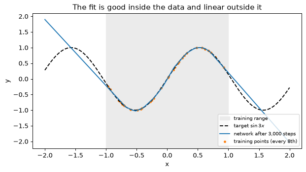
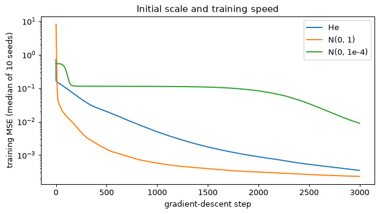
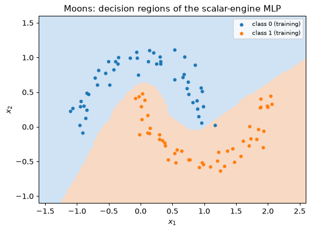
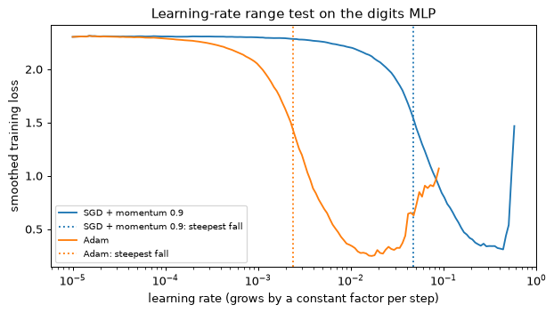
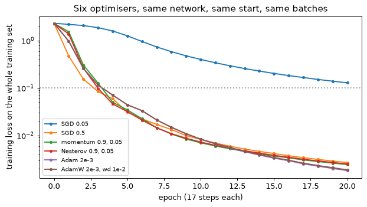
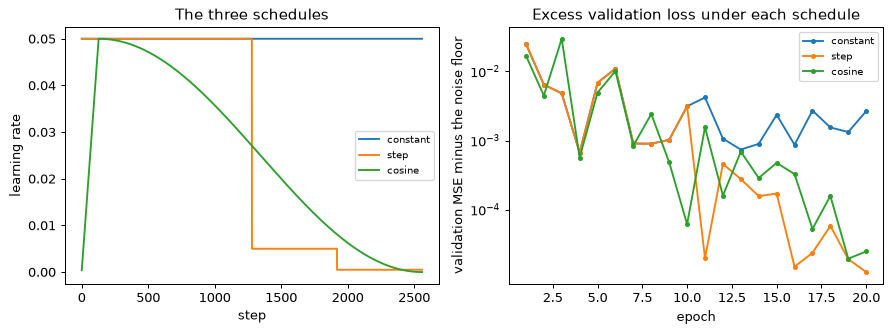

从固定特征到学习得到的特征
模块 01以手工构造特征上的线性模型作结，即 f(\mathbf{x}) = \mathbf{w}^\top\boldsymbol{\psi}(\mathbf{x})。（模块 01 把特征映射写作 \boldsymbol{\phi}；本模块把 \phi 留给激活函数。）只有当有人知道 \boldsymbol{\psi} 时，这样的模型才行得通：对于环内的圆盘，\boldsymbol{\psi}(\mathbf{x}) = (x_1^2, x_2^2, x_1x_2) 就能让两个类别线性可分。而对于一幅图像或一条振动频谱，没有人能把 \boldsymbol{\psi} 写出来。神经网络（neural network）把特征映射变成模型的一部分，并从数据中学出来：
其中 \mathbf{W} 和 \mathbf{b} 与 \mathbf{w} 一起训练，用的是同一种梯度下降。
多层感知机
多层感知机（multilayer perceptron，MLP）把这样的层堆叠起来。本模块将它写作
其中 \mathbf{W}^{(l)} \in \mathbb{R}^{d_{l-1}\times d_l}（每一行对应该层的一个输入，每一列对应一个单元），\mathbf{b}^{(l)} \in \mathbb{R}^{d_l}。下文处处沿用这一约定。激活函数（activation function）\phi 是逐分量作用的固定非线性函数（第 5 节比较各种选择）。最后一层没有 \phi：它的输出 \mathbf{z}^{(L)} 在回归中就是预测值，在分类中就是 logits 向量，由损失函数来处理它，即平方误差或 softmax 交叉熵（cross-entropy）（模块 01，第 5 节）。术语如下：\mathbf{x} 是输入；第 1 到 L-1 层是隐藏层（hidden layer），\mathbf{h}^{(l)} 的每个分量是一个隐藏单元（hidden unit）；第 L 层是输出层；d_l 是第 l 层的宽度（width）；L，即权重层的数目，是深度（depth）；\mathbf{z}^{(l)} 是预激活（pre-activation）。图 2.1 在一个小网络上标出了这些量。
一个 MLP：输入维度为 2，两个各含 4 个单元的隐藏层，一个输出，从左到右画出，每条连接都画出。每个权重层都标注了本模块约定下的参数形状：\mathbf{W}^{(1)} \in \mathbb{R}^{2\times 4}，\mathbf{b}^{(1)} \in \mathbb{R}^{4}；\mathbf{W}^{(2)} \in \mathbb{R}^{4\times 4}，\mathbf{b}^{(2)} \in \mathbb{R}^{4}；\mathbf{W}^{(3)} \in \mathbb{R}^{4\times 1}，b^{(3)} \in \mathbb{R}。每个隐藏列先计算 \mathbf{z} = \mathbf{W}^\top\mathbf{h} + \mathbf{b}，再计算 \mathbf{h} = \phi(\mathbf{z})；输出节点是一个 logit 或一个预测值，不带 \phi。括号标出宽度（每层的单元数）和深度（L = 3 个权重层）。
为什么必须有非线性
没有 \phi，深度什么也换不来。两层给出
这里用到 \mathbf{B}^\top\mathbf{A}^\top = (\mathbf{A}\mathbf{B})^\top：结果是一个仿射映射。由归纳法，任意多个仿射层的堆叠都塌缩成一个，所以没有激活函数的深层网络就是带冗余参数的线性模型。
取 \mathbf{W}^{(1)} = \begin{bmatrix}1 & 2\\ 0 & 1\end{bmatrix}（行对应输入），\mathbf{b}^{(1)} = (1, 0)，\mathbf{W}^{(2)} = \begin{bmatrix}1\\ -1\end{bmatrix}，b^{(2)} = 0.5，且没有激活函数。
- 第 1 层：\mathbf{z}^{(1)} = \mathbf{W}^{(1)\top}\mathbf{x} + \mathbf{b}^{(1)} = (x_1 + 1,\; 2x_1 + x_2)。
- 第 2 层：z^{(2)} = (x_1 + 1) - (2x_1 + x_2) + 0.5 = -x_1 - x_2 + 1.5。
- 公式给出同样的结果：\mathbf{W}^{(1)}\mathbf{W}^{(2)} = (1 - 2,\; 0 - 1)^\top = (-1, -1)^\top，且 \mathbf{W}^{(2)\top}\mathbf{b}^{(1)} + b^{(2)} = 1 - 0 + 0.5 = 1.5。
决策边界 z^{(2)} = 0 是直线 x_1 + x_2 = 1.5，再多这样的层也无法把它弯曲。
通用近似定理说了什么
有了 \phi，原则上一个隐藏层就够了。通用近似定理（universal approximation theorem）：设 \phi 连续且不是多项式。对紧集 K \subset \mathbb{R}^d 上的每个连续函数 f 和每个 \varepsilon > 0，都存在有限的宽度 N 和一组权重，使单隐藏层网络 g(\mathbf{x}) = \sum_{j=1}^{N} a_j\,\phi(\mathbf{w}_j^\top\mathbf{x} + b_j) + c 满足
Cybenko（1989）对 sigmoid 证明了它，Hornik（1991）推广到有界、非常数的激活函数；Leshno 等人（1993）表明“不是多项式”恰好是充要条件，因此 ReLU 也在其内。这个例外不难理解：若 \phi 是 p 次多项式，则每个这样的 g 都是次数至多为 p 的多项式，这是一个固定的函数族，无法任意接近 \sin 3x。
这个定理说的比看上去的要少。它没有说 N 要多大：构造性的证明实际上是用网格铺满 K，而 d 维空间中间距为 h 的网格约有 h^{-d} 个单元格，所以单元数可能随 d 指数增长。它没有说从随机初始点出发的梯度下降能找到这样的权重。它也没有说拟合有限个样本得到的网络能够泛化。本模块其余部分讨论第二个问题；模块 01 第 10 节的评估规范则针对第三个问题。
一维情形下的构造性证明
在一维中，权重可以直接写出来。取节点 a = x_0 < x_1 < \dots < x_K = b，令 p 为 f 的分段线性插值，它在第 k 段上的斜率为 s_k = \big(f(x_{k+1}) - f(x_k)\big)/(x_{k+1} - x_k)。在 [a, b] 上，
在第一段上只有第一个铰链处于激活状态，所以 p 从 f(x_0) 出发，斜率为 s_0；之后每个铰链在其节点处打开，并使斜率恰好改变 c_k。这就是一个含 K 个单元的单隐藏层 ReLU 网络：输入权重为 1，偏置为 -x_k，输出权重为 c_k，输出偏置为 f(x_0)。
它的误差来自线性插值的余项。固定 [x_k, x_{k+1}] 段中的 x，段长为 h，选常数 C，使 e(u) = f(u) - p(u) - C(u - x_k)(u - x_{k+1}) 在 u = x 处为零。那么 e 有三个零点 x_k、x 和 x_{k+1}，所以两次应用罗尔定理，得到某个 \xi 使 e''(\xi) = f''(\xi) - 2C = 0；于是 f(x) - p(x) = \tfrac12 f''(\xi)(x - x_k)(x - x_{k+1})。这个乘积的绝对值在中点处最大，为 h^2/4，所以令 M = \max|f''|，
要达到精度 \varepsilon，需要 h \le \sqrt{8\varepsilon/M}：在一维中，所需单元数正比于 \varepsilon^{-1/2}。
在 [-1, 1] 上逼近 f(x) = \sin 3x，也就是实验 1 拟合的函数。这里 f''(x) = -9\sin 3x，所以 M = 9；取 K 个等长段，h = 2/K，界为 9(2/K)^2/8 = 4.5/K^2。在 200 万个点上测得的最大误差如下：
| K | 界 4.5/K^2 | 实测最大误差 |
|---|---|---|
| 6 | 0.125 | 0.122 |
| 16 | 0.0176 | 0.0174 |
| 21 | 0.0102 | 0.0101 |
| 22 | 0.0093 | 0.0093 |
所以 22 个等长段是达到 \varepsilon = 0.01 所需的最少段数。当 K = 6 时，节点为 -1, -\tfrac23, \dots, 1，六个斜率为 (-2.305, 0.203, 2.524, 2.524, 0.203, -2.305)，铰链系数为 c = (-2.305, 2.508, 2.321, 0, -2.321, -2.508)。第四个恰好为零：\sin 3x 是奇函数，所以 x = 0 两侧的斜率相等（2.524），5 个单元就够了（图 2.2）。同样的对称性对每个偶数 K 都去掉 0 处的铰链，所以 21 个单元就能达到 \varepsilon = 0.01。对比实验 1：在 64 个单元上做梯度下降，3,000 步后训练均方误差为 2.8\times10^{-4}（RMS 误差 0.017）：单元数是三倍，拟合更差，而且事先不能保证它至少能走到这一步。
上图：[-1, 1] 上的 \sin 3x（实线）及其 6 段分段线性插值（虚线），7 个节点用圆点标出，并标注最大误差 0.122。下图：铰链函数 c_k\operatorname{ReLU}(x - x_k)，k = 0, \dots, 5，每个节点一种颜色，图例中给出 c = (-2.305, 2.508, 2.321, 0, -2.321, -2.508)；k = 3 的铰链是平的，因为 c_3 = 0。f(-1) 加上六个铰链之和，就是上图的虚线插值。
深度为什么有帮助
这一构造每个线性段花费一个单元。对某些函数，深度要高效得多。[0, 1] 上的帐篷映射（tent map）用两个 ReLU 单元：
它把 [0, 1] 的每一半都映满整个 [0, 1]，前一半上升，后一半下降，所以再作用一次，就把每个线性段对折：k 重复合 t^k 是一个有 2^k 段的锯齿波（Telgarsky 2016）。作为网络，t^k 是 k 层、每层 2 个单元。第一层有 2 个权重和 2 个偏置；之后每一层通过 4 个权重和 2 个偏置读取上一层的一对输出 (h_1, h_2)，因为 t = 2h_1 - 4h_2 是这一对输出的线性函数；输出 2h_1 - 4h_2 需要 2 个权重和 1 个偏置。合计：2k 个单元，4 + 6(k - 1) + 3 = 6k + 1 个参数。
标量输入上的单隐藏层 ReLU 网络 g(x) = \sum_j a_j\operatorname{ReLU}(w_jx + b_j) + c，只在某个单元切换的地方改变斜率，即 x = -b_j/w_j 处。有 n 个单元时，它至多有 n 个断点，因而至多有 n + 1 段。因此表示 t^k 至少需要 2^k - 1 个单元和 3(2^k - 1) + 1 个参数（每个单元有一个输入权重、一个偏置和一个输出权重，外加 c）。复合在每一段上重用同样的两个单元；宽度则要为每一段分别付出代价。
在 [0, 1] 上取 2^{12} + 1 个点的网格，细到足以包含每个断点，则对 k = 1, \dots, 6，t^k 分别有 2、4、8、16、32 和 64 个线性段。参数数量如下：
| k | 深层：2k 个单元，6k + 1 个参数 | 单隐藏层：至少 |
|---|---|---|
| 4 | 8 个单元，25 个参数 | 15 个单元，46 个参数 |
| 10 | 20 个单元，61 个参数 | 1,023 个单元，3,070 个参数 |
| 20 | 40 个单元，121 个参数 | 1,048,575 个单元，3,145,726 个参数 |
深层的代价随 k 线性增长，浅层的代价则呈指数增长（图 2.3）。
左：[0, 1] 上的四个小图，分别是 t、t\circ t、t^3 和 t^4，标注为 2、4、8 和 16 段。右：深层构造（k 层，每层 2 个 ReLU 单元，6k + 1 个参数）与单隐藏层方案（2^k - 1 个单元，3(2^k - 1) + 1 个参数）并排，以及 k = 4、10 和 20 时的参数数量表：25 对 46，61 对 3,070，121 对 3,145,726。
这个论证所表明的是：存在这样的函数，深层网络表示它的代价比浅层网络低指数倍；更一般地，ReLU 网络能产生的线性区域数随深度指数增长（Montúfar 等人 2014）。它并没有表明你关心的函数属于这一类，也没有表明梯度下降能找到这种深层构造。深度也有代价：梯度必须穿过每一层往回传，而第 3 节会说明它在途中如何消失，第 5 节、第 6 节和第 10 节处理这个问题。支持深度的非正式理由是：真实数据看上去具有组合结构，边缘组成纹理，纹理组成部件（模块 03），而简单映射的复合正好契合这种结构。
隐藏单元学到了什么
第一层的 ReLU 单元计算 \operatorname{ReLU}(\mathbf{w}^\top\mathbf{x} + b)：在直线 \mathbf{w}^\top\mathbf{x} + b = 0 的一侧为零，在另一侧随到直线的距离线性上升，沿这条直线为常数。它是一个脊函数（ridge function），即半平面上的一个斜坡。输出层用权重把这些斜坡相加，所以 logit 是分段线性的，决策边界（logit 为零处）是一个多边形。三个斜坡可以用一个三角形围住圆盘；两个只能形成一个楔形，什么也围不住。
这些数字来自对该组件规格的 NumPy 模拟（circles 数据，200 个训练点，Adam，\eta = 0.03）；组件生成随机数的方式不同，所以具体数字会有出入。
- 没有隐藏层：训练准确率 53.5%，损失 0.692，基本等于 \ln 2 = 0.693：即随机猜测。
- 三个隐藏层，恒等激活：准确率同样恰好是 53.5%，这就是本节所说的塌缩。
- 一个含 2 个 ReLU 单元的隐藏层：84.5%（两个半平面围不住圆盘）。3 个单元：约 245 步后达到 100%（一个三角形）。8 个单元：约 58 步后达到 100%。
- 双臂螺旋：两个各含 16 个单元的隐藏层（337 个参数）约 740 步拟合训练集，一个含 64 个单元的隐藏层（257 个参数）约 2,430 步，一个含 128 个单元的隐藏层（513 个参数）约 1,830 步；一个含 16 个单元的隐藏层在 3,000 步内只达到 74%。
用八个不同的数据和初始化种子重复 circles 实验，可以看出这类数字波动有多大。两个单元的准确率在 70% 到 90% 之间。三个单元在八次运行中有五次在 1,000 步内找到三角形，另外三次停滞：三角形每次都存在，但梯度下降并不总能找到它。八个单元总是成功，用 61 到 235 步。螺旋的对比说明了深度的作用，但并不证明什么。
隐藏层就是学出来的特征映射。没有非线性，任意深度都塌缩成一个仿射映射；有了非线性，单个隐藏层就能逼近任意连续函数，但没有任何保证说网络会很小，或者训练能找到它。
一个有三个隐藏层但没有激活函数的网络，在 circles 数据上训练。它能表示什么样的决策边界？
查看答案
只有直线。仿射映射的复合仍是仿射的，所以这个网络就是多了些参数的逻辑回归。
一个含 5 个隐藏单元的单隐藏层 ReLU 网络，输入是标量。它的输出至多有多少个线性段？
查看答案
六个。每个单元至多增加一个断点，位于 x = -b/w，5 个断点至多把直线切成 6 段。
通用近似定理是否保证，在足够宽的网络上做梯度下降就能拟合给定的连续函数？
查看答案
不保证。它只保证合适的权重存在。它对如何找到这些权重没有任何说明，对从有限数据泛化也没有任何说明。
带形状的前向传播
第 1 节把一个样本写成列向量。训练一次处理 B 个样本组成的一个 batch，把它们堆成矩阵的各行。网络代码中的大多数 bug 都是形状 bug，所以本节把每个形状都写下来。它还统计前向传播在参数、运算量和内存上的开销，因为本系列后面所有的开销估算都从这些计数出发。
batch 形式
令 \mathbf{H}^{(0)} = \mathbf{X} \in \mathbb{R}^{B\times d_0}，每行一个样本，
其中 \mathbf{1} \in \mathbb{R}^{B} 是全 1 向量，所以 \mathbf{1}\mathbf{b}^{(l)\top} 把偏置复制到每一行。\mathbf{Z}^{(l)} 的第 i 行是 \mathbf{h}_i^{(l-1)\top}\mathbf{W}^{(l)} + \mathbf{b}^{(l)\top}，即第 1 节 \mathbf{W}^{(l)\top}\mathbf{h}_i^{(l-1)} + \mathbf{b}^{(l)} 的转置：计算相同，只是样本按行而不是按列排列。在 NumPy 中偏置不需要复制：把形状为 (d_l,) 的数组加到形状为 (B, d_l) 的数组上，会沿行广播（broadcast）。输出 \mathbf{Z}^{(L)} \in \mathbb{R}^{B\times K} 为每个样本给出一行 K 个 logits；softmax 发生在损失函数内部（第 12 节），绝不作为它前面的一层。
import numpy as np
rng = np.random.default_rng(0)
sizes = [64, 128, 128, 10] # d0 ... d3: the digits network
params = [(rng.normal(0, np.sqrt(2 / m), (m, n)), np.zeros(n)) # W is (d_{l-1}, d_l)
for m, n in zip(sizes[:-1], sizes[1:])]
X = rng.normal(size=(64, sizes[0])) # a batch: B = 64 rows
H = X
for l, (W, b) in enumerate(params, start=1):
Z = H @ W + b # (B, d_{l-1}) @ (d_{l-1}, d_l) + (d_l,)
assert Z.shape == (X.shape[0], W.shape[1])
H = np.maximum(Z, 0) if l < len(params) else Z # no activation on the logits
print(H.shape, sum(W.size + b.size for W, b in params))
(64, 10) 26122
参数、FLOPs 与内存
第 l 层有 d_{l-1}d_l 个权重和 d_l 个偏置，所以网络共有 \sum_{l=1}^{L}(d_{l-1}d_l + d_l) 个参数。一个 (B\times m) 矩阵与一个 (m\times n) 矩阵相乘，要算 Bn 个长度为 m 的点积：Bmn 次乘法和差不多同样多的加法，即 2Bmn 次浮点运算（floating-point operations，FLOPs）。对各层求和，前向传播约花费权重数的 2B 倍：每个权重对每个样本参与一次乘法和一次加法。偏置加法和激活每层花费 O(Bd_l)，对宽层而言，与 Bd_{l-1}d_l 相比可以忽略。大模型前向传播每个 token 约花费 2N FLOPs 的经验法则就来源于此。
本系列把这类计数的约定一次定下，见模块 06 第 11 节：在 FLOP 计数中，N 指参与矩阵乘法的权重（嵌入查表不花 FLOPs），注意力另加一项，随上下文增长，一个训练步按三次前向传播计（第 3 节说明为什么反向传播至多花两次）。相比之下，内存要计入每一个参数。
反向传播（第 3 节）需要每一层的输入 \mathbf{H}^{(l-1)} 和预激活 \mathbf{Z}^{(l)}（或足以计算 \phi' 的信息），所以为训练而做的前向传播要存储 O(B\sum_l d_l) 个数。参数只存一份；激活则 batch 中每个样本存一份，这就是为什么激活内存随 batch 大小乘以深度增长。字节单位遵循本系列的约定：kB、MB 和 GB 是十进制（10^3、10^6 和 10^9 字节）；KiB、MiB 和 GiB 是二进制（2^{10}、2^{20} 和 2^{30} 字节）。
两个输入，两个 ReLU 隐藏单元，一个线性输出，平方误差：\mathbf{x} = (2, 1)；\mathbf{W}^{(1)} = \begin{bmatrix}0.5 & -1.0\\ 0.25 & 0.5\end{bmatrix}（行对应输入，列对应隐藏单元），\mathbf{b}^{(1)} = (0.1, 0)；\mathbf{W}^{(2)} = \begin{bmatrix}0.8\\ -0.6\end{bmatrix}，b^{(2)} = 0.2；目标 t = 1；损失 (\hat y - t)^2。
- 第 1 层：\mathbf{z}^{(1)} = \mathbf{W}^{(1)\top}\mathbf{x} + \mathbf{b}^{(1)} = (0.5\cdot 2 + 0.25\cdot 1 + 0.1,\; -1.0\cdot 2 + 0.5\cdot 1 + 0) = (1.35, -1.5)。
- ReLU：\mathbf{h}^{(1)} = (1.35, 0)。第二个单元未激活。
- 第 2 层：\hat y = 0.8\cdot 1.35 - 0.6\cdot 0 + 0.2 = 1.28。
- 损失：(1.28 - 1)^2 = 0.28^2 = 0.0784。
共九个参数（4 + 2 + 2 + 1）。按 B = 1 的 2Bmn 计数，两次乘积花费 12 FLOPs：第 1 层 2\cdot 2\cdot 2 = 8，第 2 层 2\cdot 2\cdot 1 = 4，另加 3 次偏置加法。当作只含一个样本的 batch，\mathbf{X} = [\,2\;\;1\,]，\mathbf{X}\mathbf{W}^{(1)} + \mathbf{b}^{(1)\top} = [\,1.35\;\;{-1.5}\,]：数字与列形式相同，只是写成一行。
网络 64 \to 128 \to 128 \to 10 有 64\cdot 128 + 128 + 128\cdot 128 + 128 + 128\cdot 10 + 10 = 8{,}320 + 16{,}512 + 1{,}290 = 26{,}122 个参数（fp32 下 104,488 字节，每个 4 字节），其中 25,856 个是权重。前向传播每个样本花费 2\times 25{,}856 = 51{,}712 FLOPs。对于 64 个样本的 batch：
- 第 1 层：2\cdot 64\cdot 64\cdot 128 = 1{,}048{,}576；
- 第 2 层：2\cdot 64\cdot 128\cdot 128 = 2{,}097{,}152；
- 第 3 层：2\cdot 64\cdot 128\cdot 10 = 163{,}840；
合计 3,309,568，约 3.3 MFLOPs。为反向传播存储的内容，在 B = 64 时包括：输入、两个隐藏层的 \mathbf{Z} 和 \mathbf{H}，以及 logits，共 (64 + 2\cdot 128 + 2\cdot 128 + 10)\times 64\times 4 = 150{,}016 字节。激活占用的内存已经超过参数。图 2.4 给出这些形状和开销。
B = 64 时 digits 网络的 batch 前向传播。\mathbf{X}（64\times 64，标注为 B\times d_0）乘以 \mathbf{W}^{(1)}（64\times 128），再加上沿行向下复制（广播）的偏置行 \mathbf{b}^{(1)\top}（1\times 128），得到 \mathbf{Z}^{(1)}（64\times 128）；\phi 把它映射为 \mathbf{H}^{(1)}。然后 \mathbf{H}^{(1)}\mathbf{W}^{(2)} 给出 \mathbf{Z}^{(2)} 和 \mathbf{H}^{(2)}，\mathbf{H}^{(2)}\mathbf{W}^{(3)} 给出 logits（64\times 10）。每个乘积下方标出其开销：2\cdot 64\cdot 64\cdot 128 = 1{,}048{,}576、2\cdot 64\cdot 128\cdot 128 = 2{,}097{,}152 和 2\cdot 64\cdot 128\cdot 10 = 163{,}840 FLOPs。为反向传播保留的张量用阴影标出。
一个 50 层、宽度 1,024 的 MLP 有 50\times(1{,}024^2 + 1{,}024) = 52{,}480{,}000 个参数，fp32 下 210 MB。对 batch 为 256，存储每层的 \mathbf{Z} 和 \mathbf{H} 需要 2\times 50\times 256\times 1{,}024\times 4 = 104{,}857{,}600 字节，恰好 100 MiB（105 MB）；batch 为 4,096 时是它的 16 倍，1.6 GiB（1.7 GB）。一旦 batch 很大，决定训练内存的就是激活，而不是参数。在另一端，一个有 7\times 10^9 个参数的模型，前向传播每个 token 大约需要 2\times 7\times 10^9 = 1.4\times 10^{10} FLOPs，这一估计把每个参数都当作矩阵权重，并忽略注意力；模块 06 第 11 节会对它做细化。
实践中的形状
PyTorch 的 nn.Linear(d_in, d_out) 把权重存成 (d_out, d_in) 张量，计算 \mathbf{X}\mathbf{W}^\top + \mathbf{b}。数学上完全相同，只是存储布局不同，在 NumPy 和 PyTorch 之间复制权重时这一点很要紧。实验 1 正是出于这个原因把 W1.T 复制进 PyTorch 的层。
import torch, torch.nn as nn
layer = nn.Linear(64, 128) # PyTorch stores (d_out, d_in)
print(tuple(layer.weight.shape), tuple(layer.bias.shape))
pred, t = torch.zeros(256, 1), torch.zeros(256) # (B, 1) against (B,)
print(tuple((pred - t).shape)) # broadcast, silently
(128, 64) (128,)
(256, 256)
在每个数组旁边写下它的形状，写在注释里或写成 assert。第二个 print 显示了回归中最常见的静默形状 bug：形状为 (B, 1) 的预测减去形状为 (B,) 的目标，会广播成 (B, B)，即每个预测对每个目标。NumPy 毫无提示地算出结果。PyTorch 的 F.mse_loss 会警告：“Using a target size (torch.Size([256])) that is different to the input size (torch.Size([256, 1])). This will likely lead to incorrect results due to broadcasting”，然后继续运行。模型于是学到错误的东西。对预测 \hat y_i，在所有目标上的均值是 \frac1B\sum_j(\hat y_i - t_j)^2 = (\hat y_i - \bar t)^2 + \operatorname{Var}(t)，所以当每个预测都等于目标均值 \bar t 时损失最小，与输入无关，此时损失等于目标的方差。
实验 1 的网络用 PyTorch 实现（nn.Linear(1, 64)、ReLU、nn.Linear(64, 1)），在 torch.manual_seed(0) 之后抽取 256 个点，拟合 t = \sin 3x，目标形状为 (256,)，预测形状为 (256, 1)，用 Adam，\eta = 10^{-2}，训练 2,000 步。每一步都会触发警告（Python 只打印一次）。预测塌缩成常数，256 个输入上的标准差为 0.0006，“损失”稳定在 0.5174：恰好是目标的方差，与上面的公式所预测的一致。
\mathbf{X} 的形状是 (32, 64)，\mathbf{W}^{(1)} 的形状是 (64, 128)。\mathbf{Z}^{(1)} 的形状是什么？这个乘积花费多少？
查看答案
(32, 128)，花费 2\cdot 32\cdot 64\cdot 128 = 524{,}288 FLOPs。
一个回归模型输出形状为 (B, 1)，目标形状为 (B,)。NumPy 对 (pred - t) ** 2 会算出什么？以其均值为损失训练的模型会学到什么？
查看答案
一个 (B, B) 矩阵，由所有成对差的平方构成。它的均值在“处处预测目标均值”时最小，所以模型忽略输入，损失停在目标的方差上。
反向传播：四个方程
梯度下降需要每一层的 \partial\mathcal{L}/\partial\mathbf{W}^{(l)} 和 \partial\mathcal{L}/\partial\mathbf{b}^{(l)}。反向传播（backpropagation）是经过组织的链式法则，使每一层的梯度都由下一层的梯度算出，只需一次反向扫描，代价与前向传播相当。本节推导它，使反向传播的每一行都能手工写出、检验和估算开销。
矩阵微积分，够用即可
标量对向量或矩阵的梯度，与该向量或矩阵形状相同。对于 \mathbf{y} = f(\mathbf{x})，\mathbf{y} \in \mathbb{R}^m，\mathbf{x} \in \mathbb{R}^n，雅可比矩阵（Jacobian）\mathbf{J} \in \mathbb{R}^{m\times n} 的元素为 J_{ij} = \partial y_i/\partial x_j。链式法则把雅可比矩阵复合起来，\mathbf{J}_{g\circ f} = \mathbf{J}_g\mathbf{J}_f，对标量损失，它写成
由此得到三个事实，本节只用这三个。
- 对 \mathbf{z} = \mathbf{W}^\top\mathbf{h} + \mathbf{b}，z_j = \sum_i W_{ij}h_i + b_j，所以 \partial z_j/\partial h_i = W_{ij}：雅可比矩阵是 \mathbf{W}^\top，且 \nabla_{\mathbf{h}}\mathcal{L} = \mathbf{W}\,\nabla_{\mathbf{z}}\mathcal{L}。
- W_{ij} 只出现在 z_j 中，系数为 h_i，所以 \partial\mathcal{L}/\partial W_{ij} = h_i\,\partial\mathcal{L}/\partial z_j：\nabla_{\mathbf{W}}\mathcal{L} = \mathbf{h}\,(\nabla_{\mathbf{z}}\mathcal{L})^\top，是一个外积。
- 对逐元素的 \mathbf{h} = \phi(\mathbf{z})，h_i 只依赖于 z_i，所以雅可比矩阵是 \operatorname{diag}(\phi'(\mathbf{z}))，且 \nabla_{\mathbf{z}}\mathcal{L} = \nabla_{\mathbf{h}}\mathcal{L}\odot\phi'(\mathbf{z})，其中 \odot 是逐元素乘积。
拿不准转置放在哪里时，检查形状：\nabla_{\mathbf{W}}\mathcal{L} 必须是 d_{\text{in}}\times d_{\text{out}}，\mathbf{h} 的长度是 d_{\text{in}}，\nabla_{\mathbf{z}}\mathcal{L} 的长度是 d_{\text{out}}，只有 \mathbf{h}(\nabla_{\mathbf{z}}\mathcal{L})^\top 具有这个形状。
误差信号与输出处的方程
把第 l 层的误差信号（error signal）定义为损失对其预激活的梯度，针对一个样本：\boldsymbol{\delta}^{(l)} = \partial\mathcal{L}/\partial\mathbf{z}^{(l)} \in \mathbb{R}^{d_l}。
方程 1，在输出处。对于 softmax 交叉熵，\mathcal{L} = -\sum_k y_k\ln\hat p_k，其中 \hat{\mathbf{p}} = \softmax(\mathbf{z})，\mathbf{y} 为独热向量。模块 01 第 6 节是分情形推导这个梯度的；借助雅可比矩阵，两行就够了。对 \hat p_k = e^{z_k}/\sum_m e^{z_m} 求导，得 \partial\hat p_k/\partial z_j = \hat p_k([k = j] - \hat p_j)，其中 [k = j] 在 k = j 时为 1，否则为 0：softmax 的雅可比矩阵是 \operatorname{diag}(\hat{\mathbf{p}}) - \hat{\mathbf{p}}\hat{\mathbf{p}}^\top。于是
因为 \sum_k y_k = 1。所以 \boldsymbol{\delta}^{(L)} = \hat{\mathbf{p}} - \mathbf{y}，与逻辑回归中的 \hat p - y 相同，其各项之和为零。对线性输出上的平方误差 (\hat y - y)^2，\delta^{(L)} = 2(\hat y - y)。当损失在一个 batch 上取平均时，每个样本的 \boldsymbol{\delta} 带有一个因子 1/B。
Logits \mathbf{z} = (2.0, 1.0, 0.1)，真实类别为 0。指数为 (7.389, 2.718, 1.105)，和为 11.213，所以 \hat{\mathbf{p}} = (0.6590, 0.2424, 0.0986)。损失为 -\ln 0.6590 = 0.4170，\boldsymbol{\delta} = \hat{\mathbf{p}} - \mathbf{y} = (-0.3410, 0.2424, 0.0986)，和为零：提高真实类别的 logit 会降低损失，提高另外任何一个的 logit 都会使损失升高。
方程 2，层与层之间
第 l + 1 层计算 \mathbf{z}^{(l+1)} = \mathbf{W}^{(l+1)\top}\phi(\mathbf{z}^{(l)}) + \mathbf{b}^{(l+1)}。事实 1 把误差从 \mathbf{z}^{(l+1)} 传回 \mathbf{h}^{(l)}，事实 3 再把它传过 \phi：
误差沿着当初传递信号的同一组权重被推回去，并受激活函数导数的门控：\phi'(z_i) = 0 的单元什么也传不回去。
方程 3 和 4，参数梯度
对第 l 层应用事实 2，再加上 \partial\mathbf{z}^{(l)}/\partial\mathbf{b}^{(l)} = \mathbf{I}，得到
权重梯度是流入该层的量与流出的误差的外积，其形状与 \mathbf{W}^{(l)} 相同。这四个方程就是整个算法：一次前向传播，存下方程需要的量，然后一次反向扫描（图 2.5）。
forward: h(0) = x
for l = 1 … L: z(l) = W(l)ᵀ h(l−1) + b(l); h(l) = φ(z(l)) (no φ at l = L)
keep every h(l−1) and z(l)
backward: δ(L) = ∂𝓛/∂z(L) p̂ − y, or 2(ŷ − y) Equation 1
for l = L … 1:
∂𝓛/∂W(l) = h(l−1) δ(l)ᵀ; ∂𝓛/∂b(l) = δ(l) Equations 3, 4
if l > 1: δ(l−1) = (W(l) δ(l)) ⊙ φ′(z(l−1)) Equation 2
三层 MLP 的反向传播。上排自左向右是前向传播：\mathbf{h}^{(0)} = \mathbf{x} \to \mathbf{z}^{(1)} \to \mathbf{h}^{(1)} \to \mathbf{z}^{(2)} \to \mathbf{h}^{(2)} \to \mathbf{z}^{(3)} \to \mathcal{L}，每个被存储的张量画成节点下方的一个带阴影小方框，标注“为反向传播保留”。下排自右向左是反向传播：\boldsymbol{\delta}^{(3)} = \hat{\mathbf{p}} - \mathbf{y} \to \boldsymbol{\delta}^{(2)} \to \boldsymbol{\delta}^{(1)}。每一层有两个分支：\mathbf{W}^{(l)}\boldsymbol{\delta}^{(l)} 经 \phi'(\mathbf{z}^{(l-1)}) 门控，得到 \boldsymbol{\delta}^{(l-1)}；\mathbf{h}^{(l-1)}\boldsymbol{\delta}^{(l)\top} 得到 \partial\mathcal{L}/\partial\mathbf{W}^{(l)}，并用一条虚线连到被存储的 \mathbf{h}^{(l-1)}。
接着第 2 节的例子（图 2.6 给出了每个数字）：\mathbf{x} = (2, 1)，\mathbf{z}^{(1)} = (1.35, -1.5)，\mathbf{h}^{(1)} = (1.35, 0)，\hat y = 1.28，t = 1。
- 方程 1，平方误差：\delta^{(2)} = 2(\hat y - t) = 2(1.28 - 1) = 0.56。
- 第 2 层的方程 3 和 4： \partial\mathcal{L}/\partial\mathbf{W}^{(2)} = \mathbf{h}^{(1)}\delta^{(2)} = (1.35\cdot 0.56,\; 0\cdot 0.56) = (0.756, 0)， \partial\mathcal{L}/\partial b^{(2)} = 0.56。
- 方程 2：\mathbf{W}^{(2)}\delta^{(2)} = (0.8\cdot 0.56,\; -0.6\cdot 0.56) = (0.448, -0.336)，经 \phi'(\mathbf{z}^{(1)}) = (1, 0) 门控，所以 \boldsymbol{\delta}^{(1)} = (0.448, 0)。
- 第 1 层的方程 3 和 4： \partial\mathcal{L}/\partial\mathbf{W}^{(1)} = \mathbf{x}\boldsymbol{\delta}^{(1)\top} = \begin{bmatrix}2\cdot 0.448 & 2\cdot 0\\ 1\cdot 0.448 & 1\cdot 0\end{bmatrix} = \begin{bmatrix}0.896 & 0\\ 0.448 & 0\end{bmatrix}， \partial\mathcal{L}/\partial\mathbf{b}^{(1)} = (0.448, 0)。
未激活的第二个单元（z = -1.5）不传递梯度，所以它的输入权重不会从这个样本中学到任何东西。它的输出权重同样得不到梯度，因为它的输出是 0。
用步长 \epsilon_{\text{fd}} = 10^{-3} 的中心差分检验其中一项。令 W^{(1)}_{11} = 0.501，得 z^{(1)}_1 = 1.352，\hat y = 1.2816，\mathcal{L} = 0.07929856；令它为 0.499，得 1.348、1.2784 和 0.07750656。于是 (0.07929856 - 0.07750656)/0.002 = 0.896000，与反向传播得到的值一致。吻合是精确的，因为在这一点附近，\mathcal{L} 是 W^{(1)}_{11} 的二次函数，而中心差分对二次函数是精确的；第 14 节说明一般情况下如何选取 \epsilon_{\text{fd}}。
第 2 节的小网络及其数值。前向值用黑色：\mathbf{x} = (2, 1)，\mathbf{z}^{(1)} = (1.35, -1.5)，\mathbf{h}^{(1)} = (1.35, 0)，\hat y = 1.28，\mathcal{L} = 0.0784。梯度用红色：\delta^{(2)} = 0.56，\partial\mathcal{L}/\partial\mathbf{W}^{(2)} = (0.756, 0)，\boldsymbol{\delta}^{(1)} = (0.448, 0)，以及 \partial\mathcal{L}/\partial\mathbf{W}^{(1)}，其元素为 0.896、0.448、0 和 0。未激活的第二个隐藏单元以灰色显示，旁边标注 \phi' = 0。
batch 形式与代码
对一个 batch，把误差信号堆成各行，\boldsymbol{\Delta}^{(l)} \in \mathbb{R}^{B\times d_l}，第 i 行等于 \boldsymbol{\delta}_i^{(l)\top}。逐行转置这些方程，并把参数梯度在 batch 上求和：
由于 (\mathbf{H}^\top\boldsymbol{\Delta})_{jk} = \sum_i H_{ij}\Delta_{ik}，乘积 \mathbf{H}^{(l-1)\top}\boldsymbol{\Delta}^{(l)} 就是外积 \mathbf{h}_i\boldsymbol{\delta}_i^\top 在 batch 上的和；偏置梯度是 \boldsymbol{\Delta}^{(l)} 的列和。实验 1 中两层回归网络（均方误差）的 backward 函数，与这几行一一对应。把它在小网络上作为只含一个样本的 batch 运行，会打印出上面的数字：
import numpy as np
def forward(p, X):
Z1 = X @ p["W1"] + p["b1"]; H1 = np.maximum(Z1, 0) # (B, d1), ReLU
Y = H1 @ p["W2"] + p["b2"] # (B, 1), no activation
return Y, (X, Z1, H1) # keep what backward needs
def backward(p, cache, Y, T):
X, Z1, H1 = cache; B = X.shape[0]
dY = 2 * (Y - T) / B # Delta(2): Equation 1, mean over the batch
g = {"W2": H1.T @ dY, "b2": dY.sum(0)} # Equations 3 and 4: H1^T Delta, column sums
dH1 = dY @ p["W2"].T # Equation 2: the error passed down ...
dZ1 = dH1 * (Z1 > 0) # ... gated by ReLU'(Z1)
g["W1"] = X.T @ dZ1; g["b1"] = dZ1.sum(0)
return g
p = {"W1": np.array([[0.5, -1.0], [0.25, 0.5]]), "b1": np.array([0.1, 0.0]),
"W2": np.array([[0.8], [-0.6]]), "b2": np.array([0.2])}
X, T = np.array([[2.0, 1.0]]), np.array([[1.0]]) # one example: B = 1
Y, cache = forward(p, X)
g = backward(p, cache, Y, T)
for k in ("W1", "b1", "W2", "b2"):
print(k, np.round(g[k], 4).tolist())
W1 [[0.896, 0.0], [0.448, 0.0]]
b1 [0.448, 0.0]
W2 [[0.756], [0.0]]
b2 [0.56]
反向传播的开销
第 l 层的前向传播是一次乘积 \mathbf{H}^{(l-1)}\mathbf{W}^{(l)}，花费 2Bd_{l-1}d_l FLOPs。它的反向传播做两次同样大小的乘积：用 \boldsymbol{\Delta}^{(l)}\mathbf{W}^{(l)\top} 把误差往下传，用 \mathbf{H}^{(l-1)\top}\boldsymbol{\Delta}^{(l)} 求权重梯度。门控和偏置求和花费 O(Bd_l)。所以反向传播至多花前向传播的两倍，一个训练步至多约为三次前向传播。当第一层占了很大一部分工作量时，开销会低于两倍，因为不需要对输入 \mathbf{X} 求梯度，第一层省去了误差乘积。模块 06 第 11 节把这一论证推广为 Transformer 的训练 FLOPs 计数。
对 64 \to 128 \to 128 \to 10，B = 64，前向传播花费 3,309,568 FLOPs（第 2 节）。权重梯度花费同样多，3,309,568。第 3 层和第 2 层往下传的误差花费 2\cdot 64\cdot(128\cdot 10 + 128\cdot 128) = 163{,}840 + 2{,}097{,}152 = 2{,}260{,}992；第 1 层不往下传任何东西。反向传播花费 3{,}309{,}568 + 2{,}260{,}992 = 5{,}570{,}560 FLOPs，是前向传播的 1.68 倍，完整的一个训练步是 2.68 次前向传播。
两个推论
从这四个方程可以得到两个事实，它们解释了训练实践中的很多做法。
梯度随深度消失或爆炸。从输出处展开方程 2，
这是 L - l 个矩阵 \mathbf{D}^{(k-1)}\mathbf{W}^{(k)} 的乘积，每个都是一层的转置雅可比矩阵。如果它们的范数小于 1，误差在传向前面各层的途中几何级数地缩小，梯度就消失（vanish）；如果大于 1，误差增大，梯度就爆炸（explode）。深层 sigmoid 网络在 20 世纪 90 年代出了名地难训练，很大程度上就是这个原因，因为 \sigma' \le 1/4。ReLU、仔细的初始化、归一化和残差连接是对应的补救办法，大致按这个历史顺序出现（第 5 节、第 6 节和第 10 节）。
sigmoid 的导数至多为 \sigma'(0) = 0.25，所以仅激活这一项，十层 sigmoid 就至多把误差乘以 0.25^{10} = 9.5\times 10^{-7}。在典型的预激活值 2 处，\sigma'(2) = 0.881\times 0.119 = 0.105，因子为 0.105^{10} = 1.6\times 10^{-10}。除非权重来补偿，前几层收到的误差信号只有百万分之一甚至更少。
训练内存随深度乘以 batch 增长。方程 3 需要每一层的输入 \mathbf{h}^{(l-1)}，所以前向传播必须把每层的输入保留到反向扫描走到它为止：内存正比于深度乘以 batch，正如第 2 节所统计的。梯度检查点用重新计算代替存储，正是为此而存在（第 4 节）。
反向传播就是四个方程：由损失得到 \boldsymbol{\delta}^{(L)}；每个 \boldsymbol{\delta}^{(l)} 由下一层经 \mathbf{W} 和 \phi' 得到；每个权重梯度是该层存储的输入与其 \boldsymbol{\delta} 的外积。它至多花两次前向传播的开销，外加每一层输入的内存。
\mathbf{W}^{(l)} 的形状是 (64, 32)。对一个样本，\boldsymbol{\delta}^{(l)} 和 \partial\mathcal{L}/\partial\mathbf{W}^{(l)} 的形状各是什么？
查看答案
\boldsymbol{\delta}^{(l)} \in \mathbb{R}^{32}，该层每个单元一项；\partial\mathcal{L}/\partial\mathbf{W}^{(l)} = \mathbf{h}^{(l-1)}\boldsymbol{\delta}^{(l)\top} \in \mathbb{R}^{64\times 32}，与 \mathbf{W}^{(l)} 的形状相同。
为什么一个训练步约花费三次前向传播？
查看答案
每层的反向传播做两次与其前向乘积同样大小的乘积：一次把误差往下传，一次求权重梯度。所以前向加反向至多是三次前向传播，因为第一层不往下传误差，所以略少一些。
对某个样本，一个 ReLU 单元的 z < 0。这个样本给它的输入权重带来什么梯度？
查看答案
零。它的 \phi'(z) = 0 把它的 \delta 门控为零，而每个输入权重的梯度是输入乘以这个 \delta。
自动微分：计算图、反向模式与前向模式
第 3 节手工推导了 MLP 的反向传播。一种新的层类型，比如卷积或注意力块，就需要一次新的推导，而每次手工推导都可能引入 bug。框架通过机械地对程序求导来避免这两点。自动微分（automatic differentiation，autodiff）把链式法则应用到程序实际执行的基本运算上，反向传播就是它的反向模式的一个实例。本节在一个小例子上演示两种模式，说明为什么对标量损失应当用反向模式，并描述调用 loss.backward() 时 PyTorch 做了什么。
计算图
计算图（computational graph）为每个基本运算（加、乘、矩阵乘积、exp、log、sin、tanh、ReLU）设一个节点，边传递中间值 v_i，这些值按一种求值顺序编号，其中每个节点都排在它的输入之后（拓扑序）。每个基本运算都知道自己的局部偏导数：\partial(uv)/\partial u = v，\partial\ln u/\partial u = 1/u。贯穿本节的例子来自 Baydin 等人（2018）：
其中 v_1 = \ln x_1，v_2 = x_1x_2，v_3 = \sin x_2，v_4 = v_1 + v_2，f = v_4 - v_3（图 2.7）。每个输入连到两个节点。
f(x_1, x_2) = \ln x_1 + x_1x_2 - \sin x_2 的计算图：输入节点 x_1 = 2 和 x_2 = 5；运算节点 \ln、\times、\sin、+ 和 -，其前向值用黑色标出（0.693、10、-0.959、10.693、11.652）。每个节点旁用红色标出伴随量：输出处和 + 处为 1，\sin 处为 -1，\ln 和 \times 处为 1；然后 x_1 处为 5.5 = 0.5 + 5，两条红色箭头在此汇合，标注“+=”；x_2 处为 1.716 = 2 - 0.284。
前向模式
前向模式在每个值旁边携带一个切向量（tangent）\dot v_i，即 v_i 沿输入空间中选定方向的导数：
用一个方向给输入赋初值，\dot{\mathbf{x}} = \mathbf{u}，一次传播就得到方向导数 \mathbf{J}\mathbf{u}，即雅可比-向量积（Jacobian-vector product，JVP）。对偶数（dual number）实现了它：形如 a + b\epsilon、\epsilon^2 = 0 的数。由泰勒定理，f(a + b\epsilon) = f(a) + f'(a)\,b\epsilon，\epsilon 的更高次幂都为零，所以对偶数上的算术可以精确地把导数带着走。乘积法则由 (a + b\epsilon)(c + d\epsilon) = ac + (ad + bc)\epsilon 自然得出。
import math
class Dual:
"""a + b·ε with ε² = 0: the value a carries its derivative b along."""
def __init__(self, a, b=0.0):
self.a, self.b = a, b
def __add__(self, o):
return Dual(self.a + o.a, self.b + o.b)
def __sub__(self, o):
return Dual(self.a - o.a, self.b - o.b)
def __mul__(self, o): # (a + bε)(c + dε) = ac + (ad + bc)ε
return Dual(self.a * o.a, self.a * o.b + self.b * o.a)
def log(u): return Dual(math.log(u.a), u.b / u.a)
def sin(u): return Dual(math.sin(u.a), math.cos(u.a) * u.b)
def f(x1, x2):
return log(x1) + x1 * x2 - sin(x2)
y = f(Dual(2.0, 1.0), Dual(5.0, 0.0)) # seed the tangent (1, 0)
print(f"f = {y.a:.4f}, df/dx1 = {y.b:.4f}")
y = f(Dual(2.0, 0.0), Dual(5.0, 1.0)) # seed the tangent (0, 1)
print(f"f = {y.a:.4f}, df/dx2 = {y.b:.4f}")
f = 11.6521, df/dx1 = 5.5000
f = 11.6521, df/dx2 = 1.7163
反向模式
反向模式先把程序向前运行一遍并保留各个值，然后从 \bar f = 1 出发，向后传递伴随量（adjoint）\bar v_i = \partial f/\partial v_i：
“+=”就是多元链式法则：一个变量在多处被使用，就会沿多条路径影响输出，它的伴随量是所有这些路径贡献之和。用 \mathbf{u} 给输出赋初值，一次传播就得到向量-雅可比积（vector-Jacobian product，VJP）\mathbf{u}^\top\mathbf{J}。对标量损失，u = 1，这唯一的一行就是整个梯度。
前向值：v_1 = \ln 2 = 0.6931，v_2 = 2\cdot 5 = 10，v_3 = \sin 5 = -0.9589，v_4 = v_1 + v_2 = 10.6931，f = v_4 - v_3 = 11.6521。
前向模式，切向量 (\dot x_1, \dot x_2) = (1, 0)：\dot v_1 = \dot x_1/x_1 = 0.5；\dot v_2 = \dot x_1x_2 + x_1\dot x_2 = 5 + 0 = 5；\dot v_3 = \cos x_2\cdot\dot x_2 = 0；\dot v_4 = 0.5 + 5 = 5.5；\dot f = \dot v_4 - \dot v_3 = 5.5 = \partial f/\partial x_1。用切向量 (0, 1) 再传播一次，得 \dot v_2 = 2，\dot v_3 = \cos 5 = 0.2837，\partial f/\partial x_2 = 2 - 0.2837 = 1.7163。两个输入，两次传播。
反向模式，从 \bar f = 1 出发传播一次。节点 f = v_4 - v_3 给出 \bar v_4 = 1 和 \bar v_3 = -1；节点 v_4 = v_1 + v_2 给出 \bar v_1 = 1 和 \bar v_2 = 1。然后每个输入从它的两个子节点处汇总：
两个偏导数来自一次传播。x_1 被使用了两次，分别在 \ln 和乘积中，它的伴随量是两条路径之和。
选哪种模式，开销是多少
对 f: \mathbb{R}^n \to \mathbb{R}^m，完整的雅可比矩阵需要 n 次前向模式传播（每次一列），或 m 次反向模式传播（每次一行）（图 2.8），每次传播的开销是计算一次 f 的一个很小的常数倍；对反向模式而言，这就是廉价梯度原理（cheap gradient principle）（Griewank 和 Walther 2008）。训练中 m = 1，n 从约 10^4 到 10^{11}，所以反向模式胜出的倍数为 n 的量级。当 n \ll m 时，前向模式胜出。对一条含 1,000 个采样点的模拟轨迹，求它对 3 个设计参数的灵敏度，需要 3 次前向传播，而反向传播则要 1,000 次。海森矩阵-向量积（Hessian-vector product）的算法是：对反向模式的梯度再做前向模式。物理信息神经网络（模块 05 第 9 节）对网络关于其少数几个输入求导，这是前向模式的自然用途。
雅可比矩阵 \mathbf{J} \in \mathbb{R}^{m\times n} 画成网格，共画两次。左：每次传播填一列，标注“前向模式：n 次传播，每次 \mathbf{J}\mathbf{u}（JVP）”。右：每次传播填一行，标注“反向模式：m 次传播，每次 \mathbf{u}^\top\mathbf{J}（VJP）”。下方是 m = 1 的情形，即标量损失，画成单独一行：一次反向传播就得到整个梯度。
digits 网络有 26,122 个参数。用前向模式求它的梯度需要 26,122 次前向传播；反向模式则由一次前向传播加一次反向传播给出，后者大约多花 1.7 次前向传播的开销（第 3 节）。一个有 7\times 10^9 个参数的模型，每步需要 7\times 10^9 次前向模式传播。
磁带与梯度检查点
反向模式的代价是内存。反向扫描需要前向值，所以要把它们记录下来（即磁带，tape），并一直保留到扫描用完它们为止。梯度检查点（gradient checkpointing）只存其中一部分，其余的重新计算：保留每第 k 层的输入，当反向扫描到达某一段时，从它的检查点出发把这一段的 k 层重新前向运行一遍，以重建它们的激活。峰值约为 L/k 个检查点加一段 k 层，在 k = \sqrt L 附近最小：激活内存从 O(L) 降到 O(\sqrt L)，代价是多做约一次前向传播（Chen 等人 2016）。
第 2 节那个 50 层、宽度 1,024、batch 为 256 的 MLP，每层存储 2 MiB 的 \mathbf{Z} 和 \mathbf{H}，合计 100 MiB（105 MB）。每隔 7 层设一个检查点（\sqrt{50} \approx 7），保留约 7 个检查点，每个是一段的输入 \mathbf{H}，1 MiB，再加上反向扫描正在处理的那一段中重新计算出的 7 层，7\times 2 = 14 MiB：峰值约 21 MiB（22 MB），而不是 100 MiB，代价是多一次前向传播。
作为 VJP 规则的层
框架从不构造雅可比矩阵。每个层提供一条规则，把其输出的伴随量映射为其输入的伴随量：
- 线性层，\mathbf{z} = \mathbf{W}^\top\mathbf{h} + \mathbf{b}：给定 \bar{\mathbf{z}}，\bar{\mathbf{h}} = \mathbf{W}\bar{\mathbf{z}}，\bar{\mathbf{W}} = \mathbf{h}\bar{\mathbf{z}}^\top，\bar{\mathbf{b}} = \bar{\mathbf{z}}；
- 激活，\mathbf{h} = \phi(\mathbf{z})：\bar{\mathbf{z}} = \bar{\mathbf{h}}\odot\phi'(\mathbf{z})；
- logits 上的 softmax 交叉熵：\bar{\mathbf{z}} = \hat{\mathbf{p}} - \mathbf{y}。
这些就是第 3 节的方程，其中 \bar{\mathbf{z}}^{(l)} = \boldsymbol{\delta}^{(l)}：反向传播就是把每一层视为一个基本运算的反向模式。改为构造雅可比矩阵是没有希望的。对一个作用于 512 个样本的 batch 的 4,096 → 4,096 层，全部输出对全部输入的雅可比矩阵有 (512\cdot 4{,}096)^2 \approx 4.4\times 10^{12} 个元素，其中几乎全是零，而 VJP 只是一次矩阵乘积。
调用 loss.backward() 时 PyTorch 做了什么
对 requires_grad=True 的张量做的每个运算都会记录一个节点，可通过结果的 .grad_fn 看到，里面存着它的 VJP 规则所需的内容。loss.backward() 按反向拓扑序遍历这些节点，并用“+=”累加到每个叶子张量的 .grad 中。图在每次前向传播时随代码的运行重新构建（define-by-run，即运行时定义），在 backward() 用完之后释放。torch.no_grad() 关闭记录，用于评估和优化器自身的更新；.detach() 返回一个从图中切出的张量，若误用，会悄无声息地阻断梯度。在第 2 节的小网络上：
import torch
x = torch.tensor([2.0, 1.0])
W1 = torch.tensor([[0.5, -1.0], [0.25, 0.5]], requires_grad=True) # leaves
b1 = torch.tensor([0.1, 0.0], requires_grad=True)
W2 = torch.tensor([[0.8], [-0.6]], requires_grad=True)
b2 = torch.tensor([0.2], requires_grad=True)
def loss_fn(): # the network of s2, target t = 1
h1 = torch.relu(W1.T @ x + b1) # every operation records a node
return ((W2.T @ h1 + b2 - 1.0) ** 2).sum()
loss = loss_fn()
node, chain = loss.grad_fn, []
while node is not None: # follow the first input of each node
chain.append(node.name().split("::")[-1])
node = node.next_functions[0][0] if node.next_functions else None
print(" <- ".join(chain))
loss.backward() # reverse sweep; the graph is then freed
print(W1.grad, b2.grad)
loss_fn().backward() # the next step's backward, not zeroed
print(W1.grad[:, 0], b2.grad) # added to the old values: doubled
for p in (W1, b1, W2, b2):
p.grad = None # what optimizer.zero_grad() does
with torch.no_grad():
print(loss_fn().requires_grad) # nothing was recorded
print(W1.detach().requires_grad) # a tensor cut out of the graph
SumBackward0 <- PowBackward0 <- SubBackward0 <- AddBackward0 <- MvBackward0 <- PermuteBackward0 <- AccumulateGrad
tensor([[0.8960, 0.0000],
[0.4480, 0.0000]]) tensor([0.5600])
tensor([1.7920, 0.8960]) tensor([1.1200])
False
False
沿着每个节点的第一个输入往回走，从损失出发，依次经过求和、平方、减去 t、偏置、乘积 \mathbf{W}^{(2)\top}\mathbf{h}^{(1)} 和转置，最后到达 AccumulateGrad，即把梯度加进 W2.grad 的节点。梯度就是第 3 节的数字。第二次 backward 调用又加上了第二份：因为 .grad 是累加的，所以每个优化器步骤之前都必须调用 optimizer.zero_grad()。使链式法则成立的同一个“+=”，也使忘记 zero_grad 的后果是把过去所有的梯度加进每一步（实验 5，脚本 B）。
实验 2 构建一个约 100 行的标量反向模式引擎，做的正是这件事，每个节点一个数。它还说明了为什么框架要在张量上工作：对 100 个样本做一个 337 参数网络的一个训练步，会创建 66,440 个标量节点，而 PyTorch 只记录约十个张量运算。
反向传播就是反向模式自动微分：一次由向量-雅可比积组成的反向扫描，就以前向传播开销的一个小倍数，给出标量损失的整个梯度，代价是磁带的内存。
在反向模式中，为什么在两处被使用的变量，其伴随量是一个和？
查看答案
输出通过两条路径依赖于这个变量，而多元链式法则把各条路径的贡献相加。
f: \mathbb{R}^3 \to \mathbb{R}^{1000} 把三个设计参数映射为一条模拟轨迹。哪种模式求完整的雅可比矩阵更便宜？
查看答案
前向模式：3 次传播，每个输入一次，而不是 1,000 次反向传播，每个输出一次。
optimizer.zero_grad() 防止了什么？
查看答案
PyTorch 把每次反向传播的梯度加进 .grad。如果不清零，每一步用的都是此前所有梯度之和。
激活函数
第 3 节的式 2 在误差信号向下传播的每一层都要乘以 \phi'(\mathbf{z})。因此，选择激活函数（activation function）首先就是在选择一个导数：每个反向传播的误差在每一层都要被它缩放一次。本节推导这些导数，并说明单元停止传递梯度的两种方式：饱和（saturation）与死亡。
常见选择
| 名称 | \phi(z) | \phi'(z) | 值域 | 零中心 | 是否饱和 | 典型用途 |
|---|---|---|---|---|---|---|
| sigmoid | \sigma(z) = 1/(1+e^{-z}) | \sigma(z)(1-\sigma(z)) \le 1/4 | (0, 1) | 否 | 两侧均饱和 | 二分类输出概率；门（模块 04） |
| tanh | \tanh z | 1-\tanh^2 z \le 1 | (-1, 1) | 是 | 两侧均饱和 | 早期的 MLP 和循环网络 |
| ReLU | \max(0, z) | \mathbb{1}[z>0] | [0, \infty) | 否 | 不饱和；z<0 时恰为 0 | MLP 和 CNN 的隐藏层 |
| leaky ReLU | \max(az, z)，a = 0.01 | a 或 1 | (-\infty, \infty) | 近似 | 不饱和 | 不会死亡的 ReLU |
| GELU | z\,\Phi(z) | \Phi(z) + z\,\phi_N(z) | [-0.170, \infty) | 近似 | 不饱和 | Transformer 的默认选择（BERT、GPT-2） |
| SiLU / Swish | z\,\sigma(z) | \sigma(z)\big(1 + z(1-\sigma(z))\big) | [-0.278, \infty) | 近似 | 不饱和 | 门控前馈块（SwiGLU） |
\Phi 是标准正态分布的累积分布函数，\phi_N 是标准正态分布的密度函数。截至 2026 年，大多数开放权重的大语言模型在 SwiGLU 前馈块中使用 SiLU（模块 06，第 9 节）。PyTorch 约定 ReLU 在 z = 0 处的导数为 0。图 2.9 画出了这六个函数及其导数。
z \in [-5, 5] 上的两行图。上行：sigmoid、tanh、ReLU、leaky ReLU（插图取 a = 0.1，以便看清斜率）、GELU 和 SiLU。下行：它们的导数。|\phi'| < 0.01 的区域对 sigmoid（|z| > 4.6）和 tanh（|z| > 3.0）以阴影标为“饱和”；ReLU 导数为零的半直线标为“死亡侧”；GELU 在 (-0.752, -0.170) 处的最小值和 SiLU 在 (-1.278, -0.278) 处的最小值也已标出。
推导导数
把 sigmoid 写成 (1+e^{-z})^{-1} 并求导：
这是因为 e^{-z}/(1+e^{-z}) = 1 - 1/(1+e^{-z})。(0, 1) 内的一个数与它的补数之积 s(1-s) 在 s = 1/2，即 z = 0 处最大，等于 1/4。反向传播时可以直接用存下来的输出来计算它。
对于 tanh，把 (e^z - e^{-z})/(e^z + e^{-z}) 的分子分母同乘 e^{-z}：
tanh 就是一个在纵向拉伸到 (-1, 1)、在横向压缩为二分之一的 sigmoid。由链式法则，\tanh'(z) = 4\sigma'(2z)，在原点处等于 4\cdot\tfrac14 = 1：形状相同，但以零为中心，斜率是 sigmoid 的四倍。GELU 和 SiLU 都是乘积，用乘积法则可直接得到导数：\Phi + z\phi_N 和 \sigma + z\sigma(1-\sigma)。
Sigmoid：\sigma(0) = 0.5，所以 \sigma'(0) = 0.5\cdot 0.5 = 0.25；\sigma(2) = 0.8808，所以 \sigma'(2) = 0.8808\cdot 0.1192 = 0.105；\sigma(5) = 0.99331，所以 \sigma'(5) = 0.99331\cdot 0.00669 = 0.0066。
tanh：\tanh'(0) = 1 - 0 = 1；\tanh 2 = 0.9640，所以 \tanh'(2) = 1 - 0.9293 = 0.0707； \tanh 3 = 0.99505，所以 \tanh'(3) = 1 - 0.99013 = 0.0099。
GELU：\mathrm{GELU}'(0) = \Phi(0) + 0 = 0.5； \mathrm{GELU}'(1) = \Phi(1) + \phi_N(1) = 0.8413 + 0.2420 = 1.083； \mathrm{GELU}'(-3) = 0.00135 + (-3)(0.00443) = -0.012。
SiLU：\mathrm{SiLU}'(0) = 0.5\,(1 + 0) = 0.5； \mathrm{SiLU}'(2) = 0.8808\,(1 + 2\cdot 0.1192) = 0.8808\cdot 1.2384 = 1.091。
光滑激活函数在 z 为较大正数时斜率大于 1（GELU 在 z = 0.75 之后，SiLU 在 z = 1.28 之后；\mathrm{SiLU}'(1) 仍为 0.928），而 GELU 在 -3 处的斜率为负。
自动微分（autograd）能复现这些数值，这是检查你自己实现的任何激活函数的廉价办法：
import torch
import torch.nn as nn
z = torch.tensor([-3.0, 0.0, 1.0, 2.0, 5.0], requires_grad=True)
acts = {"sigmoid": torch.sigmoid, "tanh": torch.tanh, "relu": torch.relu,
"gelu": nn.GELU(), "silu": nn.SiLU()}
for name, phi in acts.items():
(grad,) = torch.autograd.grad(phi(z).sum(), z) # elementwise, so this is phi'(z)
print(f"{name:8s}", " ".join(f"{g:8.4f}" for g in grad.tolist()))
sigmoid 0.0452 0.2500 0.1966 0.1050 0.0066
tanh 0.0099 1.0000 0.4200 0.0707 0.0002
relu 0.0000 0.0000 1.0000 1.0000 1.0000
gelu -0.0119 0.5000 1.0833 1.0852 1.0000
silu -0.0881 0.5000 0.9277 1.0908 1.0265
饱和，以及 ReLU 为何胜出
当 \phi' \approx 0 时，单元几乎不传递梯度，称为饱和。sigmoid 的导数在 |z| > 4.6 时低于 0.01，tanh 的导数在 |z| > 3.0 时低于 0.01。饱和的单元并非永远死亡：它仍在学习，只是速率由那个极小的导数决定。
ReLU 胜出，靠的是它的导数。在激活一侧导数恰为 1，所以误差穿过许多层时不会被激活函数削弱，而 sigmoid 每层最多把误差乘以 1/4。它的计算也很廉价：一次比较，没有指数运算。GELU 和 SiLU 保留了正侧近似线性的特点，并增加了光滑性。
只把沿一条路径穿过十层的激活导数相乘。sigmoid 取最好的点：0.25^{10} = 9.5\times 10^{-7}，与第 3 节相同。tanh 在 z = 0：1^{10} = 1。ReLU 在激活一侧：1^{10} = 1。tanh 只有在原点附近才与 ReLU 相当；在 z = 2 处，它的因子是 0.0707^{10} \approx 3\times 10^{-12}。
GELU 和 SiLU 都不是单调的。GELU 在 z = -0.752 处取最小值 -0.170，SiLU 在 z = -1.278 处取最小值 -0.278，在这些点之下它们的导数略为负。GELU 常用如下近似来计算：
0.5z\big(1 + \tanh(\sqrt{2/\pi}\,(z + 0.044715z^3))\big)，它与 z\Phi(z) 至多相差 4.7\times 10^{-4}（在 |z| = 2.7 附近最大）。PyTorch 的 nn.GELU() 使用精确的误差函数形式；nn.GELU(approximate="tanh") 使用该近似。
零中心
sigmoid 层的输出全为正。对于单个样本，流入单元 j 的权重的梯度是 \partial\mathcal{L}/\partial W_{ij} = h_i\delta_j（第 3 节），而当所有 h_i > 0 时，这些梯度的符号都与 \delta_j 相同。于是单元 j 的入边权重向量只能沿各分量同号的方向移动，要到达目标就得走之字形。tanh 因为是零中心的，避免了这个问题；零均值的输入和归一化层同样如此（第 6 节和第 10 节）。这一约束只对单个样本成立；mini-batch 梯度是对多个样本求和，各样本的 \delta_j 符号不同，约束因此被放松。
设 z \sim \mathcal{N}(0, 1)。由对称性，z > 0 的那一半概率质量承担了 \mathbb{E}[z^2] 的一半，所以 \mathbb{E}[\operatorname{ReLU}(z)^2] = 0.5。均值是 \mathbb{E}[\operatorname{ReLU}(z)] = \int_0^\infty z\,\phi_N(z)\,dz = \phi_N(0) = 1/\sqrt{2\pi} = 0.399， 所以 \operatorname{Var}(\operatorname{ReLU}(z)) = 0.5 - 1/(2\pi) = 0.5 - 0.159 = 0.341。ReLU 把二阶矩减半；它的方差降到输入方差的 0.341 倍。第 6 节需要用到的是二阶矩。
死亡 ReLU 单元
如果某个 ReLU 单元的预激活对每个训练样本都为负，它的导数处处为零：它的入边权重和偏置得不到任何梯度，普通梯度下降永远无法使它复活（练习 5）。常见原因有两个：一次很大的更新（学习率过高）把偏置推到很负的位置，以及不佳的参数初始化。补救办法是降低学习率、使用 He 初始化（第 6 节），或者改用左侧斜率非零的激活函数（leaky ReLU、GELU）。要把它量化出来：死亡比例是指在一个 batch 的所有样本上输出都为 0 的单元所占的比例，实验 4和实验 5都会记录它。
还是 playground 的圆环问题（第 1 节），8 个 ReLU 隐藏单元，用 NumPy 按该控件的规格做模拟。Adam 在 \eta = 1 时有 8 个单元中的 4 个死亡（换其他随机种子是 0 到 5 个）；存活的单元仍能拟合数据。普通梯度下降在 \eta = 10 时把 8 个全部杀死。此时只有输出偏置还有梯度，在这个步长下它在两个值之间来回跳：损失卡在 1.04（比常数猜测的 \ln 2 = 0.693 还差），准确率 50%。
输出层不同
输出层的“激活函数”由损失函数决定，而不是为梯度流动而选：平方误差用恒等函数，交叉熵内部则是 logits 进入 softmax 或 sigmoid（第 12 节）。
为什么即使优化器调得很好，十层 sigmoid 网络也可能训练失败？
查看答案
每一层都把反向传播的误差乘以 \sigma' \le 1/4，所以除非权重加以补偿，最早的几层至多只能收到输出误差的约 10^{-6}。
某个 ReLU 单元的偏置为 -10，入边权重很小，输入已经标准化。训练中它会怎样？
查看答案
对几乎每个输入，它的预激活都为负，所以它的导数从而梯度为零，它会一直死亡。
\mathrm{GELU}'(0) 是多少？
查看答案
\Phi(0) + 0\cdot\phi_N(0) = 0.5。
参数初始化
训练是从初始权重所计算出的结果开始的。如果权重的尺度不对，在优化器迈出第一步之前，前向信号和反向误差就会随深度呈几何级数增长或衰减（即第 3 节中的雅可比矩阵连乘）。本节从一个要求出发推导尺度，即信号在每一层的大小应当相同，并测量要求不满足时会发生什么。
对称性
把一层的所有权重设成同一个值，无论是零还是别的常数，这一层的每个单元对其输入计算的是同一个函数，收到的误差信号相同，因而梯度也相同。更新之后这些单元仍然完全相同，并且永远保持相同：这一层只有一个单元的表达能力。若权重为零且使用 ReLU，情况更糟，因为 \boldsymbol{\delta}^{(l)} = (\mathbf{W}^{(l+1)}\boldsymbol{\delta}^{(l+1)})\odot\phi' 为零，连第一层的梯度也消失。随机权重打破对称性（symmetry）；偏置可以从零开始，因为随机权重已经使各单元彼此不同。Rumelhart、Hinton 和 Williams（1986）正是出于这个原因从小的随机权重出发。剩下的问题就是尺度。
前向推导
取一个单元，z_j = \sum_{i=1}^{n} w_{ij}h_i，输入数 n = n_{\text{in}}（初始化时偏置为零）。假设 w_{ij} 相互独立，均值为零、方差为 \sigma_w^2，并且与输入 h_i 独立。于是 \mathbb{E}[z_j] = \sum_i \mathbb{E}[w_{ij}]\mathbb{E}[h_i] = 0。z_j^2 的交叉项也为零，因为当 i \ne k 时 \mathbb{E}[w_{ij}h_iw_{kj}h_k] = \mathbb{E}[w_{ij}]\,\mathbb{E}[w_{kj}]\,\mathbb{E}[h_ih_k] = 0，所以
输入是通过它的二阶矩 \mathbb{E}[h^2] 而不是方差进入的。只有当 h 均值为零时两者才一致，而 ReLU 的输出不满足这一点。
现在要求 \operatorname{Var}(z^{(l)}) = \operatorname{Var}(z^{(l-1)})。对于原点附近的 tanh，h \approx z，所以 \mathbb{E}[h^2] \approx \operatorname{Var}(z^{(l-1)})，式 6.1 要求 \sigma_w^2 = 1/n_{\text{in}}（LeCun 等 1998）。对于 ReLU，z^{(l-1)} 关于零对称，所以 \mathbb{E}[h^2] = \tfrac12\operatorname{Var}(z^{(l-1)})（第 5 节的例题），要保持不变就需要
这就是 He 初始化（He 等 2015）。ReLU 把二阶矩减半，因子 2 把它补回来。它并没有把方差减半，方差会降到 0.341\operatorname{Var}(z)。
反向推导
误差满足 \delta^{(l)}_i = \phi'(z^{(l)}_i)\sum_{j=1}^{n_{\text{out}}} w^{(l+1)}_{ij}\delta^{(l+1)}_j，这是对该单元所连接的 n_{\text{out}} 个单元求和。同样的论证，在权重与误差独立的前提下，给出
在原点附近，tanh 的 \phi' \approx 1；ReLU 的 \mathbb{E}[\phi'^2] = P(z > 0) = 1/2。因此反向传播的保持条件是：tanh 用 \sigma_w^2 = 1/n_{\text{out}}，ReLU 用 2/n_{\text{out}}。Glorot 和 Bengio（2010）取折中， \sigma_w^2 = 2/(n_{\text{in}} + n_{\text{out}})，即 Xavier 或 Glorot 初始化。在均匀分布形式下，权重取自 U(-a, a)；因为 \operatorname{Var}(U(-a, a)) = a^2/3，边界为 a = \sqrt{6/(n_{\text{in}} + n_{\text{out}})}。He 等人指出只满足一个方向就够了：按扇入缩放时，每层的反向因子为 n_{\text{out}}\cdot(2/n_{\text{in}})\cdot\tfrac12 = n_{\text{out}}/n_{\text{in}}，各层的乘积逐项相消，只剩两个宽度之比，不随深度增长。扇入模式是 ReLU 的常用选择。
扇入为 512 的 ReLU 层：He 标准差为 \sqrt{2/512} = \sqrt{1/256} = 0.0625。一个 784 \to 256 的层：Glorot 均匀分布的边界是 \sqrt{6/(784 + 256)} = \sqrt{6/1{,}040} = 0.0760，He 标准差是 \sqrt{2/784} = 0.0505。
十层上的实测
输入 \mathbf{x} \sim \mathcal{N}(\mathbf{0}, \mathbf{I})，1,000 个样本，十层，宽度 256，随机种子固定。表中给出第 1、2、5、10 层 z 的标准差。
| 方案 | 第 1 层 | 第 2 层 | 第 5 层 | 第 10 层 |
|---|---|---|---|---|
| ReLU，He（2/n） | 1.42 | 1.39 | 1.46 | 1.43 |
| ReLU，1/n | 1.01 | 0.694 | 0.258 | 0.0447 |
| ReLU，\mathcal{N}(0, 0.01^2) | 0.161 | 0.0178 | 2.7\times 10^{-5} | 4.9\times 10^{-10} |
| ReLU，PyTorch 默认 | 0.579 | 0.246 | 0.0435 | 0.0402 |
| tanh，\mathcal{N}(0, 1) | 16.1 | 15.6 | 15.5 | 15.6 |
| tanh，1/n | 1.01 | 0.626 | 0.356 | 0.249 |
预测值来自式 6.1。He：第 1 层是 256\cdot(2/256)\cdot 1 = 2，标准差为 \sqrt 2 = 1.414，之后每层把方差乘以 256\cdot(2/256)\cdot\tfrac12 = 1。用 1/n 时，每层把方差乘以 \tfrac12，所以标准差为 2^{-(l-1)/2}：1、0.707、0.25、0.044。取 \sigma_w = 0.01 时，第 1 层是 \sqrt{256\cdot 10^{-4}} = 0.16，之后每层把标准差乘以 \sqrt{256\cdot 10^{-4}\cdot\tfrac12} = 0.113，所以第 10 层是 0.16\cdot 0.113^9 = 4.9\times 10^{-10}。权重方差为 1 的 tanh 网络起点是 \sqrt{256} = 16；它第 10 层的输出中有 87% 落在 |h| = 0.99 之外，那里 \tanh' < 0.02。用 1/n 时，tanh 衰减得很慢，因为它是收缩的：|\tanh z| < |z|。图 2.10 把测量延伸到 20 层。
预激活标准差（对数坐标，10^{-10} 到 10^2）随层号 1 到 20 的变化，数据来自把例题的脚本扩展到 20 层、宽度 256。ReLU + He 保持在 1.41，是一条水平线；ReLU + 1/n 每层下降 \sqrt 2 倍；ReLU + \mathcal{N}(0, 0.01^2) 每层下降到 0.113 倍；ReLU + PyTorch 默认先下降，然后趋于平稳，停在 0.04；tanh + \mathcal{N}(0, 1) 在 16 附近保持水平，标注“饱和：87% 的 |h| > 0.99”；tanh + 1/n 缓慢衰减。插图给出第 10 层输出的直方图：tanh + \mathcal{N}(0, 1) 在 \pm 1 处有两个尖峰，tanh + 1/n 则呈钟形。
错误的尺度会造成什么
尺度过大时，tanh 单元饱和：前向信号仍有界，但大多数单元上 \phi' \approx 0，梯度消失；而 ReLU 的激活值会呈几何级数增长直至溢出。尺度过小时，信号呈几何级数缩小，于是不论输入是什么，输出都等于偏置。误差在回传时也会缩小，因为它被同样很小的权重相乘，所以前面的层只能得到很小的梯度，训练一开始就处在平台期。实验 1第 7 步在一个以 \mathcal{N}(0, 10^{-4}) 初始化的浅层网络上展示了这个平台期。
框架默认值不是 He
PyTorch 的 nn.Linear 从 U(-1/\sqrt{n_{\text{in}}}, 1/\sqrt{n_{\text{in}}}) 中抽取权重和偏置，权重方差为 1/(3n_{\text{in}})。这只有 He 的六分之一。
权重方差为 1/(3n) 时，每个 ReLU 层把二阶矩乘以 n\cdot\frac{1}{3n}\cdot\frac12 = \frac16，同时偏置加上它自己的方差 1/(3n)。因此 z 的方差 v 稳定在满足 v = v/6 + 1/(3n) 的位置，即 \frac56 v = \frac{1}{3n}，也就是 v = 0.4/n。对 n = 256，标准差为 \sqrt{0.4/256} = 0.0395：与第 10 层的实测值 0.0402 吻合。顶层的信号已经几乎不再依赖输入。
对于没有归一化的深层 ReLU 堆叠，请显式调用 He 初始化器。浅层网络以及带归一化层的网络可以容忍默认值；实验 3 到 5 在深度为 3 时使用默认值。
for m in model.modules():
if isinstance(m, nn.Linear):
nn.init.kaiming_normal_(m.weight, nonlinearity="relu") # std sqrt(2 / fan_in)
nn.init.zeros_(m.bias)
残差连接
深层网络还要再加一种手段。残差连接（residual connection） \mathbf{h}^{(l)} = \mathbf{h}^{(l-1)} + f(\mathbf{h}^{(l-1)}) 的雅可比矩阵是 \mathbf{I} + \partial f/\partial\mathbf{h}^{(l-1)}。于是第 3 节的反向连乘中总含有一条恒等路径，梯度沿这条路径不会消失。此时前向方差变成相加，\operatorname{Var}(\mathbf{h}^{(l)}) \approx \operatorname{Var}(\mathbf{h}^{(l-1)}) + \operatorname{Var}(f)，如果每个分支都保持其输入的方差，每经过一个块方差就会翻倍。因此深层残差网络会缩小每个分支最后一层的尺度，或者把它初始化为零，使每个块在起始时接近恒等映射。模块 03通过 ResNet 引入残差连接，模块 06则表明每个 Transformer 块里都有它。
输出层
较小的输出尺度会使初始预测接近均匀分布，所以 K 类分类器一开始的损失接近 \ln K（数字识别是 \ln 10 = 2.303）。检查这一点是第 14 节的第一项测试。
选择权重方差，使每一层传出的信号大小相同：ReLU 用 2/n_{\text{in}}，tanh 约用 1/n；任何常数的、过小或过大的尺度，都会在每一层被重复相乘。
所有权重都从 0.5 而不是零开始。对称性被打破了吗？
查看答案
没有。任何常数初始化都会得到完全相同的单元和完全相同的梯度，它们会一直保持相同；只有随机值才能打破对称性。
某个 ReLU 层的扇入为 512。He 初始化使用多大的标准差？
查看答案
\sqrt{2/512} = 0.0625。
为什么 Glorot 用 2/(n_{\text{in}} + n_{\text{out}}) 而不是 1/n_{\text{in}}？
查看答案
保持前向方差需要 1/n_{\text{in}}，保持反向方差需要 1/n_{\text{out}}；折中方案在两个宽度相近时能近似同时满足两者。
梯度下降与动量
固定学习率的普通随机梯度下降很少被直接使用。原因在最简单的损失函数，即二次函数上就能看出来，第一个补救办法动量（momentum）也是如此。本节在二次函数上分析两者，并推导各自能取的最大学习率。
二次函数上的梯度下降
模块 01，第 3 节分析过这种情形；这里给出后文所需的形式。取 \mathcal{L}(\theta) = \tfrac12\theta^\top\mathbf{A}\theta，其中 \mathbf{A} 为对称正定矩阵，特征值为 \lambda_1 \le \dots \le \lambda_d，标准正交特征向量为 \mathbf{q}_i。梯度是 \mathbf{A}\theta，所以一步为 \theta \leftarrow (\mathbf{I} - \eta\mathbf{A})\theta。在特征坐标 u_i = \mathbf{q}_i^\top\theta 下，矩阵是对角的，每个坐标各自演化：
当且仅当 |1 - \eta\lambda_i| < 1 时，坐标 i 收缩，所以当且仅当 \eta < 2/\lambda_{\max} 时所有坐标都收缩。最慢的坐标决定速率 \max_i|1 - \eta\lambda_i|，而且只有两个极端特征值在竞争。令二者平衡，1 - \eta\lambda_{\min} = -(1 - \eta\lambda_{\max})，得到 \eta = 2/(\lambda_{\max} + \lambda_{\min}) 和最佳速率
当 \kappa 很大时，\ln\rho_{\text{GD}} \approx -2/\kappa：误差每缩小到原来的 1/e 约需 \kappa/2 步。陡峭方向决定步长，平缓方向决定所需的时间。
在极小点 \theta^* 附近，梯度为零，网络损失的二阶泰勒展开是 \mathcal{L}(\theta^*) + \tfrac12(\theta - \theta^*)^\top\mathbf{H}(\theta - \theta^*)，其中海森矩阵 \mathbf{H} 取代了 \mathbf{A}。同样的局部限制 \eta < 2/\lambda_{\max}(\mathbf{H}) 在此成立。在全 batch 训练中，\lambda_{\max}(\mathbf{H}) 倾向于上升，直到约为 2/\eta，然后在那里徘徊，而损失仍在不均匀地下降：这就是稳定性边缘（edge of stability，Cohen 等 2021）。学习率不仅要顺应曲率；它还塑造了网络最终所处的曲率。
使用 mini-batch 时，梯度等于完整梯度加上零均值噪声，噪声协方差按 1/B 下降（模块 01，第 4 节）。噪声使损失不再单调下降，并留下一个与 \eta 成正比的噪声底；第 9 节会测量它，学习率调度则能消除它。
重球动量
动量维护一个速度，采用 Polyak（1964）的形式，Rumelhart、Hinton 和 Williams（1986）以及 PyTorch 的 SGD 都使用它：
从 \mathbf{v}_0 = \mathbf{0} 展开，\mathbf{v}_t = \sum_{k=0}^{t-1}\mu^k\mathbf{g}_{t-k}，是过去梯度的指数加权和。对于恒定的梯度，它趋于 \mathbf{g}/(1-\mu)，所以步长趋于 \eta\mathbf{g}/(1-\mu)：即有效学习率（effective learning rate）\eta/(1-\mu)，当 \mu = 0.9 时是 \eta 的十倍。消去 \mathbf{v} 得到等价形式 \theta_{t+1} = \theta_t - \eta\mathbf{g}_t + \mu(\theta_t - \theta_{t-1})：一步梯度步，加上上一步位移的 \mu 倍，也就是小球的惯性。图 2.11 展示了在峡谷地形上两者的差别。
\mathcal{L} = \tfrac12(\theta_1^2 + 25\theta_2^2) 的等高线图（\kappa = 25，为了看得清楚），范围 \theta_1 \in [-2, 0.5]，\theta_2 \in [-0.5, 0.5]，从 (-1.8, 0.35) 出发的两条 40 步路径，每步一个点，极小点已标出。梯度下降取 \eta = 0.07，每步把 \theta_2 乘以 -0.75，所以它在谷底两侧来回之字形，沿谷底爬行。重球取 \eta = 0.015、\mu = 0.9（有效速率 \eta/(1-\mu) = 0.15），运动平滑，沿谷底方向冲过头，再螺旋收敛。
为什么这样有帮助，用滤波器的角度看最清楚。给递推 v_t = \mu v_{t-1} + g_t 输入一个以频率 \omega 振荡的梯度分量 g_t = e^{i\omega t}：\omega = 0 是每一步都相同的分量，\omega = \pi 是每一步都变号的分量。稳态下 v_t = H(\omega)e^{i\omega t}；代入得 H e^{i\omega t} = \mu H e^{i\omega(t-1)} + e^{i\omega t}，所以
动量是一个低通滤波器。沿峡谷的横向，梯度每一步都变号，被衰减 1/(1+\mu) = 0.53 倍；沿峡谷的纵向，梯度方向一致，被放大 1/(1-\mu) = 10 倍，二者之比是 (1+\mu)/(1-\mu) = 19（图 2.12）。
从 v = 0 开始迭代 v \leftarrow 0.9v + (-1)^t。稳态下 v_t = (-1)^tc，代入得 c = -0.9c + 1，所以 c = 1/1.9 = 0.5263；迭代 200 次得到 |v| = 0.5263。输入恒定时，c = 0.9c + 1 给出 c = 10。
增益 |H(\omega)| = 1/|1 - \mu e^{-i\omega}|，纵轴为对数坐标，横轴为 \omega \in [0, \pi]，曲线对应 \mu = 0、0.5 和 0.9。\mu = 0.9 的两个端点已标注：\omega = 0 处为 10（“方向一致”），\omega = \pi 处为 0.53（“每一步都变号”）。
在二次函数上，这一分析是精确的。沿曲率为 \lambda 的特征向量，等价形式写成 u_{t+1} = (1 + \mu - \eta\lambda)u_t - \mu u_{t-1}，这是一个线性递推，其解为 u_t = r^t，其中
两个根之积为 \mu，所以当它们是复数时，二者的模都是 \sqrt\mu：不论 \lambda 是多少，误差每步都收缩 \sqrt\mu 倍。当且仅当多项式在 r = 1 和 r = -1 处都为正（且 \mu < 1）时，两个根都位于单位圆内：在 r = 1 处它等于 \eta\lambda > 0，在 r = -1 处它等于 2(1 + \mu) - \eta\lambda > 0。因此重球在 \eta\lambda_{\max} < 2(1 + \mu) 时稳定，\mu = 0.9 时这个界是 3.8，梯度下降则是 2。取 \eta = 4/(\sqrt{\lambda_{\max}} + \sqrt{\lambda_{\min}})^2 和 \mu = \big((\sqrt\kappa - 1)/(\sqrt\kappa + 1)\big)^2，两个极端特征值就恰好落在复数区域的边缘（代数推导见 Polyak 1964），得到速率 (\sqrt\kappa - 1)/(\sqrt\kappa + 1)：误差每缩小到原来的 1/e 约需 \sqrt\kappa/2 步，而不是 \kappa/2 步。
Nesterov 动量
Nesterov 动量在速度即将把参数带到的那个点上计算梯度：
\mathbf{v} \leftarrow \mu\mathbf{v} + \nabla\mathcal{L}(\theta - \eta\mu\mathbf{v})，
\theta \leftarrow \theta - \eta\mathbf{v}。PyTorch 的 SGD(nesterov=True) 使用一种等价改写，在存储的参数处计算梯度，\mathbf{v} \leftarrow \mu\mathbf{v} + \mathbf{g}，
\theta \leftarrow \theta - \eta(\mathbf{g} + \mu\mathbf{v})。这种前瞻在速度冲过头之前就对其进行修正，在 \eta 适中时 Nesterov 更快。但它并不更稳定。它的特征方程是 r^2 - (1+\mu)(1-\eta\lambda)\,r + \mu(1-\eta\lambda) = 0，在 r = -1 处做同样的检验，得到 \eta\lambda_{\max} < 2(1+\mu)/(1+2\mu)：\mu = 0.9 时为 1.36，低于梯度下降的 2 和重球的 3.8。
\mathcal{L} = \tfrac12(\theta_1^2 + 100\theta_2^2)，所以 \lambda_{\min} = 1，\lambda_{\max} = 100。从 \theta = (1, 1) 出发，数一数多少步之后 \|\theta\| < 10^{-3}\|\theta_0\|。
梯度下降，取最佳的固定 \eta = 2/101 = 0.0198：两个坐标分别乘以 1 - 0.0198 = 0.980 和 1 - 1.98 = -0.980，速率为 99/101。预测步数为 \ln 10^{-3}/\ln 0.980 = 345；模拟结果是 346。取 \eta = 0.0201 时，\eta\lambda_{\max} = 2.01：陡峭的坐标每步乘以 -1.01，发散。
重球，\mu = 0.9，\eta 同上：对 \lambda = 1，判别式为 (1.9 - 0.0198)^2 - 3.6 = -0.065，对 \lambda = 100 为 (1.9 - 1.98)^2 - 3.6 = -3.59；两者都为负，所以两个模态每步都收缩 \sqrt{0.9} = 0.949 倍。包络预测需要 131 步；模拟需要 125 步，因为振荡的误差比它的包络略早一点越过阈值。
重球取最优参数：\eta = 4/(10 + 1)^2 = 0.0331，\mu = (9/11)^2 = 0.669，速率为 9/11 = 0.818，预测步数为 \ln 10^{-3}/\ln 0.818 = 34。模拟需要 56 步。在最优参数处，两个极端特征值对应的根重合，二重根使误差在一段时间内表现为 t\cdot 0.818^t 而不是 0.818^t。
Nesterov，\mu = 0.9：它的界是 1.357/100 = 0.0136，所以 \eta = 0.0198 时发散。\eta = 0.01 时它需要 62 步，而重球需要 124 步。
实践中的情形
动量的作用主要是提高有效学习率。在实验 3的数字识别网络上，普通 SGD 在 \eta = 0.05 时 20 个轮次（epoch）内训练损失始终没有降到 0.1 以下，而 \eta = 0.5 的 SGD 与 \eta = 0.05、\mu = 0.9 的 SGD 分别在第 3 轮和第 4 轮就达到了，最终验证准确率相差不超过 0.3 个百分点。在不同库或论文之间转换时，有两个约定需要注意。PyTorch 的动量缓冲没有 (1-\mu) 因子（dampening=0），这与 Adam 的一阶矩不同（第 8 节）；在两种形式之间切换，会使有效学习率变化 1/(1-\mu) 倍。动量为 0.9 并配合学习率调度的 SGD 对卷积网络仍然很强（模块 03）；第 8 节的自适应方法则是 Transformer 的默认选择。
梯度下降的步长受最陡曲率限制，\eta < 2/\lambda_{\max}，速度由最平缓的曲率决定，误差每缩小到原来的 1/e 约需 \kappa/2 步；动量对梯度做低通滤波，把它降到约 \sqrt\kappa/2 步。
\mu = 0.9 时，动量把一个每步都恒定的梯度分量放大多少倍，又把一个每步都变号的分量放大多少倍？
查看答案
1/(1-\mu) = 10 和 1/(1+\mu) \approx 0.53。
在 \lambda_{\max} = 50 的二次函数上以 \eta = 0.05 运行梯度下降。会发生什么？
查看答案
\eta\lambda_{\max} = 2.5 > 2：最陡的模态每步乘以 1 - 2.5 = -1.5，发散。
在同一个二次函数上，\mu = 0.9 的重球取 \eta = 0.05 是否稳定？
查看答案
稳定。它的界是 2(1+\mu)/\lambda_{\max} = 3.8/50 = 0.076。
自适应方法：AdaGrad、RMSProp、Adam 与 AdamW
动量改进的是步的方向；它对尺度无能为力。网络各参数的梯度大小可以相差几个数量级：在实验 3的数字识别网络的第一步，非零梯度分量从 1.8\times 10^{-7} 到 6.4\times 10^{-2} 不等。于是单个 \eta 对一些参数太大，对另一些又太小。自适应方法施加一个对角预条件矩阵，\theta \leftarrow \theta - \eta\mathbf{D}^{-1}\mathbf{g}，其中 \mathbf{D} 由梯度自身的历史估计，使每个参数都有自己的步长。
AdaGrad 与 RMSProp
AdaGrad（Duchi、Hazan 和 Singer 2011）逐元素地除以累积平方梯度的平方根：
很少被更新的参数保持较大的步长，这适合稀疏特征。但 \mathbf{G} 只增不减：梯度大小大致恒定时，\sqrt{\mathbf{G}} 按 \sqrt t 增长，有效步长按 1/\sqrt t 衰减，所以长时间的非凸训练会停滞。RMSProp（Tieleman 和 Hinton 2012，出自一张讲义幻灯片而不是论文）把求和换成指数滑动平均，使其遗忘旧的梯度：
Adam
Adam（Kingma 和 Ba 2015）在 RMSProp 上加入动量，即梯度的滑动平均，并对两个平均都做了从零启动的修正：
其中 \beta_1 = 0.9，\beta_2 = 0.999，\epsilon = 10^{-8}。大语言模型常取 \beta_2 = 0.95，使 \mathbf{v} 能更快地跟上梯度尺度的变化。
偏差修正（bias correction）。 取 \mathbf{m}_0 = \mathbf{0}，把滑动平均展开得到 m_t = (1-\beta_1)\sum_{s=1}^{t}\beta_1^{t-s}g_s。若梯度均值恒定，
这用到了等比级数求和。平均值被偏向零，偏差因子是 1-\beta_1^t，除以它就消除了偏差；对 \beta_2 和 g^2 做同样的论证，就得到 \hat{\mathbf{v}}。不做修正时，步长 m/\sqrt v 等于修正后的步长乘以 (1-\beta_1^t)/\sqrt{1-\beta_2^t}。对 \beta_2 = 0.999，这个因子在 t = 1 时是 3.16，在 t = 12 时达到峰值 6.57，到 t = 1{,}000 时仍有 1.26：早期的步长大了好几倍。对 \beta_2 = 0.95，它在 t = 1 时是 0.45，从未超过 1.10。误差朝哪个方向，取决于 \beta_2 与 \beta_1 的相对大小（图 2.13）。
取每一步 g = 0.5。在 t = 1：m = 0.1\cdot 0.5 = 0.05，v = 0.001\cdot 0.25 = 0.00025。修正后，\hat m = 0.05/0.1 = 0.5，\hat v = 0.00025/0.001 = 0.25，所以步长是 \eta\cdot 0.5/\sqrt{0.25} = \eta。不修正的话，0.05/\sqrt{0.00025} = 0.05/0.01581 = 3.162，所以步长是 3.162\eta。因子 (1-0.9^t)/\sqrt{1-0.999^t} 在 t = 1、10、100 和 1,000 时分别为 3.16、6.53、3.24 和 1.26。
未修正与已修正步长之比 (1-\beta_1^t)/\sqrt{1-\beta_2^t} 随 t 的变化，横轴为 1 到 10^4 的对数坐标，\beta_1 = 0.9。对 \beta_2 = 0.999，它从 3.16 升到 t = 12 处的峰值 6.57，然后向 1 下降；对 \beta_2 = 0.95，它从 0.45 升到 t = 20 处的峰值 1.10。一条水平线标出 1。
Adam 的步长是什么。 参数 i 移动的距离约为 \eta|\hat m_i|/\sqrt{\hat v_i}。由于 \hat v_i 估计的是 \mathbb{E}[g_i^2] = \mathbb{E}[g_i]^2 + \operatorname{Var}(g_i)，梯度一致时步长约为 \eta，梯度有噪声时步长更小。在 t = 1 时，\hat m = g 且 \hat v = g^2，所以步长恰为 \eta g/(|g| + \epsilon) \approx \eta\,\operatorname{sign}(g)：每个梯度不可忽略的参数都移动 \eta。
在实验 3中，26,122 个参数里，有 615 个在第一步的梯度恰为零：512 个是来自在每张训练图像中都为零的四个像素的第一层权重，另外 103 个是第二层中、在该 batch 上从不同时激活的单元之间的权重。其余参数中，99.96% 的移动量超过 0.99\eta，没有一个超过 \eta，尽管它们的梯度从 1.8\times 10^{-7} 到 6.4\times 10^{-2} 不等。
这一更新对损失的缩放不变：\mathbf{g} \to c\mathbf{g} 使 \hat{\mathbf{m}} \to c\hat{\mathbf{m}}，\sqrt{\hat{\mathbf{v}}} \to |c|\sqrt{\hat{\mathbf{v}}}，比值不变（不计 \epsilon）。把损失乘以 1,000，SGD 的步长就变成 1,000 倍，所以凡是原先稳定的 \eta 都会发散；Adam 的步长则不变。这就是 Adam 能容忍未缩放损失的原因。它对参数的缩放并不具有不变性，这也是未缩放的输入仍会伤害它的原因（练习 15）。
Adam 还是逐坐标的：它在参数坐标轴方向上均衡尺度，却无法消除旋转方向上的曲率。在 optimiser-paths 控件的峡谷上（第 7 节），谷底与坐标轴对齐时它需要约 126 步，谷底旋转 45° 时需要约 214 步，而梯度下降和重球不受影响。
内存。 Adam 为每个参数多保存两个数。若权重和梯度为 fp32，则每个参数 4 + 4 + 4 + 4 = 16 字节；若权重和梯度为 bf16，再加一份 fp32 主副本，则同样是 2 + 2 + 4 + 4 + 4 = 16 字节。数字识别网络需要 26{,}122\cdot 16 = 417{,}952 字节，即 418 kB；一个有 7\times 10^9 个参数的模型在还没算任何激活之前就需要 112 GB。完整的核算见模块 08，第 8 节。
在 Adam 下，权重衰减不等于 L2
在 SGD 下两者相同。在损失中加上 (\lambda/2)\|\theta\|^2，就是在梯度中加上 \lambda\theta，于是
每一步把权重收缩 1 - \eta\lambda 倍：这就是权重衰减（weight decay）。PyTorch 的 weight_decay=λ 对应惩罚项 (\lambda/2)\|\theta\|^2；模块 01 把惩罚项写成 \lambda\|\theta\|^2，系数翻了一倍。
在 Adam 下两者不同（Loshchilov 和 Hutter 2019）。使用 L2 惩罚时，\mathbf{g} + \lambda\theta 进入 \mathbf{m} 和 \mathbf{v}，衰减项与其他所有量一样被除以 \sqrt{\hat{\mathbf{v}}}：参数 i 每步收缩约 \eta\lambda\theta_i/\sqrt{\hat v_i}。梯度历史大的参数被正则化得更少，梯度小的则更多。AdamW 把衰减放在归一化之外，
使每个参数每步都收缩相同的倍数，并且遵循学习率调度。除非 \hat{\mathbf{v}} 对所有参数都相同，否则任何 L2 系数都无法复现它。
\eta = 10^{-3}，\lambda = 10^{-4}，两个权重都等于 1，一个的梯度均方根为 10，另一个为 0.1。Adam + L2 每步把它们分别收缩 \eta\lambda/\sqrt{\hat v} = 10^{-7}/10 = 10^{-8} 和 10^{-7}/0.1 = 10^{-6}，相差 100 倍：耦合式的收缩量与梯度均方根成反比。AdamW 则不论均方根是多少，都把二者收缩 \eta\lambda = 10^{-7}。
在 PyTorch 中，torch.optim.AdamW 是解耦形式（默认 weight_decay=0.01），torch.optim.Adam(weight_decay=λ) 是耦合的 L2 形式（默认 0）；较新的版本还接受 Adam(..., decoupled_weight_decay=True)，它就是 AdamW。应当对权重矩阵做衰减，而不是对偏置或归一化的增益，后两者决定偏移和尺度，衰减只会扭曲它们。用两个参数组即可做到：
decay = [p for p in model.parameters() if p.ndim >= 2] # weight matrices
no_decay = [p for p in model.parameters() if p.ndim < 2] # biases, norm gains
opt = torch.optim.AdamW([{"params": decay, "weight_decay": 0.01},
{"params": no_decay, "weight_decay": 0.0}], lr=2e-3)
print(sum(p.numel() for p in decay), sum(p.numel() for p in no_decay))
25856 266
对于数字识别网络，25,856 个权重做衰减，266 个偏置不做。Adam 最初的收敛性证明后来被证明有缺陷（Reddi、Kale 和 Kumar 2018）。这个方法在实践中有效，而这就是它的证据。
Adam 把每个参数的平均梯度除以它自己的滑动均方根，所以不论梯度的尺度如何，每一步都约为 \eta；AdamW 再把所有权重按同一个因子 \eta\lambda 衰减，而 Adam 下的 L2 惩罚做不到这一点。
不做偏差修正且 \beta_2 = 0.999 时，Adam 的早期步长是过大还是过小，为什么？
查看答案
过大。\beta_2 = 0.999 的平均值因从零启动而被压低的程度，远大于 \beta_1 = 0.9 的平均值，所以 \sqrt v 比 m 低估得更多：t = 1 时相差 3.16 倍，t = 12 附近约为 6.5 倍。
把损失乘以 1,000。SGD 的步长和 Adam 的步长会怎样？
查看答案
SGD 的步长变为 1,000 倍；Adam 的步长不变，只有 \epsilon 带来的差别。
在 optimiser-paths 控件的峡谷上，谷底与坐标轴对齐时 Adam 需要约 126 步，旋转 45° 后需要约 214 步，而梯度下降和重球不变。为什么？
查看答案
Adam 对每个坐标分别重新缩放。与坐标轴对齐时，这种缩放与曲率相匹配；旋转之后，每个坐标都混合了陡峭方向和平缓方向，任何逐坐标的缩放都无法消除这种混合。梯度下降和动量把梯度向量作为一个整体来处理，所以旋转问题只会旋转它们的路径。
学习率调度、范围测试与梯度裁剪
优化器周围有三种手段：调度在训练过程中改变 \eta，范围测试找出它的量级，梯度裁剪则限制偶尔出现的巨大梯度。
为什么要衰减
模块 01，第 4 节推导过原因。在曲率为 \lambda、mini-batch 梯度噪声方差为 s^2/B 的一个二次方向上，恒定步长使迭代点在极小点附近徘徊，其稳态方差为
额外损失 \tfrac12\lambda V 与 \eta/B 成正比。因此，恒定学习率会让最终模型停在一个带状区域内的随机一点，这个带的宽度由 \eta 决定；衰减 \eta 就能缩小这个带。
取 \lambda = 1、s^2/B = 1，与模块 01 的例子相同，额外损失为 \tfrac12 V = \eta/(2(2-\eta))：\eta = 0.1 时是 0.1/3.8 = 0.0263；\eta = 0.01 时是 0.01/3.98 = 0.0025。\eta 小十倍，噪声底就低十倍。实验 3 在一个拟合 y = \sin 3x 加标准差 0.1 的高斯噪声的网络上测量了这一点，真实函数的验证 MSE，即任何模型都无法超越的底线，是 0.0104。恒定 \eta = 0.05 的带动量 SGD 最终验证 MSE 为 0.0130，比底线高 26%，最后五个轮次的标准差为 0.0007；阶梯衰减最终为 0.01041，预热加余弦为 0.01043，都在底线的半个百分点以内。每种调度只跑了一次：恒定调度的超出量的大小只是一条抖动曲线上的一个点，但它的符号和抖动正是上面预测的效应。
调度方式
阶梯衰减（step decay）在训练的固定比例处，例如 50% 和 75%，把 \eta 乘以 0.1。余弦衰减（cosine decay，Loshchilov 和 Hutter 2017）在 T 步内沿半个余弦曲线从 \eta_{\max} 降到 \eta_{\min}：
线性预热（linear warmup）在前 T_w 步内把 \eta 从接近 0 升到 \eta_{\max}，通常占训练的 1–5%，也就是几百到几千步；之后余弦衰减在剩余的 T - T_w 步上进行。预热加余弦、降到峰值的十分之一或更低，是语言模型的默认做法；截至 2026 年，保持峰值、只在接近结束时才衰减的预热-稳定-衰减调度也是常见的替代方案（模块 08，第 6 节）。图 2.14 在同一组坐标轴上画出了三种调度。
\eta_{\max} = 3\times 10^{-3}，\eta_{\min} = 3\times 10^{-5}（峰值的 1%），T = 10{,}000，T_w = 500，所以余弦部分覆盖 9,500 步，进度为 p = (t - 500)/9{,}500。
- 第 250 步，处于预热阶段：3\times 10^{-3}\cdot 250/500 = 1.5\times 10^{-3}。
- 第 500 步：峰值，3\times 10^{-3}。
- 第 2,875 步：p = 0.25，\cos(\pi/4) = 0.7071，所以 \eta = 3\times 10^{-5} + \tfrac12(2.97\times 10^{-3})(1.7071) = 2.565\times 10^{-3}。
- 第 5,250 步：p = 0.5，\cos(\pi/2) = 0，所以 \eta = 3\times 10^{-5} + 1.485\times 10^{-3} = 1.515\times 10^{-3}。
- 第 7,625 步：p = 0.75，\cos(3\pi/4) = -0.7071，所以 \eta = 3\times 10^{-5} + \tfrac12(2.97\times 10^{-3})(0.2929) = 4.65\times 10^{-4}。
- 第 10,000 步：p = 1，\eta = \eta_{\min} = 3\times 10^{-5}。
同一组坐标轴上 10,000 步内的三种调度，\eta 为线性纵轴：阶梯衰减从 3\times 10^{-3} 出发，在第 5,000 步和第 7,500 步各乘以 0.1；不带预热的余弦从 3\times 10^{-3} 降到 3\times 10^{-5}；500 步线性预热后接余弦，降到 3\times 10^{-5}。例题中第 250、5,250 和 10,000 步的数值已标出。
预热有三个理由。起始时 Adam 的 \hat{\mathbf{v}} 只由少数几个梯度估计，即便经过偏差修正仍有噪声，所以早期步长不稳定（Liu 等 2020）。初始化时的曲率可能很高，所以后来安全的步长在那时就太大了。此外，大 batch SGD 在放大学习率之后需要一个爬升过程：Goyal 等（2017）把 \eta 与 batch 大小成线性比例放大，并用 5 个轮次预热。大 batch 的情形属于模块 08。
范围测试
峰值学习率是除架构之外最重要的超参数。学习率范围测试（learning-rate range test，Smith 2017）几分钟就能找到它的量级：训练几百步，同时把 \eta 从约 10^{-6} 按几何级数升到 10，记录经指数滑动平均平滑后的损失，并对 \log\eta 作图。曲线在 \eta 太小时是平的，在大约一个数量级的范围内下降得最快，到达最小值，随后陡然上升。选择比最小值小约 3–10 倍、靠近下降最陡处的值作为峰值：完整训练比测试更长也更嘈杂。
实验 3 从 10^{-5} 到 10 运行 200 步，当平滑后的损失超过其最小值的四倍时就停止测试。动量为 0.9 的 SGD 在 \eta = 0.048 附近下降最快，平滑后的最小值为 0.44，在 0.58 处停止。Adam 在 2.4\times 10^{-3} 附近下降最快，最小值为 0.017，在 0.089 处停止。所选的峰值 0.05 和 2\times 10^{-3} 位于下降最陡处，比最小值处小约九倍。实验 3 把两条曲线都画了出来。
在 PyTorch 中，CosineAnnealingLR(opt, T_max) 统计的是 scheduler.step() 的调用次数：按轮次调用就是轮次，按 batch 调用就是 batch。预热来自 SequentialLR 内部的 LinearLR，或者来自 LambdaLR。请在 optimizer.step() 之后调用 scheduler.step()。例题中的调度写成代码如下：
from torch.optim.lr_scheduler import CosineAnnealingLR, LinearLR, SequentialLR
opt = torch.optim.AdamW(model.parameters(), lr=3e-3)
total, warm = 10_000, 500
sched = SequentialLR(opt, milestones=[warm], schedulers=[
LinearLR(opt, start_factor=1e-3, end_factor=1.0, total_iters=warm),
CosineAnnealingLR(opt, T_max=total - warm, eta_min=3e-5)]) # T_max in batches
梯度裁剪
按全局范数的梯度裁剪（gradient clipping）把所有参数的梯度拼接成一个向量，如果它的范数超过阈值 c，就把它重新缩放：\mathbf{g} \leftarrow c\,\mathbf{g}/\|\mathbf{g}\|。方向保持不变。Transformer 和循环网络常取 c = 1.0（Pascanu、Mikolov 和 Bengio 2013；模块 04，第 4 节）。逐个值分别裁剪（clip_grad_value_）会改变方向，是更粗糙的工具。
\mathbf{g} = (3, 4) 的范数是 5。把范数裁剪到 1 得到 (3, 4)/5 = (0.6, 0.8)，与第一个坐标轴的夹角仍是 \arctan(4/3)，即 53.1°。把每个值裁剪到 1 得到 (1, 1)，夹角为 45°：方向不同了。
即使在步长已被归一化的 Adam 下，裁剪也很重要，因为尖峰仍会进入 \mathbf{m} 和 \mathbf{v}。以典型梯度为单位（g \approx 1，m \approx 1，v \approx 1），设某一步来了一个大小为 100 的梯度。则 v = 0.999 + 0.001\cdot 100^2 = 11.0，\sqrt v = 3.3，所以该参数后续的步长缩小约 3.3 倍。超出的部分按 10\cdot 0.999^t 衰减，时间常数为 1/(1-\beta_2) = 1{,}000 步：\sqrt v 需要约 3,860 步才能回到正常值的 10% 以内。与此同时，m = 0.9 + 0.1\cdot 100 = 10.9 指向尖峰方向，那一步的大小是 10.9/3.3 \approx 3 倍于通常。先裁剪就能同时避免这两种后果。clip_grad_norm_ 返回裁剪之前的范数：请把它记录下来。如果裁剪在大多数步上都触发，就说明阈值或学习率不对。
loss.backward()
grad_norm = torch.nn.utils.clip_grad_norm_(model.parameters(), max_norm=1.0) # pre-clip
opt.step()
sched.step()
用范围测试找出峰值学习率，预热到它，再衰减它来缩小噪声带，并裁剪全局梯度范数，使一次尖峰不会破坏优化器的状态。
为什么恒定学习率会让最终模型停在“振荡中的一个随机点”？
查看答案
梯度有噪声时，迭代点在极小点附近波动，方差大致与 \eta 成正比；只有减小 \eta 才能减小波动。
梯度 (3, 4) 分别按全局范数 1 和按值 1 裁剪。结果是什么？
查看答案
(0.6, 0.8)，方向不变；以及 (1, 1)，方向改变。
在范围测试中，损失在 \eta = 0.1 时最低，在 0.3 时发散。你选择什么峰值学习率？
查看答案
约 0.01–0.03，比最小值处小 3–10 倍。
归一化层
第 6 节选取初始权重，使预激活在起点具有合理的尺度。但这只在第 0 步成立。训练会改变权重，一旦预激活的均值或离散程度漂移得很大，对应的单元就会进入饱和区或死亡区。归一化层（normalisation layer）在网络内部的每一步都对激活重新做标准化。常用的变体有三种，区别在于均值和离散程度是对哪些数取的（图 2.15）。
同一个 B\times d 激活矩阵画了两次，都是 6 行 8 列的网格，行标为“样本”，列标为“特征”。左图：高亮一列，说明为“批归一化：对特征 j 的 B 个样本取 \mu_j、\sigma_j；评估时使用滑动平均”。右图：高亮一行，说明为“层归一化 / RMSNorm：对单个样本的 d 个特征取统计量；训练和评估时相同”，RMSNorm 下方注明“不减均值”。
批归一化
批归一化（batch normalisation，Ioffe 和 Szegedy 2015）对每个特征在 mini-batch 上做标准化。设一个 batch 的预激活为 \mathbf{Z} \in \mathbb{R}^{B\times d}，考虑其中一个特征 j，
在整个 batch 上，\hat{\mathbf{Z}} 的每个特征均值为 0，方差略小于 1。可学习的增益（gain）\gamma_j（初始化为 1）和偏移（shift）\beta_j（初始化为 0）把标准化拿走的自由度还给网络：取 \gamma_j = \sqrt{\sigma^2_{\mathcal{B}} + \epsilon}、\beta_j = \mu_{\mathcal{B}} 时，该层原样返回输入，所以插入它不会去掉网络本来能表示的任何函数。常数 \epsilon 通常取 10^{-5}，保证除法有限。
由于减去了均值，加在某个特征上的常数会从 \hat z 中消失。因此，批归一化前一层的偏置是冗余的，其作用由 \beta 接替；这正是第 3 模块在每个批归一化之前都写 bias=False 的原因。
训练与评估。 在训练模式下，该层使用当前 batch 的统计量，同时更新滑动平均，
在 PyTorch 中，滑动方差使用的是无偏的 batch 方差，如上式所写；momentum=0.1 就是 m，即新值的权重，与优化器中动量的约定相反。在评估模式（model.eval()）下，该层使用 \mu_{\text{run}} 和 \sigma^2_{\text{run}}，因此单个样本的输出不再依赖同一 batch 中的其他样本。忘记调用 model.eval() 是经典的错误（实验 5）。在训练早期就评判模型也是如此，因为这时滑动平均还跟不上快速变化的权重。
一个特征，batch 大小为 4，\mathbf{z} = (2, 4, 6, 8)，\gamma = 1，\beta = 0。
- \mu_{\mathcal{B}} = 20/4 = 5；偏差为 (-3, -1, 1, 3)；\sigma^2_{\mathcal{B}} = (9 + 1 + 1 + 9)/4 = 5。
- 训练模式的输出：偏差除以 \sqrt{5} = 2.236，得到 (-1.342, -0.447, 0.447, 1.342)。
- 滑动统计量，从 (0, 1) 出发，m = 0.1：均值变为 0.9\cdot 0 + 0.1\cdot 5 = 0.5；无偏方差为 20/3 = 6.667，所以方差变为 0.9\cdot 1 + 0.1\cdot 6.667 = 1.567。
- 输入 6 在训练模式下被归一化为 0.447，而在评估模式下为 (6 - 0.5)/\sqrt{1.567} = 5.5/1.252 = 4.394。
一步之后，滑动统计量与数据的统计量相差很远，评估输出是训练输出的十倍。torch.nn.BatchNorm1d 会给出这四个数：
import torch, torch.nn as nn
bn = nn.BatchNorm1d(1) # gamma = 1, beta = 0, momentum = 0.1
z = torch.tensor([[2.0], [4.0], [6.0], [8.0]]) # one feature, a batch of four
y = bn(z) # training mode: batch statistics
print("train out:", [f"{v:.3f}" for v in y.detach().ravel().tolist()])
print(f"running mean {bn.running_mean.item():.3f}, var {bn.running_var.item():.3f}")
bn.eval() # evaluation mode: running statistics
print(f"eval out for 6: {bn(torch.tensor([[6.0]])).item():.3f}")
train out: ['-1.342', '-0.447', '0.447', '1.342']
running mean 0.500, var 1.567
eval out for 6: 4.394
在 batch 上做归一化有四个后果。其一，样本在训练中的输出依赖同一 batch 的其他样本，这会带来噪声（一种温和的正则化），也会引出上面那些错误。其二，小 batch 的统计量噪声大；每个 batch 少于 16 个样本时，应改用组归一化或层归一化（第 3 模块）。其三，长度不一的序列与之不相配，因为填充会污染统计量。其四，batch 大小为 1 时，每个特征的方差都为零；在训练模式下，PyTorch 会拒绝这种输入，并报错 Expected more than 1 value per channel when training。
如果 batch 中每个样本在特征 j 上的取值都是 c，那么 \mu_{\mathcal{B}} = c，\sigma^2_{\mathcal{B}} = 0，对每个 i 都有 \hat z_{ij} = 0/\sqrt{\epsilon} = 0：该层恰好输出 \beta_j，借助 \epsilon 它是有限的，却不携带任何信息。可以对比实验 4 中始终为零的像素：那里的输入标准化没有 \epsilon，如果不处理零标准差，就会产生 NaN。
为什么有效
原论文把批归一化的作用归因于减少“内部协变量偏移”（internal covariate shift），即每一层输入分布的漂移。Santurkar 等人（2018）质疑了这种解释：即使用噪声在每个批归一化之后重新制造漂移，网络依然训练得很好；他们测得的收益主要是损失曲面更平滑、条件更好，因而能容忍更大的学习率。
有一个精确的事实，解释了批归一化与优化器的大部分相互作用。设权重 \mathbf{W} 的输出送入一个批归一化。把权重缩放 c > 0 倍，\mathbf{z}、\mu_{\mathcal{B}} 和 \sigma_{\mathcal{B}} 都缩放 c 倍，于是 \hat z 不变（忽略 \epsilon），\mathcal{L}(c\mathbf{W}) = \mathcal{L}(\mathbf{W})。两边对 \mathbf{W} 求导，
权重越大，得到的梯度按比例越小，所以一步梯度更新的相对变化 \eta\|\nabla\mathcal{L}\|/\|\mathbf{W}\| 按 \eta/\|\mathbf{W}\|^2 变化：有效学习率取决于权重的范数。再对 \mathcal{L}(c\mathbf{W}) 在 c = 1 处对 c 求导，还得到 \langle\mathbf{W}, \nabla\mathcal{L}\rangle = 0：梯度与 \mathbf{W} 正交，所以朴素的梯度步会使 \|\mathbf{W}\| 缓慢增大，有效学习率随之下降。对这类权重做权重衰减无法限制函数本身，因为函数与 \|\mathbf{W}\| 无关；它的主要作用是让范数保持较小，从而使有效学习率保持较高。
层归一化与 RMSNorm
层归一化（layer normalisation，Ba、Kiros 和 Hinton 2016）改为对单个样本的 d 个特征取统计量：
它在训练和评估时完全一致，也与 batch 无关，所以批归一化的那四个后果都不会出现。循环神经网络和 Transformer 使用它。
均方根归一化（RMSNorm，Zhang 和 Sennrich 2019）去掉了减均值和偏移，改为除以均方根：
它只需一次归约而不是两次，实际效果一样好，截至 2026 年大多数大语言模型都采用它；第 6 模块说明它在模块中的位置（前置归一化与后置归一化之比较）。PyTorch 提供 nn.BatchNorm1d、nn.LayerNorm，以及自 2.4 版起的 nn.RMSNorm。
\mathbf{z} = (1, 2, 3, 6)，\boldsymbol{\gamma} = \mathbf{1}，\boldsymbol{\beta} = \mathbf{0}， \epsilon = 0。
- 层归一化：均值 12/4 = 3；偏差 (-2, -1, 0, 3)；方差 (4 + 1 + 0 + 9)/4 = 3.5； 标准差 1.871；输出 (-1.069, -0.535, 0, 1.604)，均值为 0，方差为 1。
- RMSNorm：均方 (1 + 4 + 9 + 36)/4 = 12.5；RMS 为 \sqrt{12.5} = 3.536；输出 (0.283, 0.566, 0.849, 1.697)。
RMSNorm 的输出 RMS 恰为 1，但均值是 0.849：它只做了缩放，没有中心化。这两个输出就是 nn.LayerNorm(4, eps=0, elementwise_affine=False) 和 nn.RMSNorm(4, eps=0) 的返回值。
归一化的反向传播
归一化改变了梯度能做的事。取层归一化，\boldsymbol{\gamma} = \mathbf{1}， \boldsymbol{\beta} = \mathbf{0}，忽略 \epsilon，于是 \hat z_k = (z_k - \mu)/\sigma，并记 \bar{\mathbf{g}} = \partial\mathcal{L}/\partial\mathbf{y}。各个部分如下：
- \partial\mu/\partial z_j = 1/d。
- \partial\sigma^2/\partial z_j = \frac{2}{d}\sum_k (z_k - \mu)\big([k = j] - \tfrac{1}{d}\big) = \frac{2}{d}(z_j - \mu)， 因为各偏差之和为零；所以 \partial\sigma/\partial z_j = (z_j - \mu)/(d\sigma) = \hat z_j/d。
- 由商的求导法则， \dfrac{\partial\hat z_k}{\partial z_j} = \dfrac{[k = j] - 1/d}{\sigma} - \dfrac{z_k - \mu}{\sigma^2}\,\dfrac{\hat z_j}{d} = \dfrac{1}{\sigma}\Big([k = j] - \dfrac{1}{d} - \dfrac{\hat z_k\hat z_j}{d}\Big)。
- 与 \bar g_k 相乘并求和：
由于 \sum_j\hat z_j = 0 且 \sum_j\hat z_j^2 = d，这个梯度的各分量之和为零，并且与 \hat{\mathbf{z}} 正交。经过归一化之后，下面的各层无法改变它们向上传递的内容的均值或尺度，只能改变其模式；尺度和偏移由 \boldsymbol{\gamma} 和 \boldsymbol{\beta} 决定。批归一化的反向传播是同一个公式，只是均值改为在 batch 上而不是在特征上取。
归一化层对激活做标准化，范围是整个 batch（批归一化）或单个样本的各个特征（层归一化、RMSNorm），然后让可学习的增益和偏移恢复任意尺度；只有批归一化在训练和评估时表现不同。
一个使用批归一化的模型，对同一个输入给出的预测会随 batch 中的其他样本而变。忘了什么？
查看答案
model.eval()。在训练模式下，批归一化用当前 batch 的均值和方差做归一化，所以每个样本的输出依赖同一 batch 的其他样本；在评估模式下，它使用固定的滑动平均。
计算 (3, 4) 的 RMSNorm，\gamma = 1，\epsilon = 0。
查看答案
均方为 (9 + 16)/2 = 12.5，RMS 为 \sqrt{12.5} = 3.536，所以输出为 (3/3.536, 4/3.536) = (0.849, 1.131)。
为什么批归一化前面的线性层可以去掉偏置？
查看答案
减均值会消去加在特征上的任何常数，所以偏置对输出没有影响，偏移由 \beta 提供。
网络的正则化
第 1 模块第 9 节把正则化看作用方差换偏差，其强度在验证集上调节。网络让这幅图景变得更复杂。它们通常是过参数化的（实验 4 用 26,122 个参数拟合 1,078 张训练图像），却依然能泛化，一部分靠 SGD 噪声的隐式正则化（第 1 模块第 4 节），一部分靠下面这些显式方法。
权重衰减
权重衰减就是第 1 模块的 L_2 惩罚，通过 AdamW 实现，使每个权重每步都按相同的比例收缩，而不论其梯度历史如何（第 8 节）。\lambda 的典型取值从 10^{-4} 到 10^{-1}，取决于优化器及其约定。偏置和归一化增益不做衰减；对于输出送入归一化层的权重，衰减的主要作用是提高有效学习率（第 10 节）。
随机失活
随机失活（dropout，Srivastava 等 2014）在训练时破坏隐藏单元。每个单元乘以一个独立的掩码 m_i \sim \text{Bernoulli}(1 - p)，它以概率 p 取 0，存活的单元再放大 1/(1 - p) 倍，这就是反向（inverted）形式：
评估时不丢弃也不缩放。正是这个缩放使两种模式一致。对掩码取期望，
所以下一层在两种模式下看到的期望输入相同。至于方差， \mathbb{E}[\tilde h_i^2] = (1 - p)\,h_i^2/(1 - p)^2 = h_i^2/(1 - p)，因此
这是乘性噪声，大小与单元自身的大小成正比，相对方差在 p = 0.5 时为 1，在 p = 0.1 时为 0.11。最初的表述是在测试时把权重乘以 1 - p；框架实现的是反向形式，这样评估时完全不需要改动。
p = 0.5，\mathbf{h} = (2.0, 0.5, 1.0, 3.0)，掩码为 (1, 0, 1, 0)。存活的单元放大 1/(1 - 0.5) = 2 倍：\tilde{\mathbf{h}} = (4.0, 0, 2.0, 0)。每个单元在 16 种掩码中的一半里存活，并被加倍，所以对所有掩码取平均后 \tilde{\mathbf{h}} = \mathbf{h}。若 p = 0.1，存活单元放大 1/0.9 = 1.111 倍。
它为什么有效：没有哪个单元可以依赖，因为任何一个都可能缺席。等价地说，训练是在一个 n 单元层的 2^n 个共享权重的“瘦身”网络中采样，评估则近似它们的集成：对于接 softmax 的单层，是精确的，等于它们预测的重新归一化的几何平均（Hinton 等 2012）；对更深的网络则是近似的。测试时保持 dropout 开启并对多次前向取平均，可以得到廉价的不确定性估计，即 Monte Carlo dropout（Gal 和 Ghahramani 2016）。
典型的 p：旧式 MLP 和 AlexNet 的全连接层中最高到 0.5；Transformer 中为 0.1。截至 2026 年，许多大语言模型的预训练不使用它，因为每个 token 大约只被看到一次（第 8 模块）。
早停
早停（early stopping）每个轮次（epoch）评估一次验证损失，保留验证损失最低的检查点，并在连续若干个轮次没有改进（即耐心值 patience）之后停止；随后恢复最佳权重。第 1 模块说明了它为什么起正则化作用：从零出发做 t 步梯度下降，二次函数的第 i 个特征方向停在 \big[1 - (1 - \eta\lambda_i)^t\big]\theta^*_i，接近岭回归的 \lambda_i/(\lambda_i + \tau)\cdot\theta^*_i，其中 \tau \approx 1/(\eta t)，\tau 是惩罚项 (\tau/2)\|\theta\|^2 的系数（Goodfellow 等 2016，§7.8）：这近似于强度由训练时间决定的 L_2 正则化。对网络而言，新的是流程：检查点、耐心值，以及恢复最佳权重。
取 \eta = 0.01、t = 1{,}000 步，等效的岭强度约为 \tau \approx 1/(0.01\cdot 1{,}000) = 0.1；训练时间延长十倍，它就除以十。 实验 4 在手写数字上测量了这一流程：验证损失在第 34 个轮次最低（0.1159），而训练损失继续下降，直到 0.002；耐心值为 15 时，训练在第 49 个轮次停止，并恢复第 34 个轮次的权重（图 2.16，右）。
左：训练期间一个含四个单元的隐藏层，p = 0.5，两个单元被划掉，两个存活单元标注“×2”；旁边是评估时的同一层，四个单元都在，且不做缩放。右：实验 4 那次运行的训练损失和验证损失随轮次的变化，训练损失降到 0.002，验证损失在 0.116 附近趋平，标出最佳轮次（34），并用阴影标出耐心窗口（第 35–49 轮）。
校准与温度缩放
第 1 模块第 7 节度量了校准，并把网络的情形推迟到本模块。用交叉熵长时间训练的网络往往过度自信：它们的最高概率超过其准确率。标签平滑（见下）在训练时起作用，可能矫枉过正，变成自信不足。温度缩放（temperature scaling，Guo 等 2017）把 logits 除以一个标量 T > 0，\hat{\mathbf{p}} = \softmax(\mathbf{z}/T)，T 在验证集上通过最小化负对数似然来拟合。除以一个正常数不改变 logits 的顺序，所以 argmax 和准确率不受影响；T > 1 使过度自信的模型变得温和，T < 1 使自信不足的模型变得尖锐。
实验 4 的网络（种子 0，第 34 个轮次的检查点），在 [0.05, 5] 上以验证集 NLL 做网格搜索拟合 T：得到 T = 1.27，说明该模型轻微过度自信。测试集 NLL 从 0.148 降到 0.132，准确率保持 96.9%。期望校准误差（取最高标签形式，15 个等宽分箱，与第 1 模块相同）几乎没有变化，从 0.019 变为 0.018：在 360 张图像上，噪声太大，无法显示这样小的修正。
同一个网络用 0.1 的标签平滑训练（见下）则是自信不足：平均最高概率为 0.864，测试准确率 98.1%，校准误差 0.117。拟合得到的 T = 0.49 使校准误差降到 0.015，测试 NLL 从 0.178 降到 0.061。每种设置只有一个种子：1.1 个百分点的准确率差异约为单次测试准确率 0.9 个百分点标准误的 1.2 倍（第 14 节），算不上发现。这些数字来自实验 4 的代码，并加入了其“试一试”第 2 项所述的校准扩展。
第 7 模块会回到语言模型的校准。
数据增强与输入噪声
数据增强是对训练数据做保持标签不变的变换。对图像来说，它是最有效的单一正则化手段（第 3 模块）。对传感器数据或表格数据，可选的是输入噪声，以及标签确实对其不变的时间平移或缩放。用小的高斯输入噪声训练，到一阶近似等价于对输出关于输入的导数施加 Tikhonov 惩罚（Bishop 1995）。
标签平滑
标签平滑（label smoothing，Szegedy 等 2016）用软化的目标 \mathbf{y}_{\text{LS}} = (1 - \alpha)\mathbf{y} + \alpha/K 来训练，真实类别得到 1 - \alpha + \alpha/K，其他每个类别得到 \alpha/K。交叉熵对 logits 的梯度保持第 3 节的形式，即 \hat{\mathbf{p}} - \mathbf{y}_{\text{LS}}。
这样做的原因在于硬标签的行为。在可分的训练数据上，对任何有限的 logit 间隔，-\ln\hat p_y 都为正，只有间隔趋于无穷时才达到 0，所以梯度永不消失，logits 不断增大。使用平滑后的目标时，交叉熵 -\sum_k y_{\text{LS},k}\ln\hat p_k 在 \hat{\mathbf{p}} = \mathbf{y}_{\text{LS}} 处取最小，此处梯度为零；又因为对 softmax 有 z_{\text{true}} - z_{\text{other}} = \ln(\hat p_{\text{true}}/\hat p_{\text{other}})，最优间隔是有限的：
目标：真实类别为 0.9 + 0.01 = 0.91，其他每个类别为 0.1/10 = 0.01。最优的 logit 间隔为 \ln(0.91/0.01) = \ln 91 = 4.51。
取一个很自信的预测，\hat p_{\text{true}} = 0.999，其他每个类别为 0.001/9 = 0.000111。用硬标签时 \delta_{\text{true}} = 0.999 - 1 = -0.001：梯度仍在把真实类别的 logit 往上推。用平滑时 \delta_{\text{true}} = 0.999 - 0.91 = +0.089，\delta_{\text{other}} = 0.000111 - 0.01 = -0.0099：梯度把预测拉回到 0.91 附近。
标签平滑常常能提高准确率和校准，但也可能矫枉过正，变成自信不足。它还会抹去错误类别概率之间的相对大小，而知识蒸馏恰恰会用到这些信息（Müller 等 2019）。在 PyTorch 中，它只是一个参数，
F.cross_entropy(logits, targets, label_smoothing=0.1)。
最重要的是更多数据
网络的方差随 N 下降，没有任何正则化手段能替代更多数据。每种正则化手段也会改变最佳学习率，因为它改变了梯度：加入之后要重新调 \eta。
每种正则化手段以已知的方式改变梯度：衰减使权重收缩，dropout 注入均值为零的乘性噪声，标签平滑使损失有了有限的最优点；早停限制权重走多远，它们都不能取代更多数据。
p = 0.2 时，训练期间存活的激活被放大多少倍？评估时会怎样？
查看答案
放大 1/(1 - 0.2) = 1.25 倍，这使期望激活等于 h_i。评估时不丢弃也不缩放。
为什么在可分数据上，用硬标签交叉熵时 logits 会无界增长？标签平滑怎样改变这一点？
查看答案
-\ln\hat p_y 只有在间隔趋于无穷时才达到 0，所以梯度永不消失，间隔不断增大。使用平滑时，损失在 \hat{\mathbf{p}} = \mathbf{y}_{\text{LS}} 处最小，对应有限的间隔 \ln\big((1 - \alpha + \alpha/K)/(\alpha/K)\big)。
损失与数值稳定性
损失由指数和对数构成，作用对象是网络自己选出的数。在精确算术中，第 1 模块第 5 节的公式没有问题。在浮点运算中，e^z 对中等大的 z 就会上溢，很小的概率会下溢为零，\ln 0 = -\infty，而一个无穷大在一步之内就会让整个网络变成 NaN。本节划出这些界限，并说明怎样计算损失才能永远碰不到它们。
浮点格式
浮点数有一个符号位、决定范围的指数位，以及决定精度的尾数位；机器 epsilon，即 1 与下一个数之间的间隔，等于 2^{-\text{尾数位数}}。
| 格式 | 符号 / 指数 / 尾数 | 最大值 | 最小规格化数 | 最小非规格化数 | Epsilon |
|---|---|---|---|---|---|
| fp32 | 1 / 8 / 23 | 3.40\times 10^{38} | 1.18\times 10^{-38} | 1.4\times 10^{-45} | 1.19\times 10^{-7} |
| bf16 | 1 / 8 / 7 | 3.39\times 10^{38} | 1.18\times 10^{-38} | 9.2\times 10^{-41} | 7.8\times 10^{-3} |
| fp16 | 1 / 5 / 10 | 65,504 | 6.1\times 10^{-5} | 6.0\times 10^{-8} | 9.8\times 10^{-4} |
这些数值是 torch.finfo 和 numpy.finfo 报告的。bf16 保留了 fp32 的八个指数位，因此范围相同，但只有两到三位有效数字；fp16 多三个尾数位，但范围止于 65,504。对最大值取对数，e^z 在 fp32 和 bf16 中于 z \approx 88.7 以上上溢，在 fp16 中于 z = \ln 65{,}504 = 11.09 以上上溢。在另一个方向，e^{-z} 在 fp32 中于 z \approx 103、在 fp16 中于 z \approx 16.6 处低于最小非规格化数，随后很快被舍入为恰好等于零（分别从约 104 和 17.3 起）。
在 NumPy 中，np.exp(np.float16(11)) 返回 59,870，而 np.exp(np.float16(12)) 返回 inf，因为 e^{12} = 162{,}755 超过 65,504，而 \ln 65{,}504 = 11.09。logit 为 12 毫不稀奇；但在 fp16 中，它的指数根本无法表示。
log-sum-exp 恒等式
每个 K 类损失都需要 \ln\sum_j e^{z_j}。对任意常数 m，
这就是第 1 模块的观察（给每个 logit 加同一个常数不改变任何结果）的实际应用。取 m = \max_j z_j。这时每个指数 z_j - m 至多为 0，所以不会上溢，并且有一项等于 e^0 = 1，所以和至少为 1，其对数绝不会是 \ln 0。真实类别为 y 时的交叉熵随之直接得出：
融合函数，即作用于 logits 的 F.cross_entropy，就是这样计算损失的，其梯度 \hat{\mathbf{p}} - \mathbf{y} 也由同样稳定的量算出。第 1 模块中稳定的二分类形式就是 K = 2 的情形。
\mathbf{z} = (1000, 999, 998)，目标类别为 0。朴素地算，即便在 float64 中 e^{1000} 也是 inf，而 \infty/\infty 是 NaN。稳定地算，m = 1000，
\sum_j e^{z_j - m} = 1 + e^{-1} + e^{-2} = 1 + 0.36788 + 0.13534 = 1.50321，所以
\operatorname{logsumexp}(\mathbf{z}) = 1000 + \ln 1.50321 = 1000.40761，损失为
1000.40761 - 1000 = 0.40761。F.cross_entropy 返回 0.407606。
import torch, torch.nn.functional as F
z = torch.tensor([[1000.0, 999.0, 998.0]])
print(z.exp() / z.exp().sum()) # by hand: inf / inf
print(f"{F.cross_entropy(z, torch.tensor([0])).item():.6f}") # logsumexp(z) - z_0
z2 = torch.tensor([0.0, -120.0])
print(torch.log(torch.softmax(z2, dim=0))) # softmax underflows to 0, then log 0
print(torch.log_softmax(z2, dim=0)) # z - logsumexp(z): finite
logit, target = torch.tensor([17.0]), torch.tensor([0.0])
print(F.binary_cross_entropy(torch.sigmoid(logit), target).item()) # clamped
print(F.binary_cross_entropy_with_logits(logit, target).item()) # correct
tensor([[nan, nan, nan]])
0.407606
tensor([0., -inf])
tensor([ 0., -120.])
100.0
17.0
三种出错的方式
分两步先取 softmax 再取对数。 对于很负的 logit，softmax 可能下溢为恰好 0，而 \ln 0 = -\infty 会给出无穷大的损失和 NaN 梯度。
fp32 中 \mathbf{z} = (0, -120)。softmax 需要 e^{-120} = 7.7\times 10^{-53}，远低于 fp32 的最小非规格化数（1.4\times 10^{-45}），所以它被存为 0，softmax 为 (1, 0)。其对数为 (0, -\infty)。log_softmax 计算
\mathbf{z} - \operatorname{logsumexp}(\mathbf{z}) = (0, -120) - \ln(1 + 7.7\times 10^{-53}) = (0, -120)，
结果有限，正如上面的代码所打印的。
在 F.cross_entropy 之前先做 softmax。 损失自己会做 log-softmax，所以网络的概率会被当作限制在 [0, 1] 内的 logits。最好的情形是真实类别得到概率 1，其他类别为 0，而这些“logits”给出 \hat p_y = e/(e + K - 1)，于是
梯度还要经过多出来的那个 softmax 的雅可比矩阵，其元素的大小至多为 1/4，所以学习非常慢。准确率仍可能上升，这正是它成为常见而隐蔽的错误的原因。
K = 10：\ln(1 + 9/2.71828) = \ln 4.311 = 1.461。K = 2：\ln(1 + 1/2.71828) = 0.313。 K = 100：3.622。K = 1{,}000：5.909。实验 5 的脚本 A 有这个错误，在十个数字类别上停在 1.469，刚好高于下限。
在二分类损失之前先做 sigmoid。 BCEWithLogitsLoss 从 logit 出发计算
\ell = \max(z, 0) - zy + \ln(1 + e^{-|z|})，永远不会上溢。先 sigmoid 再用 BCELoss 则会饱和：在 fp32 中，一旦 e^{-z} < 2^{-24}，1 + e^{-z} 就舍入为恰好 1，也就是从 z = 24\ln 2 \approx 16.64 起，\sigma(z) 变成恰好 1.0，\ln(1 - 1) = -\infty。PyTorch 把对数钳制在 -100，所以损失被悄悄截断在 100，其梯度是错的。
在 fp32 中，\sigma(16.6) = 0.99999988，而 \sigma(16.7) = 1.0 恰好。对 z = 17、y = 0，对 \sigma(z) 做 BCELoss 返回 100（即钳制值），而 BCEWithLogitsLoss 返回正确的
\max(17, 0) - 0 + \ln(1 + e^{-17}) = 17.0。对 z 的梯度差得更多：经过饱和的 sigmoid 是 0，而正确值是 \sigma(17) - 0 = 1.0，所以 batch 中错得最厉害的样本什么也教不了网络。
回归损失与规约
平方误差是高斯负对数似然（第 1 模块），对离群值的惩罚是二次的。Huber 损失在 |r| \le \delta_{\text{H}} 时为 \tfrac12 r^2，超出后为
\delta_{\text{H}}(|r| - \delta_{\text{H}}/2)，其梯度被裁剪在
\pm\delta_{\text{H}}，是常用的折中：取 \delta_{\text{H}} = 1（PyTorch 的
delta），残差为 3 时代价是 2.5 而不是 4.5。绝对误差对应拉普拉斯噪声。
规约（reduction）方式同样重要。对 batch 取平均，使梯度的尺度与 B 无关；取和则会把梯度乘以 B，有效学习率也随之乘以 B。PyTorch 默认取平均；改变 batch 大小时要保持一致。
混合精度与方差
混合精度计算用 bf16 或 fp16 做矩阵乘法，但把主权重、softmax、损失和归一化统计量保留在 fp32 中；torch.autocast 按算子选择精度。fp16 还需要损失缩放（loss scaling）：在 backward 之前把损失乘以 S（例如 2^{16}），再把梯度除以 S，使小的梯度不会下溢（Micikevicius 等 2018）。bf16 的范围与 fp32 相同，不需要这样做，这也是遇到 NaN 损失时的第一条建议是用 bf16 而不是 fp16 的原因。第 8 模块讲述大规模下的混合精度。
方差应按 \operatorname{mean}\big((x - \mu)^2\big) 计算，绝不要按 \operatorname{mean}(x^2) - \mu^2，后者要把两个几乎相等的大数相减。在 fp32 中，对 x = (10000, 10001, 10002)，前者给出 0.6667，后者恰好给出 0。
用建立在 log-sum-exp 之上的融合函数，从 logits 出发计算损失，把规约和统计量保留在 fp32 中，并清楚每种格式的范围：fp16 止于 65,504，约为 e^{11}。
一个 10 类分类器的训练损失降到 1.46 就不再下降，而验证准确率仍在上升。你首先检查什么？
查看答案
检查是否在 F.cross_entropy 之前应用了 softmax。把概率当作 logits，损失不可能低于 -\ln\big(e/(e + 9)\big) = 1.46，而 argmax，也就是准确率，仍然可以提高。
为什么 bf16 能表示 e^{80}，而 fp16 却表示不了 e^{12}？
查看答案
bf16 有与 fp32 相同的八个指数位，所以其最大值约为 3.4\times 10^{38} （\approx e^{88.7}），e^{80} = 5.5\times 10^{34} 可以容纳。fp16 只有五个指数位，其最大值为 65{,}504 \approx e^{11.09}。
完整的训练循环
到目前为止的每一节，都在为训练循环中的某一行提供理由。本节把它们合在一起：一个约三十行的循环，训练一个两隐藏层的网络，去区分正方形里圆的内部和外部（与第 1 节游乐场中的圆形数据类似），后面的表格则说明每一行来自哪一节，这样循环就可以被读懂，而不只是被照抄。
import torch, torch.nn as nn, torch.nn.functional as F
torch.manual_seed(0)
X = torch.rand(2048, 2) * 2 - 1 # points in the square
T = ((X ** 2).sum(1) < 0.5).long() # inside the circle of radius sqrt(0.5)
Xtr, Ttr, Xva, Tva = X[:1536], T[:1536], X[1536:], T[1536:]
mu, sd = Xtr.mean(0), Xtr.std(0) # standardise with TRAINING statistics
norm = lambda x: (x - mu) / sd
model = nn.Sequential(nn.Linear(2, 32), nn.GELU(), nn.Linear(32, 32), nn.GELU(),
nn.Linear(32, 2))
opt = torch.optim.AdamW(model.parameters(), lr=3e-3, weight_decay=1e-2)
sched = torch.optim.lr_scheduler.CosineAnnealingLR(opt, T_max=400)
for epoch in range(400):
model.train()
perm = torch.randperm(len(Xtr))
for i in range(0, len(Xtr), 64):
idx = perm[i:i + 64]
loss = F.cross_entropy(model(norm(Xtr[idx])), Ttr[idx]) # on logits
opt.zero_grad(); loss.backward()
torch.nn.utils.clip_grad_norm_(model.parameters(), 1.0)
opt.step()
sched.step()
if epoch % 100 == 99:
model.eval()
with torch.no_grad():
acc = (model(norm(Xva)).argmax(1) == Tva).float().mean()
print(epoch + 1, round(loss.item(), 4), round(acc.item(), 3))
100 0.0069 0.992
200 0.0205 0.996
300 0.0056 0.996
400 0.0107 0.996
| 行 | 为什么要有它 |
|---|---|
torch.manual_seed(0) |
可复现；之后再报告多个种子上的波动（第 14 节） |
Xtr.mean(0), Xtr.std(0) |
只用训练集统计量，因而没有泄漏（第 1 模块第 10 节） |
nn.GELU() |
一种平滑的、类似 ReLU 的激活函数（第 5 节） |
默认的 nn.Linear 初始化 |
在这个深度下足够用（第 6 节） |
AdamW(..., weight_decay=1e-2) |
自适应步长加解耦衰减（第 8 节） |
CosineAnnealingLR |
衰减到零，使训练最终稳定下来（第 9 节） |
作用于 logits 的 F.cross_entropy |
稳定的 log-sum-exp（第 12 节） |
backward 之前的 opt.zero_grad() |
否则梯度会累积（第 4 节） |
clip_grad_norm_(..., 1.0) |
防范偶尔出现的巨大一步（第 9 节） |
model.train()、model.eval() |
切换 dropout 和批归一化（第 10 节和第 11 节）；这个模型两者都没有，但养成习惯没有代价 |
torch.no_grad() |
评估时不建图（第 4 节） |
两点读法说明。打印出的损失是最后一个 mini-batch 的损失，噪声很大：它在第 100 和第 200 个轮次之间从 0.0069 跳到 0.0205，而各轮次的平均值是稳步下降的（0.0108、0.0065、0.0054、0.0046）。应当记录每个轮次的平均值。另外，T_max 数的是 scheduler.step() 的调用次数，这里就是轮次数。
种子 0 在笔记本 CPU 上只需几秒，最终验证准确率为 99.6%。在种子 0 到 4 上，最终验证准确率分别为 0.9961、0.9980、0.9922、0.9980 和 1.0000：均值 99.69%，标准差 0.30 个百分点。应该报告的是这个波动，而不是最好的一次运行。正类占训练点的 40.7%（圆盘覆盖正方形的 \pi\cdot 0.5/4 = 39.3\%）。在同样标准化的输入上，逻辑回归的验证准确率为 59.2%，恰好等于多数类的占比，因为一条直线无法把圆盘与其补集分开。这个基线才让 99.7% 有了意义。图 2.17 给出了两条决策边界。
正方形 [-1, 1]^2 上的两幅图。左：按类别着色的 512 个验证点，训练好的网络的决策边界画成等值线 \hat p = 0.5（近似于圆），真实的半径为 \sqrt{0.5} 的圆用虚线画出。右：同样的点，加上逻辑回归的边界（一条直线，或在正方形内没有边界），并注明“59.2% = 多数类”。
同一个模型也可以写成 nn.Module 的子类：__init__ 把各层创建为属性，这就注册了它们的参数，forward 把它们组合起来。在相同的种子下，它构造出的权重与上面的 nn.Sequential 完全相同（1,218 个参数）。实验 4 就用这种方式写模型，第 3 模块的残差块也以这种形式为基础。
class CircleNet(nn.Module):
def __init__(self, width=32):
super().__init__() # must run before layers are assigned
self.l1 = nn.Linear(2, width)
self.l2 = nn.Linear(width, width)
self.out = nn.Linear(width, 2)
def forward(self, x): # called by model(x)
return self.out(F.gelu(self.l2(F.gelu(self.l1(x)))))
如果调度器改为每个 batch 步进一次而不是每个轮次一次，哪一行要改？还有什么必须随之改变？
查看答案
sched.step() 移到 batch 循环内部，T_max 变成 batch 的总数，
400\times 24 = 9{,}600（1,536 个训练点按 64 一批，每个轮次 24 个 batch）。
打印出的损失从第 100 个轮次的 0.0069 跳到第 200 个轮次的 0.0205。训练出问题了吗？
查看答案
没有。那只是单个 mini-batch 的损失。该看的信号是轮次平均损失（从 0.0108 降到 0.0065）和验证准确率（从 0.992 升到 0.996）。
训练动态与调试
出问题的训练很少会自己说明原因：十几种不同的故障都会产生一条不下降的损失曲线。本节把症状转化为诊断：训练前要做的测试、训练中要记录什么、怎样读曲线、多大的差异只是噪声，以及一份检查清单。
训练之前：四个廉价的测试
1. 初始损失。 较小的随机权重给出接近零的 logits，所以 \hat p_k \approx 1/K，初始交叉熵约为 -\ln(1/K) = \ln K：十个类别时为 2.303。远高于这个值，说明 logits 很大，并且自信地出错。对于初始输出接近零的回归，初始均方误差约等于目标平方的均值。
实验 4 的网络起始损失为 2.309，而 \ln 10 = 2.303：符合预期。同一个网络，如果每个权重改为从 \mathcal{N}(0, 1) 中抽取（实验 5，脚本 C），起始损失为 677，这是在第一步之前就能看出初始化有误的信号（第 6 节）。
2. 过拟合一个 batch。 有数千个参数的网络可以记住 8 到 32 个固定样本，所以任何正常的流程都应在几百步内把它们的损失压到接近零。如果做不到，说明流程有问题，再多的数据也无济于事。
实验 4 用 10^{-3} 的 AdamW、不加权重衰减，在 32 个数字上训练。损失在第 0 步为 2.31，第 50 步为 0.046，第 100 步为 0.0037，第 200 步为 0.0012：模型、损失和优化器的连接都是正确的。
3. 对每个手写或自定义的组件做梯度检验（见下）。4. 看数据：看几个输入及其标签、各类别的数量、取值范围、是否有 NaN，以及是否有方差为零的特征。
正确地做梯度检验
中心差分用 \big(\mathcal{L}(\theta + \epsilon_{\text{fd}}) - \mathcal{L}(\theta - \epsilon_{\text{fd}})\big)/(2\epsilon_{\text{fd}}) 来近似导数。它的误差有两部分。把 \mathcal{L}(\theta \pm \epsilon_{\text{fd}}) 做泰勒展开，偶次项抵消，截断误差约为 |\mathcal{L}'''|\,\epsilon_{\text{fd}}^2/6。每次计算 \mathcal{L} 也有舍入，相对误差至多为单位舍入误差 u，所以差值的误差至多为 2u|\mathcal{L}|，除以 2\epsilon_{\text{fd}} 之后，舍入误差约为 u|\mathcal{L}|/\epsilon_{\text{fd}}。前者随 \epsilon_{\text{fd}} 增大而增大，后者则随之减小。取 |\mathcal{L}'''| \approx |\mathcal{L}| \approx 1，令 \epsilon_{\text{fd}}^2/6 + u/\epsilon_{\text{fd}} 的导数为零，得到 \epsilon_{\text{fd}}/3 = u/\epsilon_{\text{fd}}^2，所以
在 float64 中，u = 1.1\times 10^{-16}，所以 \epsilon_{\text{fd}}^{*} \approx 10^{-5}，可达到的误差约为 10^{-11}。在 float32 中，u = 6\times 10^{-8}，所以 \epsilon_{\text{fd}}^{*} \approx 5\times 10^{-3}，即使梯度是正确的，误差也约为 10^{-5}。因此要在 float64 中检验。
设 \mathcal{L} \approx 1：在 \epsilon_{\text{fd}} = 10^{-5} 时，截断误差约为 (10^{-5})^2/6 = 2\times 10^{-11}，舍入误差约为 10^{-16}/10^{-5} = 10^{-11}。在 \epsilon_{\text{fd}} = 10^{-12} 时，截断误差消失，但舍入误差约为 10^{-16}/10^{-12} = 10^{-4}，差了几百万倍。步长更小并不意味着更好。
用逐元素的相对误差 |a - n|/\max(10^{-8}, |a| + |n|) 来比较解析梯度 a 与数值梯度 n，它能把错误定位到某个张量；第 1 模块的向量形式
\|\mathbf{g}_{\text{num}} - \mathbf{g}\|/\|\mathbf{g}_{\text{num}} + \mathbf{g}\| 也是一种相对误差。低于 10^{-7} 为通过；
10^{-4} 或更大就是有错误，除非涉及拐点。当某个预激活与零的距离在 \epsilon_{\text{fd}} 之内时，ReLU 的拐点会引起误报，因为这时两次计算落在拐点的两侧（实验 1 在 2\times 10^{-7} 处碰到过一个）。要对每个张量检查多个元素。torch.autograd.gradcheck 对任何以双精度张量为输入的函数完成这一切，默认值为 eps=1e-6、atol=1e-5 和 rtol=1e-3：
import torch
def layer(x, W, b): # a custom function to be checked
return torch.tanh(x @ W + b)
torch.manual_seed(0)
x = torch.randn(4, 3, dtype=torch.float64, requires_grad=True)
W = torch.randn(3, 2, dtype=torch.float64, requires_grad=True)
b = torch.randn(2, dtype=torch.float64, requires_grad=True)
print(torch.autograd.gradcheck(layer, (x, W, b))) # raises an error if a check fails
True
训练期间：记录什么
在共享的横轴上记录并绘制：训练损失（轮次平均值，取对数坐标）、每个轮次的验证损失和指标、学习率，以及裁剪之前的全局梯度范数（由 clip_grad_norm_ 返回）。多数问题都能从这几条线上看出来。逐层来看，前向 hook 可以记录激活的标准差和死亡 ReLU 单元的比例，每个权重的 .grad 给出其梯度范数，而更新与权重之比（update-to-weight ratio）\|\Delta\theta\|/\|\theta\|，由实际的参数变化测得，说明优化器移动每一层有多快。常见的经验法则是让它接近
10^{-3}；在 10^{-3} 的 AdamW 下，实验 4 在第 1 个轮次看到约 10^{-2}，第 10 个轮次为 1.5 到 1.8\times 10^{-3}，第 30 个轮次为 2.3 到 2.6\times 10^{-4}，这是因为余弦调度降低了 \eta，而且变小、变得更嘈杂的梯度缩短了 Adam 的步长。
stats = {}
def record(name):
def hook(module, inputs, output): # runs after each forward pass
dead = (output <= 0).all(dim=0).float().mean().item() # zero for every example
stats[name] = (output.std().item(), dead)
return hook
for name, m in model.named_modules():
if isinstance(m, nn.ReLU):
m.register_forward_hook(record(name))
gnorm = torch.nn.utils.clip_grad_norm_(model.parameters(), 1.0) # norm before clipping
before = [p.detach().clone() for p in model.parameters()]
opt.step()
ratios = [((p.detach() - q).norm() / q.norm()).item()
for p, q in zip(model.parameters(), before)]
实验 4 在第 1、10 和 30 个轮次的监控数据。两个隐藏层的激活标准差：0.37/0.22，然后 0.62/1.02，然后 0.68/1.25。死亡单元的比例：0/0.008，然后 0/0.016，然后 0/0.016。三个权重矩阵在该轮次最后一个 mini-batch 步的梯度范数：0.29/0.35/0.43，然后 0.12/0.08/0.16，然后 0.015/0.010/0.020。激活保持在 1 的量级，几乎没有单元死亡，梯度随损失下降缩小到原来的二十到三十五分之一。无需采取任何措施：这是一次健康的训练，是用来对照判读不健康训练的参照。
读曲线
损失曲线的每种形状都指向一小串可能的原因；图 2.18 画出了其中四种。
- 损失从一开始就是平的。 学习率远远太小，或者没有梯度传来：反向传播有错误、张量被 detach、单元死亡，或者标签与输入没有对齐。
- 损失变成 NaN。 学习率太大，或者某处上溢（第 12 节）。降低 \eta、加预热、做裁剪、从 logits 出发计算、用 bf16 而不是 fp16；
torch.autograd.set_detect_anomaly(True)能找到第一个出错的运算。 - 损失下降，然后出现尖峰或上升。 训练后期学习率过高、缺少预热、某个 batch 有问题，或者缺少
zero_grad。 - 训练损失下降而验证损失上升。 过拟合（第 11 节）。
- 两者都停在较高处。 欠拟合，或者学习率衰减得太早：用更大的模型、更长的调度。
- 验证损失低于训练损失。 dropout 或数据增强只在训练中起作用（正常），或者存在泄漏。
- 十个类别时训练损失卡在 1.46 附近。 损失之前有一个 softmax（第 12 节）。
- 损失在下降，准确率不变。 类别不平衡，或者指标的计算有错误。
2 × 2 网格，给出具有代表性的训练和验证损失曲线，纵轴为对数坐标，每幅图都在双纵轴上带一条细的梯度范数曲线。(a) 健康：两条损失都下降，验证损失趋平，梯度范数衰减。(b) 学习率过高：损失下降、出现尖峰，然后变成 NaN（用叉号标出），梯度范数先出现尖峰。(c) 过拟合：训练损失持续下降，验证损失在标出的轮次开始上升。(d) 没有学习：停在 \ln 10 = 2.30 不动，梯度范数接近零。每幅图的标题是其诊断和首先要做的修复。
测量中的噪声
在 n 个样本上得到的测试准确率 p 是一个二项比例，标准误为 \sqrt{p(1 - p)/n}：p = 0.97、n = 360 时为 0.009，所以相差一个百分点的两次运行无法区分。种子之间的波动是另一回事（实验 4：五个种子上为 97.28\% \pm 0.36）。两者都要报告，还要报告基线。
实验 4，种子 0：360 张测试图像上为 0.9694。\sqrt{0.9694\cdot 0.0306/360} = \sqrt{8.24\times 10^{-5}} = 0.0091， 所以结果是 96.9\% \pm 0.9 个百分点。
检查清单
- 看数据。
- 用训练集统计量做标准化，并处理零方差。
- 检查整个模型中的形状，以及目标与输出是否匹配。
- 检查初始损失。
- 在 float64 中对自定义代码做梯度检验。
- 过拟合一个 batch。
- 训练时记录损失、验证指标、学习率和梯度范数。
- 观察逐层统计量。
- 与基线比较。
- 在
model.eval()和torch.no_grad()下评估，测试集只碰一次，并报告其标准误和种子波动。
训练前先测试（初始损失接近 \ln K、能过拟合一个 batch、在 float64 中检验过梯度），训练中记录损失、学习率和梯度范数，并对照标准误和种子波动来判断差异。
一个新的 10 类模型开始训练时的损失为 47。你首先怀疑什么？
查看答案
初始权重或输出尺度太大，所以 logits 很大，并且自信地出错。合理的初始化应当从接近 \ln 10 = 2.30 处开始。
两种配置在 360 张测试图像上分别得到 97.2% 和 97.8%。第二个更好吗？
查看答案
不能这样说。两者的标准误都约为 0.8 到 0.9 个百分点，大于 0.6 个百分点的差距，而种子之间的波动还会带来更多不确定性。
为什么要在 float64 中做梯度检验？
查看答案
在 float32 中，中心差分能达到的最佳精度约为 10^{-5}，即使梯度是正确的也如此，太粗糙，无法区分错误与舍入。在 float64 中则约为 10^{-11}。
常见问题与排查
每一条给出你在运行中遇到的症状、原因和修复办法，并指出解释其机制的小节或实验。症状不明确时，按第 14 节检查清单的顺序逐条排查。
损失不下降，或停得太高
训练损失从第一步起就停在 \ln K 附近（十个类别时为 2.30）。原因：没有梯度传到权重：张量被 detach 或 requires_grad=False、所有 ReLU 单元都已死亡、标签与输入各自独立地被打乱，或者学习率接近零。修复：过拟合一个 32 个样本的 batch；打印逐层梯度范数；检查 loss.grad_fn 不是 None；看几对（输入，标签）（第 14 节）。
10 类问题上训练损失停在 1.46 附近（2 类问题为 0.31），而准确率看上去还行。原因：在 F.cross_entropy 之前应用了 softmax，于是概率被当作 logits，损失不可能低于 -\ln\big(e/(e + K - 1)\big)。修复：把原始 logits 传给损失（第 12 节；实验 5 的脚本 A 在 20 个轮次后停在 1.469）。
回归损失恰好停在目标的方差处，预测是常数。 原因：形状为 (B,) 的目标与形状为 (B, 1) 的预测广播成一个 (B, B) 的差值矩阵，预测均值时其平均值最小。修复：用 squeeze 或 unsqueeze 使形状相等，并把 PyTorch 的广播警告当作错误处理（第 2 节）。
最终损失在各轮次之间抖动，并且停在噪声下限之上（实验 3：验证 MSE 为 0.0130，下限为 0.0104）。原因：学习率恒定；SGD 噪声把迭代点保持在一个带内，带宽随 \eta 增大，最终模型是这种振荡中的一个随机点。修复：用余弦或分段方式衰减学习率，使训练最终稳定下来（第 9 节）。
损失爆炸
初始损失远高于 \ln K（实验 5 中是 677，而不是 2.30）。原因：初始权重太大，用了 \mathcal{N}(0, 1) 而不是 He 初始化或框架默认值，所以 logits 很大，并且自信地出错。修复：使用保持方差的初始化，并在训练之前检查初始损失（第 6 节和第 14 节）。
若干步之后损失变成 NaN 或 inf。 原因：学习率太高，或者某处上溢（大 logits 的指数、超过 65,504 的 fp16）、取了 \ln 0，或者除以零标准差。修复：降低 \eta 或加预热，把全局梯度范数裁剪到 1.0，从 logits 出发计算损失，优先用 bf16 而不是 fp16，给除法加保护；torch.autograd.set_detect_anomaly(True) 会指出第一个出错的运算（第 12 节）。
损失先降后升并游走，同时梯度范数每个轮次都在增大（实验 5 中从 7 增大到 195）。原因：缺少 optimizer.zero_grad()，所以 .grad 在各步之间累积，每一步都加上之前所有的梯度。修复：每次反向传播之前把梯度清零（第 4 节）。
训练与评估不一致
同一组权重的两次评估得到不同的验证准确率，或者准确率依赖评估的 batch 大小（实验 5 中，训练模式下为 94.2% 和 93.6%，batch 为 8 时为 85.5%，而评估模式下为 96.9%）。原因：忘了调用 model.eval()，所以 dropout 掩码和批归一化的 batch 统计量仍在起作用。修复：在 model.eval() 和 torch.no_grad() 下评估，并在恢复训练之前调用 model.train()（第 10 节和第 11 节）。
batch 为 1 时，批归一化报错 Expected more than 1 value per channel when training；batch 为 2 或 4 时，训练噪声很大，评估与训练不一致。 原因：对很小的 batch，batch 统计量要么没有定义，要么没有意义。修复：改用层归一化、RMSNorm 或组归一化，或者使用更大的 batch（第 10 节）。
验证集统计量泄漏进了输入标准化，或者常数特征被零除（load_digits 中四个始终为零的像素在验证集中产生 1,436 个 NaN）。原因：均值和标准差是在错误的数据划分上算出的，或者某个标准差为 0。修复：只在训练集上计算它们，并把为零的标准差替换为 1（实验 4）。
梯度有误、消失或被误用
自定义层或手写的反向传播“能训练”，但有一部分始终没有改进。 原因：梯度错误或缺失：漏了一项、转置有误，或者多了一个 detach。修复：在 float64 中与中心有限差分对比（相对误差低于 10^{-7}），并考虑 ReLU 拐点和接近零的梯度（第 14 节，实验 1）。
一个很深的朴素网络，比如二十层 sigmoid，用任何优化器都训练不动。 原因：梯度消失：每一层都把误差乘以 \sigma' \le 1/4。修复：改架构，而不是改优化器：用 ReLU 系列激活函数、He 初始化、归一化、残差连接（第 3 节、第 5 节和第 10 节）。
激活缩小到偏置的量级（标准差约 0.04），或在初始化时随深度爆炸。 原因：初始尺度没有保持方差；PyTorch 的 nn.Linear 默认值 \mathcal{U}(\pm 1/\sqrt{n_{\text{in}}}) 的权重方差为 1/(3n_{\text{in}})，所以每一层都把 ReLU 信号的二阶矩缩小到六分之一。修复：对深的 ReLU 堆叠使用 He 初始化，并在第 0 步记录逐层激活统计量（第 6 节）。
用 Adam(weight_decay=λ) 调好的权重衰减在各层之间表现不一致，每当学习率变化就必须重新调。 原因：耦合的 L_2：衰减项被加到梯度上，然后再除以 \sqrt{\hat v}，所以在梯度大的地方恰恰衰减很弱。修复：使用 AdamW（解耦衰减），并把偏置和归一化增益排除在衰减之外（第 8 节）。
实验 1 — 用 NumPy 手写反向传播
目标。你只用矩阵乘积，在 NumPy 中实现一个两层 MLP 的前向和反向传播，然后拒绝轻信它。它的 193 个梯度分量逐一与有限差分估计比较；一个故意写错的反向传播让你看到检验失败是什么样子；PyTorch 的自动微分（autograd）则充当独立的裁判。接着网络用 256 个样本学习 y = \sin 3x，你会看到初始权重的尺度对学习有何影响，并且用十个随机种子来做，免得被某一次幸运的采样误导。代码取自第 3 节，示例取自第 1 节，这里把它们汇集到一处。本实验需要 NumPy、matplotlib 和 PyTorch，无需下载，CPU 用时不到半分钟。
步骤 1：网络、数据与第一个损失
模型是第 3 节在微型示例上运行的两层回归网络，这里是一个 1 \to 64 \to 1 的网络，隐藏层用 ReLU，损失为均方误差。init 从 \mathcal{N}(0, 2/1) 中抽取 \mathbf{W}^{(1)}，从 \mathcal{N}(0, 1/64) 中抽取 \mathbf{W}^{(2)}（ReLU 层用 He 初始化，线性输出层的方差取 1/n_{\text{in}}），偏置为零。forward 返回输出，以及反向传播所需的缓存。backward 就是那四个方程：输出处的误差信号是 2(\hat{\mathbf{y}} - \mathbf{t})/B（因子 1/B 来自对 batch 取平均），每个权重矩阵的梯度是该层输入的转置乘以误差信号，误差再经 \mathbf{W}^{(2)} 向后传递，并由 \mathbb{1}[z > 0] 门控。
若想得到与正文相同的数字，随机数生成器的使用顺序很重要：先是输入 X，然后是初始参数，最后是验证集。程序会打印各个形状，方便你对照第 2 节检查。
import numpy as np
import matplotlib.pyplot as plt
rng = np.random.default_rng(1)
def init(d_in, d_h, d_out, rng=rng):
return {"W1": rng.normal(0, np.sqrt(2 / d_in), (d_in, d_h)), "b1": np.zeros(d_h),
"W2": rng.normal(0, np.sqrt(1 / d_h), (d_h, d_out)), "b2": np.zeros(d_out)}
def forward(p, X):
Z1 = X @ p["W1"] + p["b1"]
H1 = np.maximum(Z1, 0) # ReLU
Y = H1 @ p["W2"] + p["b2"]
return Y, (X, Z1, H1)
def backward(p, cache, Y, T):
X, Z1, H1 = cache
B = X.shape[0]
dY = 2 * (Y - T) / B # error signal at the output (mean squared error)
g = {"W2": H1.T @ dY, "b2": dY.sum(0)}
dH1 = dY @ p["W2"].T # push the error back through W2
dZ1 = dH1 * (Z1 > 0) # gate by the ReLU derivative
g["W1"] = X.T @ dZ1
g["b1"] = dZ1.sum(0)
return g
def mse(p, X, T):
return float(np.mean((forward(p, X)[0] - T) ** 2))
X = rng.uniform(-1, 1, (256, 1))
T = np.sin(3 * X)
p = init(1, 64, 1)
Xval = rng.uniform(-1, 1, (1000, 1))
Tval = np.sin(3 * Xval)
Y, (_, Z1, H1) = forward(p, X)
print("shapes X, Z1, H1, Y:", X.shape, Z1.shape, H1.shape, Y.shape)
print(f"initial training MSE: {mse(p, X, T):.4f} mean of T^2: {np.mean(T ** 2):.3f}")
print("parameters:", sum(v.size for v in p.values()))
shapes X, Z1, H1, Y: (256, 1) (256, 64) (256, 64) (256, 1)
initial training MSE: 0.3270 mean of T^2: 0.549
parameters: 193
t^2 的均值是处处预测为零时的损失，即 0.549。初始损失 0.327 之所以更低，只是这次采样碰巧：初始化时输出是若干随机 ReLU 脊的随机组合，与目标无关，别的种子起点更高（步骤 7 会给出范围）。参数个数 64 + 64 + 64 + 1 = 193，就是接下来要检验的分量个数。
步骤 2：对全部 193 个分量做梯度检验
第 14 节给出了规则：任何手写的反向传播，在被信任之前都要与中心差分比较。对单个参数 \theta_k，估计为
其误差有两部分：泰勒级数截断带来的 O(\epsilon_{\text{fd}}^2)，以及舍入带来的 O(u/\epsilon_{\text{fd}})（u 是单位舍入误差，float64 中约为 10^{-16}）。取 \epsilon_{\text{fd}} = 10^{-5} 可使两者平衡（它在代码里叫 eps）。下面的函数依次扰动每个张量的每个分量，并对每个分量返回相对误差 |a - n|/\max(10^{-8}, |a| + |n|)，其中 a 是解析值，n 是数值值。这与模块 01 中向量形式的相对误差类似，但按分量计算，以便把错误定位到某一个张量。全部计算用 float64；若用 float32，舍入项会大 10^{9} 倍。
def grad_check(p, X, T, backward_fn=backward, eps=1e-5):
"""Return {name: array of per-entry relative errors}."""
Y, cache = forward(p, X)
g = backward_fn(p, cache, Y, T)
errors = {}
for name in p:
numeric = np.zeros_like(p[name])
for idx in np.ndindex(*p[name].shape):
old = p[name][idx]
p[name][idx] = old + eps
loss_plus = mse(p, X, T)
p[name][idx] = old - eps
loss_minus = mse(p, X, T)
p[name][idx] = old # restore before the next entry
numeric[idx] = (loss_plus - loss_minus) / (2 * eps)
a, n = g[name], numeric
errors[name] = np.abs(a - n) / np.maximum(1e-8, np.abs(a) + np.abs(n))
return errors
errors = grad_check(p, X, T)
for name, e in errors.items():
print(f"{name}: {e.size:3d} entries, worst relative error {e.max():.1e}")
W1: 64 entries, worst relative error 5.1e-09
b1: 64 entries, worst relative error 7.9e-04
W2: 64 entries, worst relative error 1.3e-08
b2: 1 entries, worst relative error 6.3e-12
三个张量吻合到约八位有效数字或更好，这已是此 \epsilon_{\text{fd}} 下双精度所能达到的极限。有一个没有做到：\mathbf{b}^{(1)} 的最坏误差大了约 10^{5} 倍。在断定偏置梯度有误之前，先去看看这个分量。
步骤 3：那个看起来有问题的分量
ReLU 在零点有一个折点。若某个预激活 z 与折点的距离在 \epsilon_{\text{fd}} 以内，则两点 b \pm \epsilon_{\text{fd}} 落在折点两侧，差商度量的是两段线性部分上的平均斜率，而不是 b 处的导数。解析梯度是对的（它是 z 所在那一段的导数），错的是数值梯度。下一段代码找出最坏的单元，打印它在整个 batch 上最小的 |z|，并用 \epsilon_{\text{fd}} = 10^{-7} 重做检验，这个值小到足以分辨这个单元的折点。
worst_unit = int(np.argmax(errors["b1"]))
smallest_z = float(np.abs(Z1[:, worst_unit]).min())
print(f"worst b1 unit: {worst_unit}, smallest |z| over the batch: {smallest_z:.1e}")
errors_small_eps = grad_check(p, X, T, eps=1e-7)
print(f"b1 worst relative error with eps = 1e-7: {errors_small_eps['b1'].max():.1e}")
# Conclusion: a kink inside +-eps, not a bug. A check is only as good as eps and the
# smoothness of the function it is applied to.
worst b1 unit: 55, smallest |z| over the batch: 2.0e-07
b1 worst relative error with eps = 1e-7: 1.7e-07
由此得到两条实用规则。当 ReLU 网络中只有一个分量未通过检验而其余都通过时，先检查是否有某个预激活与零的距离在 \epsilon_{\text{fd}} 以内，再去调试别的。而且当你确实拿不准时，就改变 \epsilon_{\text{fd}}：真正的错误在每个 \epsilon_{\text{fd}} 下都一样，折点造成的假象则会移动。
步骤 4：真正的错误是什么样子
现在故意破坏反向传播：去掉 ReLU 的门，让误差流入 \mathbf{Z}^{(1)} 时仿佛激活函数是恒等映射。这是个现实中会出现的错误（自定义层忘了写导数），检验应当发现它，并指出它在哪里。
def backward_without_gate(p, cache, Y, T):
X, Z1, H1 = cache
B = X.shape[0]
dY = 2 * (Y - T) / B
g = {"W2": H1.T @ dY, "b2": dY.sum(0)}
dZ1 = dY @ p["W2"].T # BUG: the factor (Z1 > 0) is missing
g["W1"] = X.T @ dZ1
g["b1"] = dZ1.sum(0)
return g
broken = grad_check(p, X, T, backward_fn=backward_without_gate)
for name, e in broken.items():
print(f"{name}: worst relative error {e.max():.1e}")
W1: worst relative error 3.8e-01
b1: worst relative error 1.0e+00
W2: worst relative error 1.3e-08
b2: worst relative error 6.3e-12
检验做到的不只是说“有地方错了”。\mathbf{W}^{(2)} 和 \mathbf{b}^{(2)} 不受影响，因为它们位于缺失的门之上，其梯度不经过这道门；\mathbf{W}^{(1)} 和 \mathbf{b}^{(1)} 则相差一个量级为 1 的量。出错的张量是位于有问题的运算之下的那些。在深层网络中，这相当于一次二分查找：最靠上的出错层就是该查看的地方。函数 backward 本身从未被修改，所以无需恢复。
步骤 5：以 PyTorch 为裁判
独立的实现是最强的检验。PyTorch 中同样的网络是 nn.Sequential(nn.Linear(1, 64), nn.ReLU(), nn.Linear(64, 1))。PyTorch 把线性层的权重存为 (d_out, d_in)，是本实验 (d_in, d_out) 的转置，所以权重要转置后再复制。使用双精度，使一致程度受限于算术本身而非数值格式。然后在一个小函数上运行 torch.autograd.gradcheck：它就是同样的有限差分检验，只是打包好了，你对自定义的 autograd.Function 就该用它。
import torch
import torch.nn as nn
net = nn.Sequential(nn.Linear(1, 64), nn.ReLU(), nn.Linear(64, 1)).double()
print("weight shapes:", tuple(net[0].weight.shape), tuple(net[2].weight.shape))
with torch.no_grad():
net[0].weight.copy_(torch.from_numpy(p["W1"].T))
net[0].bias.copy_(torch.from_numpy(p["b1"]))
net[2].weight.copy_(torch.from_numpy(p["W2"].T))
net[2].bias.copy_(torch.from_numpy(p["b2"]))
loss_torch = ((net(torch.from_numpy(X)) - torch.from_numpy(T)) ** 2).mean()
loss_torch.backward()
Y, cache = forward(p, X)
g = backward(p, cache, Y, T)
print(f"NumPy loss {mse(p, X, T):.14f} PyTorch loss {loss_torch.item():.14f}")
gap = max(
np.abs(net[0].weight.grad.numpy().T - g["W1"]).max(),
np.abs(net[0].bias.grad.numpy() - g["b1"]).max(),
np.abs(net[2].weight.grad.numpy().T - g["W2"]).max(),
np.abs(net[2].bias.grad.numpy() - g["b2"]).max(),
)
print(f"largest gradient difference: {gap:.1e}")
A = torch.randn(4, 3, dtype=torch.double, requires_grad=True)
B_ = torch.randn(3, 2, dtype=torch.double, requires_grad=True)
print("gradcheck:", torch.autograd.gradcheck(lambda a, b: torch.relu(a @ b).sum(), (A, B_)))
weight shapes: (64, 1) (1, 64)
NumPy loss 0.32700646052813 PyTorch loss 0.32700646052813
largest gradient difference: 2.2e-16
gradcheck: True
两种实现在损失和全部四个梯度上都吻合到舍入误差。PyTorch 的自动微分并没有使用不同的算法：它应用的是第 3 节的四个方程，把计算记录成一张图（第 4 节），可见的区别只有权重的布局。
步骤 6：训练，以及拟合在哪里是好的
梯度经过验证后，训练就是朴素的梯度下降（模块 01，第 3 节）：以 \eta = 0.05 做 3,000 步全 batch 更新，所以每一步都用 256 个点上平均损失的精确梯度。训练之后，有三个数字值得关注：训练误差和验证误差（都在 [-1, 1] 内）；在训练集上从未被激活的隐藏单元数，那是被浪费的容量；以及数据之外的区间 [1, 2] 上的误差。一幅图能直接显示最后一点。
def train(p, X, T, steps, eta):
"""Full-batch gradient descent in place; returns the loss before each step and after the last."""
curve = []
for _ in range(steps):
Y, cache = forward(p, X)
curve.append(float(np.mean((Y - T) ** 2)))
g = backward(p, cache, Y, T)
for k in p:
p[k] -= eta * g[k]
curve.append(mse(p, X, T))
return curve
curve = train(p, X, T, steps=3000, eta=0.05)
print("training MSE every 500 steps:", " ".join(f"{curve[i]:.3g}" for i in range(0, 3000, 500)))
print(f"final training MSE {curve[-1]:.2e} validation MSE {mse(p, Xval, Tval):.2e}")
never_active = int(np.sum(~(forward(p, X)[1][1] > 0).any(axis=0)))
print("hidden units never active on the training set:", never_active)
x_out = np.linspace(1, 2, 200)[:, None]
print(f"MSE outside the training range, on [1, 2]: {mse(p, x_out, np.sin(3 * x_out)):.3f}")
grid = np.linspace(-2, 2, 400)[:, None]
plt.figure(figsize=(7, 4))
plt.axvspan(-1, 1, color="0.92", label="training range")
plt.plot(grid, np.sin(3 * grid), "k--", label=r"target $\sin 3x$")
plt.plot(grid, forward(p, grid)[0], label="network after 3,000 steps")
plt.scatter(X[::8], T[::8], s=8, color="C1", label="training points (every 8th)")
plt.xlabel("x")
plt.ylabel("y")
plt.title("The fit is good inside the data and linear outside it")
plt.legend(loc="lower right", fontsize=8)
plt.tight_layout()
plt.show()
training MSE every 500 steps: 0.327 0.0204 0.00488 0.00164 0.000774 0.000439
final training MSE 2.81e-04 validation MSE 3.67e-04
hidden units never active on the training set: 1
MSE outside the training range, on [1, 2]: 0.403

训练误差下降了大约三个数量级。在训练范围内，网络与正弦曲线几乎无法区分。在范围之外，ReLU 网络的最后一段线性部分沿直线继续延伸，[1, 2] 上的误差是 1 的量级：ReLU 网络是分段线性的，所以无论内插得多好，外推都是线性的。训练损失无法察觉这一点，因为没有任何训练点落在范围之外。
步骤 7：初始尺度的影响，十个种子
第 6 节论证过，权重的初始尺度决定了信号和梯度的尺度。一个直接的检验是把 He 初始化换成 \mathcal{N}(0, 1) 和 \mathcal{N}(0, 10^{-4})（标准差 0.01）。在浅层网络上，单个种子会产生误导，因为初始损失强烈依赖于这次采样，所以下面的实验对三种方案各用十个初始化种子，数据相同，同样训练 3,000 步。它打印第 0、100、1,000、3,000 步的损失中位数（以及第 0 步的范围），并在对数坐标轴上画出每种方案的中位数曲线。
def init_scaled(scheme, seed):
r = np.random.default_rng(100 + seed)
if scheme == "He":
s1, s2 = np.sqrt(2.0), np.sqrt(1 / 64)
elif scheme == "N(0, 1)":
s1 = s2 = 1.0
else: # "N(0, 1e-4)": standard deviation 0.01
s1 = s2 = 0.01
return {"W1": r.normal(0, s1, (1, 64)), "b1": np.zeros(64),
"W2": r.normal(0, s2, (64, 1)), "b2": np.zeros(1)}
schemes = ["He", "N(0, 1)", "N(0, 1e-4)"]
curves = {}
for scheme in schemes:
curves[scheme] = np.array([train(init_scaled(scheme, s), X, T, 3000, 0.05)
for s in range(10)])
for scheme in schemes:
c = curves[scheme]
print(f"{scheme:11s} step 0: median {np.median(c[:, 0]):.3g} "
f"(range {c[:, 0].min():.3g} to {c[:, 0].max():.3g})")
print(f"{'':11s} step 100: {np.median(c[:, 100]):.3g} step 1000: "
f"{np.median(c[:, 1000]):.3g} final: {np.median(c[:, -1]):.2g}")
ratio = np.median(curves["N(0, 1e-4)"][:, -1]) / np.median(curves["He"][:, -1])
print(f"final loss, N(0, 1e-4) over He: {ratio:.0f} times")
plt.figure(figsize=(7, 4))
for scheme in schemes:
plt.semilogy(np.median(curves[scheme], axis=0), label=scheme)
plt.xlabel("gradient-descent step")
plt.ylabel("training MSE (median of 10 seeds)")
plt.title("Initial scale and training speed")
plt.legend()
plt.tight_layout()
plt.show()
He step 0: median 0.723 (range 0.185 to 2.02)
step 100: 0.101 step 1000: 0.00501 final: 0.00035
N(0, 1) step 0: median 7.87 (range 0.319 to 24.2)
step 100: 0.0151 step 1000: 0.000582 final: 0.00023
N(0, 1e-4) step 0: median 0.549 (range 0.549 to 0.55)
step 100: 0.331 step 1000: 0.114 final: 0.009
final loss, N(0, 1e-4) over He: 26 times

这张表分三部分来读。
在 \mathcal{N}(0, 1) 下，第一层权重比 He 的略小（标准差 1 对 \sqrt 2），但输出层权重比方差 1/64 所要求的大八倍，所以初始输出很大：初始损失的中位数约为 8，范围从 0.3 到 24，种子之间相差约七十五倍。初始化时，这个零偏置网络是在折点处拼接起来的两条随机直线；采样越离谱，直线越离谱。网络很浅，所以梯度下降在一百步内就把它纠正过来，最终损失与 He 的相当。在深层网络中，同样的偏大会在每一层被放大，如第 6 节的表所示。
在 \mathcal{N}(0, 10^{-4}) 下，初始输出几乎恰好为零，所以每个种子的初始损失都是 t^2 的均值。每一层的梯度正比于另一层的权重，而两者都很小，所以梯度很小，两层必须一起长大，拟合才能开始：第 1,000 步时损失中位数仍是 0.114，是 He 的二十多倍，3,000 步之后约为 He 的 26 倍。网络处在权重空间原点附近的平坦区域，并非学不会，只是要多花步数。网络更深时，许多微小权重的乘积会使这片区域平坦得多。
用 He 初始化时，初始损失适中，没有缓慢的起步，损失稳步下降。
你应该看到什么
- 梯度检验中表现正常的三个张量，与有限差分吻合到大约 10^{-8} 或更好；第一层的偏置有一个离群值，其最小 |z| 小于 \epsilon_{\text{fd}}，在 \epsilon_{\text{fd}} = 10^{-7} 时这个离群值消失。检验的好坏取决于它的 \epsilon_{\text{fd}} 和函数的光滑程度。
- 被破坏的反向传播只损坏 \mathbf{W}^{(1)} 和 \mathbf{b}^{(1)}，即位于缺失的门之下的张量：检验能把错误定位到某一层。
- PyTorch 与 NumPy 代码吻合到舍入误差。自动微分计算的是第 3 节的四个方程；存储的权重布局
(out, in)是唯一的区别。 - 训练误差下降三个数量级，拟合只在数据范围之内是好的：在范围之外，ReLU 网络线性外推。
- 初始尺度在两个方向上都有影响：太大会使初始损失既大又依赖种子（十个种子上为 0.3 到 24），太小则起步缓慢（同样训练 3,000 步后，最终损失是 He 的 26 倍）。这里两者都不严重，因为网络只有一个隐藏层，而在深层网络中它们会逐层累积。
动手试试
- 在
forward和backward中把 ReLU 换成 \tanh（\phi'(z) = 1 - \tanh^2 z，即1 - H1 ** 2），重跑梯度检验和训练，把最终误差与 ReLU 的比较。步骤 3 的折点假象应当消失。 - 用对权重矩阵列表的循环，把
forward和backward推广到 L 层，对其做梯度检验，并用五个各含 64 个单元的隐藏层重做步骤 7。这时 \mathcal{N}(0, 1) 应当爆炸，\mathcal{N}(0, 10^{-4}) 应当停滞。 - 工程变体：用这个网络拟合模块 01，第 12 节的新胡克名义应力 P = 2c_1(\lambda - \lambda^{-2})（c_1 = 10 kPa，拉伸比 \lambda 从 0.6 到 1.0，2% 的噪声），并把它在 \lambda = 0.5 处的预测与单参数物理模型的预测比较。两者之中哪一个能外推，为什么？
- 改用大小为 32 的 mini-batch，在相同的轮次（epoch）数下，把损失曲线与全 batch 训练的比较。
实验 2 — 约 100 行的标量自动微分引擎
目标。你从零构建反向模式自动微分：一个 Value 类，在程序运行时记录第 4 节的计算图；以及一个 backward 方法，把图扫一遍，在每个节点上留下 \partial f/\partial v。你用手算、有限差分和 PyTorch 来检验它，然后完全不用张量，拿它在双月牙问题上训练一个有 337 个参数的 MLP。这个引擎一次只处理一个数，所以按设计就是慢的；最后一步测量它有多慢，以及为什么张量框架正是为解决这一点而存在。无需下载；整个实验在一分钟内跑完，大部分时间花在训练循环上。
步骤 1：记得自己是怎么生成的节点
反向模式需要，对每个中间结果 v，知道它由哪些值算出（它的父节点，parents），以及对每个父节点 u 的局部偏导数 \partial v/\partial u。引擎在前向传播时、操作数在手边的时候就算出这些局部导数，并存进节点。于是反向扫描无需知道运算是什么：它只做乘法和加法。
这个类有四个字段。data 是值；grad 累积整个计算的输出 f 对 v 的偏导 \partial f/\partial v（即伴随量，adjoint）；_parents 和 _local 是刚才描述的两个元组。__slots__ 使每个节点更小更快，这在单个训练步要创建数万个节点时很重要（步骤 5 会数一数）。每个运算符都构造一个新的 Value。减法是加上一个相反数，取负是乘以常数 -1，除法是乘以 -1 次幂，所以只有五个基本运算需要各自的导数：+、\times、常数幂，以及下面这些函数。普通的 Python 数由 _wrap 包装成常数节点，2 * x 和 1 + x 能通过 __rmul__ 和 __radd__ 工作也靠它。
导数就是第 4 节中的那些：对 v = u + w，两个局部导数都是 1；对 v = uw，它们是 w 和 u；对 v = u^k，是 ku^{k-1}；对 \exp、\log、\sin、\tanh 和 ReLU，分别是 e^u、1/u、\cos u、1 - \tanh^2 u 和 \mathbb{1}[u > 0]。
import math
import random
import time
import numpy as np
import matplotlib.pyplot as plt
class Value:
"""A scalar that records how it was computed."""
__slots__ = ("data", "grad", "_parents", "_local")
def __init__(self, data, parents=(), local=()):
self.data = float(data)
self.grad = 0.0 # d(output)/d(this node), filled by backward()
self._parents = parents # the nodes this one was computed from
self._local = local # d(this node)/d(parent), one number per parent
def __add__(self, other):
other = _wrap(other)
return Value(self.data + other.data, (self, other), (1.0, 1.0))
def __mul__(self, other):
other = _wrap(other)
return Value(self.data * other.data, (self, other), (other.data, self.data))
def __pow__(self, k): # constant exponent only
assert isinstance(k, (int, float))
return Value(self.data ** k, (self,), (k * self.data ** (k - 1),))
def __neg__(self):
return self * -1
def __sub__(self, other):
return self + (-_wrap(other))
def __rsub__(self, other):
return _wrap(other) + (-self)
def __truediv__(self, other):
return self * _wrap(other) ** -1
def __rtruediv__(self, other):
return _wrap(other) * self ** -1
__radd__ = __add__
__rmul__ = __mul__
def _wrap(x):
return x if isinstance(x, Value) else Value(x)
def exp(x):
e = math.exp(x.data)
return Value(e, (x,), (e,))
def log(x):
return Value(math.log(x.data), (x,), (1.0 / x.data,))
def sin(x):
return Value(math.sin(x.data), (x,), (math.cos(x.data),))
def tanh(x):
t = math.tanh(x.data)
return Value(t, (x,), (1.0 - t * t,))
def relu(x):
return Value(max(x.data, 0.0), (x,), (1.0 if x.data > 0 else 0.0,))
a = Value(3.0)
b = a * a + 2 * a
print(f"b = a*a + 2*a at a = 3: data {b.data:.1f}, parents {len(b._parents)}, "
f"local derivatives {b._local}")
b = a*a + 2*a at a = 3: data 15.0, parents 2, local derivatives (1.0, 1.0)
b 是一个加法节点，它的两个父节点是乘积 a \cdot a 和乘积 2 \cdot a；此时还没有求过任何导数。图是计算的记录，而局部导数是这个引擎将要做的唯一的微积分。
步骤 2：反向扫描
反向模式就是对每条边按正确的顺序应用一次链式法则。先在输出上令 \partial f/\partial f = 1。然后访问各节点，使每个节点只在所有使用它的节点之后才被访问，并对当前节点 v 的每个父节点 u 加上
这个 += 就是对扇出的全部处理：一个变量被用在三处，就会收到三份贡献，多元链式法则说它们相加。（在 b = a*a + 2*a 中，节点 a 被用了三次，它的梯度是 a + a + 2 = 8。）
“每个节点排在它的所有使用者之后”就是一个逆拓扑序，引擎用深度优先遍历来求它。下面的遍历是迭代式的，带一个显式栈。递归式的遍历会为当前路径上的每个节点占用一个 Python 栈帧，而步骤 5 的损失是对各样本的连续求和，更长的求和或更深的网络就会超过 Python 默认的 1,000 帧递归深度限制。每个节点被压栈两次：一次用于展开，一次在其父节点之后用于输出。把方法定义在类之后再挂上去，可以让步骤 1 的讲解与这一步分开。
def backward(self):
"""Fill .grad on every node that self depends on. Returns the node count."""
order, seen, stack = [], set(), [(self, False)]
while stack:
node, expanded = stack.pop()
if expanded:
order.append(node) # all of its parents are already in `order`
continue
if id(node) in seen:
continue
seen.add(id(node))
stack.append((node, True))
for parent in node._parents:
if id(parent) not in seen:
stack.append((parent, False))
self.grad = 1.0
for node in reversed(order): # users before the nodes they use
for parent, local in zip(node._parents, node._local):
parent.grad += node.grad * local
return len(order)
Value.backward = backward
a = Value(3.0)
b = a * a + 2 * a
n_nodes = b.backward()
print(f"b = {b.data:.1f}, db/da = {a.grad:.1f} (analytic 2a + 2 = 8), nodes: {n_nodes}")
b = 15.0, db/da = 8.0 (analytic 2a + 2 = 8), nodes: 5
引擎本体（Value 类、五个函数和 backward）约 90 行。实验中其余的一切都是在使用它。
步骤 3：在答案已知的函数上验证
第 4 节在 (2, 5) 处手工求导 f(x_1, x_2) = \ln x_1 + x_1 x_2 - \sin x_2：\partial f/\partial x_1 = 1/x_1 + x_2 = 5.5，\partial f/\partial x_2 = x_1 - \cos x_2 = 2 - \cos 5 \approx 1.7163。下一段代码用引擎计算它，并对用普通浮点数写成的同一函数做中心差分，这样就有两个独立的参照。这张图有九个节点：两个输入、\ln x_1、x_1 x_2、它们的和、\sin x_2、减法产生的常数 -1、取负后的正弦，以及最后的和。
x1, x2 = Value(2.0), Value(5.0)
f = log(x1) + x1 * x2 - sin(x2)
n_nodes = f.backward()
print(f"f = {f.data:.4f} df/dx1 = {x1.grad:.4f} df/dx2 = {x2.grad:.4f} nodes: {n_nodes}")
def f_plain(u, v):
return math.log(u) + u * v - math.sin(v)
eps = 1e-6
fd1 = (f_plain(2 + eps, 5) - f_plain(2 - eps, 5)) / (2 * eps)
fd2 = (f_plain(2, 5 + eps) - f_plain(2, 5 - eps)) / (2 * eps)
print(f"finite differences: {fd1:.4f} and {fd2:.4f}")
print(f"largest difference from the engine: {max(abs(fd1 - x1.grad), abs(fd2 - x2.grad)):.1e}")
f = 11.6521 df/dx1 = 5.5000 df/dx2 = 1.7163 nodes: 9
finite differences: 5.5000 and 1.7163
largest difference from the engine: 4.5e-10
引擎给出答案的代价是一次前向求值加一次扫描，两个偏导数都有了；有限差分对两个输入需要另外四次函数求值，对 n 个输入则需要 2n 次。这种不对称正是反向模式被用于有百万参数的网络的原因。
步骤 4：神经元、层与 MLP
由 Value 构成的 MLP 只需几行。Neuron 为每个输入持有一个权重 Value 和一个偏置，计算 \sum_j w_j x_j + b，并可选地施加 ReLU。权重从 \mathcal{N}(0, 2/n_{\text{in}}) 中抽取，即第 6 节的 He 初始化，偏置从零开始。这里用 random.gauss 而不用 NumPy，使引擎除标准库外不依赖任何东西。MLP(2, [16, 16, 1]) 是 2 \to 16 \to 16 \to 1 的网络，两个隐藏层用 ReLU，输出是线性的（输出是一个 logit），所以参数个数是 (2 \cdot 16 + 16) + (16 \cdot 16 + 16) + (16 + 1)。
class Neuron:
def __init__(self, n_in, nonlinear):
std = math.sqrt(2.0 / n_in)
self.w = [Value(random.gauss(0.0, std)) for _ in range(n_in)]
self.b = Value(0.0)
self.nonlinear = nonlinear
def __call__(self, x):
z = sum((w * xi for w, xi in zip(self.w, x)), self.b)
return relu(z) if self.nonlinear else z
def parameters(self):
return self.w + [self.b]
class Layer:
def __init__(self, n_in, n_out, nonlinear):
self.neurons = [Neuron(n_in, nonlinear) for _ in range(n_out)]
def __call__(self, x):
return [neuron(x) for neuron in self.neurons]
def parameters(self):
return [p for neuron in self.neurons for p in neuron.parameters()]
class MLP:
def __init__(self, n_in, widths):
sizes = [n_in] + widths
self.layers = [Layer(sizes[i], sizes[i + 1], nonlinear=(i < len(widths) - 1))
for i in range(len(widths))]
def __call__(self, x):
for layer in self.layers:
x = layer(x)
return x
def parameters(self):
return [p for layer in self.layers for p in layer.parameters()]
random.seed(0)
model = MLP(2, [16, 16, 1])
params = model.parameters()
print("parameters:", len(params))
parameters: 337
步骤 5：损失与训练
任务是 make_moons：两个交错的半圆，标签为 0 和 1，100 个训练点。损失是由 logit z 按第 12 节的稳定形式算出的平均二元交叉熵，
它从不对大的正数取指数。引擎没有 abs，但 |z| = \max(z, 0) + \max(-z, 0) 可由两个 ReLU 构成，所以损失只用到已有的基本运算。（在这个规模上，朴素的 sigmoid 也行；稳定形式是应当养成的习惯，而且不花任何代价。）
训练是 \eta = 1.0 的全 batch 梯度下降。有两个细节容易出错。梯度用 += 累积，所以每次反向传播之前都必须把每个参数的梯度清零；并且参数是 Value，其 data 就地修改，而其他节点在每一步都重新构建。循环在更新之前计算损失，所以第 k 步打印的是经过 k 次更新后的参数的损失；在第 100 步只做求值和反向传播，这样梯度就留在最终参数处，供步骤 7 的 PyTorch 对比使用。图的大小（nodes，即一次损失求值的图中的节点数）也一并打印。
from sklearn.datasets import make_moons
X_train, y_train = make_moons(n_samples=100, noise=0.1, random_state=0)
X_test, y_test = make_moons(n_samples=500, noise=0.1, random_state=1)
def bce_with_logits(z, y):
"""Stable binary cross-entropy of logit z (a Value) and label y in {0, 1}."""
abs_z = relu(z) + relu(-z)
return relu(z) - z * y + log(1.0 + exp(-abs_z))
def loss_and_accuracy(model, X, y):
total, correct = Value(0.0), 0
for xi, yi in zip(X, y):
z = model([Value(xi[0]), Value(xi[1])])[0] # inputs wrapped once per example
total = total + bce_with_logits(z, float(yi))
correct += int((z.data > 0) == (yi == 1))
return total * (1.0 / len(X)), correct / len(X)
eta = 1.0
for step in range(101):
for p in params:
p.grad = 0.0 # gradients accumulate, so zero them first
loss, acc = loss_and_accuracy(model, X_train, y_train)
n_nodes = loss.backward()
if step % 20 == 0:
print(f"step {step:3d} loss {loss.data:.3f} train accuracy {acc:.2f} "
f"nodes {n_nodes:,}")
if step < 100:
for p in params:
p.data -= eta * p.grad
final_loss = loss.data
step 0 loss 1.065 train accuracy 0.29 nodes 66,440
step 20 loss 0.198 train accuracy 0.92 nodes 66,440
step 40 loss 0.197 train accuracy 0.96 nodes 66,440
step 60 loss 0.131 train accuracy 0.97 nodes 66,440
step 80 loss 0.074 train accuracy 0.98 nodes 66,440
step 100 loss 0.035 train accuracy 0.99 nodes 66,440
初始损失高于 \ln 2 = 0.693，后者是处处输出概率 1/2 的分类器的损失。原因在输出神经元：它的初始化与隐藏神经元一样，方差为 2/16，所以它的 logit 一开始的散布是 1 的量级，而一个自信的错误 logit 比犹豫的受到更重的惩罚。第 14 节的初始损失检查会标出这一点；补救办法是对输出层用更小的初始化。这里保持原样，因为网络在二十步之内就恢复了，如表所示。图中有 66,440 个节点，对应 100 个样本和 337 个参数：它就是第 4 节的记录带（tape），其大小就是反向模式在内存上付出的代价。
步骤 6：测试准确率与决策边界
测试准确率不需要梯度，所以不该构建图。下一段代码把训练好的权重取出为 NumPy 数组，运行一次朴素的浮点前向传播，已部署的模型也是这样工作的。决策边界是 logit 在 100 \times 100 网格上的零等值线。
def extract_arrays(model):
"""Weights as (n_in, n_out) arrays, biases as (n_out,) arrays, per layer."""
arrays = []
for layer in model.layers:
W = np.array([[w.data for w in neuron.w] for neuron in layer.neurons]).T
b = np.array([neuron.b.data for neuron in layer.neurons])
arrays.append((W, b))
return arrays
def float_logits(arrays, X):
H = X
for i, (W, b) in enumerate(arrays):
H = H @ W + b
if i < len(arrays) - 1:
H = np.maximum(H, 0)
return H[:, 0]
arrays = extract_arrays(model)
test_accuracy = np.mean((float_logits(arrays, X_test) > 0) == (y_test == 1))
print(f"test accuracy on 500 points: {test_accuracy:.3f}")
gx, gy = np.meshgrid(np.linspace(-1.6, 2.6, 100), np.linspace(-1.1, 1.6, 100))
grid_logits = float_logits(arrays, np.c_[gx.ravel(), gy.ravel()]).reshape(gx.shape)
plt.figure(figsize=(6, 4.5))
plt.contourf(gx, gy, grid_logits > 0, levels=[-0.5, 0.5, 1.5], colors=["#cfe3f5", "#f8d9c4"])
plt.scatter(*X_train[y_train == 0].T, s=14, color="C0", label="class 0 (training)")
plt.scatter(*X_train[y_train == 1].T, s=14, color="C1", label="class 1 (training)")
plt.xlabel("$x_1$")
plt.ylabel("$x_2$")
plt.title("Moons: decision regions of the scalar-engine MLP")
plt.legend(loc="upper right", fontsize=8)
plt.tight_layout()
plt.show()
test accuracy on 500 points: 0.992

步骤 7：以 PyTorch 为裁判
把引擎的权重复制到 float64 张量中，在同样的训练点上用 F.binary_cross_entropy_with_logits 计算同一个损失。然后 backward() 给出 PyTorch 的梯度，逐个参数与引擎的比较。引擎为每个神经元存一个对象，PyTorch 为每一层存一个矩阵，所以引擎扁平的参数列表按相同的顺序与数组对应（神经元 0 的权重、它的偏置、神经元 1 的权重，……）。
import torch
import torch.nn.functional as F
tensors = [(torch.tensor(W, dtype=torch.float64, requires_grad=True),
torch.tensor(b, dtype=torch.float64, requires_grad=True)) for W, b in arrays]
def torch_logits(tensors, X):
H = torch.tensor(X, dtype=torch.float64)
for i, (W, b) in enumerate(tensors):
H = H @ W + b
if i < len(tensors) - 1:
H = torch.relu(H)
return H[:, 0]
loss_torch = F.binary_cross_entropy_with_logits(
torch_logits(tensors, X_train), torch.tensor(y_train, dtype=torch.float64))
loss_torch.backward()
engine_grads = [] # in the engine's parameter order: per neuron, weights then bias
for layer, (W, b) in zip(model.layers, tensors):
for j, neuron in enumerate(layer.neurons):
engine_grads += [(w.grad, W.grad[i, j].item()) for i, w in enumerate(neuron.w)]
engine_grads.append((neuron.b.grad, b.grad[j].item()))
gap = max(abs(a - t) for a, t in engine_grads)
print(f"loss: engine {final_loss:.10f} PyTorch {loss_torch.item():.10f}")
print(f"largest gradient difference over {len(engine_grads)} parameters: {gap:.1e}")
loss: engine 0.0347593932 PyTorch 0.0347593932
largest gradient difference over 337 parameters: 3.5e-17
两个框架给出相同的损失和相同的 337 个梯度，只差舍入误差。这个引擎是玩具，但它与自动微分并不是不同类的东西：PyTorch 记录一张张量运算的图，每个运算带一个函数，把传入的伴随量映射为各输入的伴随量（即向量-雅可比积），然后反向扫描这张图。
步骤 8：张量版本带来了什么
对 100 个训练点，给引擎的一次前向加反向传播计时，并与 PyTorch 中同样的计算比较，后者先做一次预热调用，再对 200 次重复取平均。两者做的算术完全相同。差别全在开销：引擎创建 66,440 个 Python 对象，并对每条边运行一次 Python 循环，而 PyTorch 只发出大约十个张量运算，在编译后的代码中运行。
def engine_step():
for p in params:
p.grad = 0.0
loss, _ = loss_and_accuracy(model, X_train, y_train)
loss.backward()
def torch_step():
for W, b in tensors:
W.grad = None
b.grad = None
F.binary_cross_entropy_with_logits(
torch_logits(tensors, X_train),
torch.tensor(y_train, dtype=torch.float64)).backward()
start = time.perf_counter()
engine_step()
engine_seconds = time.perf_counter() - start
torch_step() # warm-up
start = time.perf_counter()
for _ in range(200):
torch_step()
torch_seconds = (time.perf_counter() - start) / 200
ratio = engine_seconds / torch_seconds
print(f"engine over 0.05 s per step: {engine_seconds > 0.05} "
f"PyTorch under 1 ms: {torch_seconds < 1e-3}") # exact times vary by machine
print(f"ratio, to the nearest power of ten: {10 ** round(math.log10(ratio)):,}")
engine over 0.05 s per step: True PyTorch under 1 ms: True
ratio, to the nearest power of ten: 1,000
确切的时间随每次运行、每台机器而变（在笔记本电脑上，引擎每步要零点几秒），所以这段代码打印两个阈值和取到最接近的 10 的幂的比值。PyTorch 的每运算开销意味着，张量越大，它的优势越大：在更大的矩阵乘积上，编译后的代码每次调用要做数千次乘法，而引擎的循环只能一个一个地做。
你应该看到什么
- 一旦每个基本运算都知道自己的局部导数，反向模式只需几十行。反向扫描中的
+=负责处理被使用不止一次的变量。 - 引擎复现了第 4 节示例中手算的梯度，与有限差分吻合，并给出与 PyTorch 相同的 337 个梯度，只差舍入误差。
- 内存和时间随图中节点数增长：100 个样本通过 337 个参数，共 66,440 个节点。记录带就是反向模式的代价。
- 初始损失高于 \ln 2，是因为输出神经元取了 He 尺度；第 14 节的初始损失检查能发现它，对输出层用更小的初始化即可修正。
- 取 \eta = 1.0 时，MLP 在 100 步内拟合了双月牙。即使对玩具问题，学习率也很重要（第 9 节）。
动手试试
- 加入 softplus 基本运算 \ln(1 + e^x)，并为隐藏层加一个
tanh选项，把训练曲线与 ReLU 的比较。 - 加入前向模式：给
Value一个由每个运算传播的tangent字段，并在一次前向传播中计算第 4 节示例的 \partial f/\partial x_1。数一数，对两个输入求梯度需要几次传播。 - 在
x ** y中支持Value指数，并用有限差分检验对两个参数的梯度。哪个参数的导数有定义域限制？ - 写一个微型张量版本，其中
data是 NumPy 数组，每个运算存储一个 VJP 函数而不是标量局部导数，并与标量引擎比较用时。 - 先用 \eta = 0.5 训练 50 步，再用 \eta = 0.1，把第 100 步的准确率与上面那次运行的比较。
实验 3 — 优化器、学习率调度与范围测试
目标。你用范围测试来找学习率，而不是靠猜；然后在同一个网络、同样的数据和同样的初始化上运行 SGD、动量法、Nesterov 动量、Adam 和 AdamW，看清差异是什么、不是什么。第二个实验测量学习率调度对带噪回归的噪声下限有什么作用，最后一个实验验证 Adam 第一步的符号下降行为。本实验使用 scikit-learn 自带的 digits 数据和一个合成回归问题，所以无需下载，CPU 用时不到半分钟。它的网络是一个 64 \to 128 \to 128 \to 10 的 ReLU MLP，有 26,122 个参数，即第 2 节的 digits 网络，也是实验 4 完整训练的那个。
步骤 1：数据
load_digits 含有 1,797 张 8×8 像素的图像，共 10 个类别。按 60/20/20 划分，并分层抽样，使每个类别保持其占比，得到 1,078 张训练图像、359 张验证图像和 360 张测试图像。标准化只用训练集的统计量，这是模块 01，第 10 节的要求：在验证或测试图像上算出的统计量会把它们泄漏进训练。训练集中有少数像素是常数（始终为零）；它们的标准差被替换为 1，使除法有定义，标准化后的该列仍为零。本实验不动测试集。
import time
import numpy as np
import torch
import torch.nn as nn
import torch.nn.functional as F
import matplotlib.pyplot as plt
from sklearn.datasets import load_digits
from sklearn.model_selection import train_test_split
digits = load_digits()
X_all, y_all = digits.data.astype(np.float32), digits.target
X_tr, X_rest, y_tr, y_rest = train_test_split(
X_all, y_all, test_size=0.4, stratify=y_all, random_state=0)
X_va, X_te, y_va, y_te = train_test_split(
X_rest, y_rest, test_size=0.5, stratify=y_rest, random_state=0)
mean = X_tr.mean(axis=0)
std = X_tr.std(axis=0)
std[std == 0] = 1.0 # constant pixels: leave them at zero
as_tensor = lambda a: torch.tensor((a - mean) / std)
Xtr, Xva = as_tensor(X_tr), as_tensor(X_va)
ytr, yva = torch.tensor(y_tr), torch.tensor(y_va)
print("split sizes:", len(X_tr), len(X_va), len(X_te))
print("constant pixels in the training set:", int((X_tr.std(axis=0) == 0).sum()))
split sizes: 1078 359 360
constant pixels in the training set: 4
步骤 2：模型与评估函数
make(seed) 在 torch.manual_seed(seed) 之下构建网络，所以相同的种子给出相同的初始权重（PyTorch 的默认初始化；对 nn.Linear 是方差为 1/(3 n_{\text{in}}) 的均匀分布，它与 He 初始化的比较见第 6 节）。evaluate 返回损失和准确率。它调用 model.eval() 并在 torch.no_grad() 下运行，这是第 13 节的两个习惯：模型还没有 dropout 或批归一化，所以这里 eval() 什么也没改变，但这个习惯不花任何代价，而在它起作用的那一天，作用会非常大。
def make(seed):
torch.manual_seed(seed)
return nn.Sequential(nn.Linear(64, 128), nn.ReLU(),
nn.Linear(128, 128), nn.ReLU(),
nn.Linear(128, 10))
def evaluate(model, X, y):
model.eval()
with torch.no_grad():
logits = model(X)
return F.cross_entropy(logits, y).item(), (logits.argmax(1) == y).float().mean().item()
model = make(0)
print("parameters:", sum(p.numel() for p in model.parameters()))
loss0, acc0 = evaluate(model, Xtr, ytr)
print(f"untrained: training loss {loss0:.3f} (ln 10 = {np.log(10):.3f}), accuracy {acc0:.3f}")
parameters: 26122
untrained: training loss 2.309 (ln 10 = 2.303), accuracy 0.106
未训练的 10 类分类器，其损失应当接近 \ln 10，即均匀预测的损失（第 14 节，初始损失检查）。运行结果正是如此，精度在随机初始化所允许的范围内。
步骤 3：写出范围测试
第 9 节的学习率范围测试（learning-rate range test）在学习率按几何级数增长的同时做一次短训练，并记录损失。学习率很小时什么也不会发生；学习率合适时损失下降得很快；超过最大稳定学习率后损失上升，训练发散。下面的代码运行 200 步，\eta 从 10^{-5} 增长到 10，使每一步都乘以同一个因子 (10^{6})^{1/199}，mini-batch 大小为 64，在训练集上循环取用。原始的 mini-batch 损失有噪声，所以记录的是它的指数滑动平均（因子 0.9），并修正使其从零起步所带来的偏差（与 Adam 的修正相同）。当平滑后的损失超过其最小值的四倍时测试停止，并返回三个读数：平滑损失相对于 \log \eta 的最陡下降处的学习率、其最小值处的学习率，以及运行被停止时的学习率。通常的选择是比最小值处低几倍的学习率，接近最陡下降处。
def range_test(optimiser_factory, lr_min=1e-5, lr_max=10.0, steps=200, batch=64, seed=0):
model = make(seed)
optimiser = optimiser_factory(model.parameters(), lr_min)
gamma = (lr_max / lr_min) ** (1 / (steps - 1)) # constant factor per step
order = torch.cat([torch.randperm(len(Xtr), generator=torch.Generator().manual_seed(k))
for k in range(steps * batch // len(Xtr) + 1)])
lrs, smooth, running, best = [], [], 0.0, float("inf")
for step in range(steps):
lr = lr_min * gamma ** step
for group in optimiser.param_groups:
group["lr"] = lr
idx = order[step * batch:(step + 1) * batch]
model.train()
loss = F.cross_entropy(model(Xtr[idx]), ytr[idx])
optimiser.zero_grad()
loss.backward()
optimiser.step()
running = 0.9 * running + 0.1 * loss.item()
value = running / (1 - 0.9 ** (step + 1)) # bias-corrected average
lrs.append(lr)
smooth.append(value)
best = min(best, value)
if not np.isfinite(value) or value > 4 * best: # diverged: stop
break
lrs, smooth = np.array(lrs), np.array(smooth)
slope = np.gradient(smooth, np.log10(lrs)) # change per decade of lr
return {"lrs": lrs, "smooth": smooth, "steps": len(lrs),
"steepest": lrs[np.argmin(slope)], "minimum": lrs[np.argmin(smooth)],
"min_loss": smooth.min(), "stopped": lrs[-1]}
sgd_factory = lambda params, lr: torch.optim.SGD(params, lr=lr, momentum=0.9)
adam_factory = lambda params, lr: torch.optim.Adam(params, lr=lr)
tests = {"SGD + momentum 0.9": range_test(sgd_factory), "Adam": range_test(adam_factory)}
for name, r in tests.items():
print(f"{name:20s} steepest fall at lr {r['steepest']:.2g}; minimum {r['min_loss']:.3f} "
f"at lr {r['minimum']:.2g}; stopped at lr {r['stopped']:.2g} (step {r['steps']})")
SGD + momentum 0.9 steepest fall at lr 0.048; minimum 0.310 at lr 0.44; stopped at lr 0.58 (step 159)
Adam steepest fall at lr 0.0024; minimum 0.249 at lr 0.017; stopped at lr 0.089 (step 132)
步骤 4：读这两条曲线
图在对数坐标轴上画出平滑损失随学习率的变化，两个优化器各一条。竖线标出最陡下降处。从左往右读：先是一段平坦区，学习率小到 200 步内无法使损失移动；然后是下降、最小值，以及上升直到运行被停止之处。
fig, ax = plt.subplots(figsize=(7, 4))
for (name, r), colour in zip(tests.items(), ["C0", "C1"]):
ax.plot(r["lrs"], r["smooth"], color=colour, label=name)
ax.axvline(r["steepest"], color=colour, linestyle=":", label=f"{name}: steepest fall")
ax.set_xscale("log")
ax.set_xlabel("learning rate (grows by a constant factor per step)")
ax.set_ylabel("smoothed training loss")
ax.set_title("Learning-rate range test on the digits MLP")
ax.legend(fontsize=8)
plt.tight_layout()
plt.show()
两个优化器的尺度并不相同。Adam 的最陡下降处（0.0024）和最小值处（0.017）分别比带动量的 SGD（0.048 和 0.44）低 20 倍和 26 倍，并且它更早发散，在 0.089 而不是 0.58。这与 Adam 的归一化是同一回事：它的步长约为每个参数 \eta，与梯度大小无关，而 SGD 的步长是 \eta 乘以一个对大多数参数都很小的梯度（第 8 节）。这也是为什么给一个优化器找到的学习率对另一个毫无用处。
步骤 5：对比实验
六种优化器设置，从相同的初始权重（种子 0）出发，用相同顺序的 64 个样本的 mini-batch 训练 20 个轮次（epoch），使唯一的差别是更新规则。每个轮次之后，记录整个训练集上的损失（在 eval() 模式下，不求梯度），这比最后一个 mini-batch 的损失更干净。表中给出整个训练损失首次低于 0.1 的轮次、最终训练损失，以及验证损失和准确率。
这些设置是：\eta = 0.05 和 \eta = 0.5 的 SGD，\eta = 0.05 的动量 0.9，\eta = 0.05 的 Nesterov 动量 0.9，2 \times 10^{-3} 的 Adam（接近范围测试的最陡下降处），以及同样学习率、权重衰减为 10^{-2} 的 AdamW。

def train_run(optimiser_factory, epochs=20, batch=64, seed=0):
model = make(seed)
optimiser = optimiser_factory(model.parameters())
shuffler = torch.Generator().manual_seed(123) # same batch order for every run
history = [evaluate(model, Xtr, ytr)[0]]
for epoch in range(epochs):
model.train()
order = torch.randperm(len(Xtr), generator=shuffler)
for i in range(0, len(Xtr), batch):
idx = order[i:i + batch]
loss = F.cross_entropy(model(Xtr[idx]), ytr[idx])
optimiser.zero_grad()
loss.backward()
optimiser.step()
history.append(evaluate(model, Xtr, ytr)[0])
return model, history
configs = {
"SGD 0.05": lambda ps: torch.optim.SGD(ps, lr=0.05),
"SGD 0.5": lambda ps: torch.optim.SGD(ps, lr=0.5),
"momentum 0.9, 0.05": lambda ps: torch.optim.SGD(ps, lr=0.05, momentum=0.9),
"Nesterov 0.9, 0.05": lambda ps: torch.optim.SGD(ps, lr=0.05, momentum=0.9, nesterov=True),
"Adam 2e-3": lambda ps: torch.optim.Adam(ps, lr=2e-3),
"AdamW 2e-3, wd 1e-2": lambda ps: torch.optim.AdamW(ps, lr=2e-3, weight_decay=1e-2),
}
histories = {}
print(f"{'optimiser':22s} {'first epoch <0.1':>16s} {'train loss':>11s} "
f"{'val loss':>9s} {'val acc':>8s}")
for name, factory in configs.items():
model, history = train_run(factory)
histories[name] = history
below = [e for e, v in enumerate(history) if v < 0.1]
first = str(below[0]) if below else "never"
val_loss, val_acc = evaluate(model, Xva, yva)
print(f"{name:22s} {first:>16s} {history[-1]:11.4f} {val_loss:9.3f} {val_acc:8.3f}")
optimiser first epoch <0.1 train loss val loss val acc
SGD 0.05 never 0.1289 0.212 0.933
SGD 0.5 3 0.0027 0.093 0.975
momentum 0.9, 0.05 4 0.0024 0.132 0.972
Nesterov 0.9, 0.05 3 0.0025 0.103 0.975
Adam 2e-3 4 0.0018 0.125 0.967
AdamW 2e-3, wd 1e-2 4 0.0019 0.124 0.967
plt.figure(figsize=(7, 4))
for name, history in histories.items():
plt.semilogy(history, marker="o", markersize=3, label=name)
plt.axhline(0.1, color="0.6", linestyle=":")
plt.xlabel("epoch (17 steps each)")
plt.ylabel("training loss on the whole training set")
plt.title("Six optimisers, same network, same start, same batches")
plt.legend(fontsize=8)
plt.tight_layout()
plt.show()
四点观察。第一，\eta = 0.05 的朴素 SGD 很慢，并且慢得有特点：训练停止时它的损失仍在下降（20 个轮次后为 0.129，其他设置在第 3 或第 4 个轮次就越过了这个水平），它 93.3% 的验证准确率是一次未完成的训练的水平。把学习率提高到 0.5 就解决了这一点，在这个问题上 0.5 是稳定的。第二，\eta = 0.05 的动量 0.9 表现得像 0.5 的朴素 SGD，这就是第 7 节的有效学习率 \eta/(1 - \mu)：梯度稳定时，速度会增长到梯度的 1/(1-\mu) = 10 倍。两条曲线接近但并不相同，因为稳定梯度的图景只在梯度变化缓慢处成立。第三，Nesterov 变体在这里与经典动量几乎无法区分；它的优势是光滑凸问题分析中的性质，而不是在这么容易的问题上看得见的效果。第四，Adam 在达到 0.1 的训练损失上并不比调好的 SGD 更快（第 4 个轮次，而 0.5 的 SGD 和 Nesterov 动量是第 3 个），尽管它达到了最低的最终训练损失 0.0018；AdamW 的衰减 10^{-2} 在这个尺度上很小，只在最后几位数字上与 Adam 不同。训练成功的五种设置，最终验证准确率在 96.7% 到 97.5% 之间，相差 0.8 个百分点。359 张图像上接近 97% 的准确率，其二项标准误差为 \sqrt{0.97 \cdot 0.03 / 359} \approx 0.009，约一个百分点，所以它们之间的排名并没有被这个实验确立。在容易的问题上，优化器的选择改变的是速度，而不是终点。（验证损失则是另一回事，SGD 0.5 的比 Adam 的低：把训练损失压到 0.002 的网络是自信的，它对自己判错的图像的自信会受到惩罚。）
步骤 6：学习率调度与 SGD 的噪声下限
第 9 节论证过，在恒定学习率下，SGD 不会收敛到极小值，而是收敛到一个噪声下限，其超额损失正比于 \eta，而衰减的学习率调度可以消除这部分超额。这一步来测量它。数据是一个带噪回归，y = \sin 3x + 0.1\,\xi，其中 \xi \sim \mathcal{N}(0, 1)，有 4,096 个训练点和 2,048 个验证点，因此即使是真实函数，其验证 MSE 也等于噪声方差，约 0.01：第一个 print 算出的这个数是任何模型所能达到的最好水平，而调度控制的是超出它的超额部分。用 SGD、动量 0.9、峰值 \eta = 0.05、大小为 32 的 batch 和 20 个轮次（2,560 步）训练一个 1 \to 64 \to 64 \to 1 的 ReLU 网络，使用三种调度：恒定；阶梯衰减（在 50% 的步数处 \times 0.1，在 75% 处 \times 0.01）；以及 5% 的线性预热后接余弦衰减至零。三者的初始权重和 batch 顺序相同。

torch.manual_seed(0)
x_tr = torch.rand(4096, 1) * 2 - 1
y_tr_reg = torch.sin(3 * x_tr) + 0.1 * torch.randn(4096, 1)
x_va = torch.rand(2048, 1) * 2 - 1
y_va_reg = torch.sin(3 * x_va) + 0.1 * torch.randn(2048, 1)
noise_floor = F.mse_loss(torch.sin(3 * x_va), y_va_reg).item()
print(f"noise floor: validation MSE of the true function = {noise_floor:.4f}")
def make_regressor(seed=0):
torch.manual_seed(seed)
return nn.Sequential(nn.Linear(1, 64), nn.ReLU(), nn.Linear(64, 64), nn.ReLU(),
nn.Linear(64, 1))
def lr_factor(kind, step, total):
"""Multiplier on the peak learning rate at a given step."""
if kind == "constant":
return 1.0
if kind == "step":
return 1.0 if step < 0.5 * total else (0.1 if step < 0.75 * total else 0.01)
warm = int(0.05 * total) # cosine with 5% linear warmup
if step < warm:
return (step + 1) / warm
return 0.5 * (1 + np.cos(np.pi * (step - warm) / (total - warm)))
def run_schedule(kind, peak=0.05, epochs=20, batch=32, seed=0):
model = make_regressor(seed)
optimiser = torch.optim.SGD(model.parameters(), lr=peak, momentum=0.9)
shuffler = torch.Generator().manual_seed(7)
total, step, val_curve, lr_curve = epochs * (4096 // batch), 0, [], []
for epoch in range(epochs):
model.train()
order = torch.randperm(4096, generator=shuffler)
for i in range(0, 4096, batch):
for group in optimiser.param_groups:
group["lr"] = peak * lr_factor(kind, step, total)
idx = order[i:i + batch]
loss = F.mse_loss(model(x_tr[idx]), y_tr_reg[idx])
optimiser.zero_grad()
loss.backward()
optimiser.step()
lr_curve.append(optimiser.param_groups[0]["lr"])
step += 1
model.eval()
with torch.no_grad():
val_curve.append(F.mse_loss(model(x_va), y_va_reg).item())
return np.array(val_curve), np.array(lr_curve)
results = {kind: run_schedule(kind) for kind in ["constant", "step", "cosine"]}
for kind, (val_curve, _) in results.items():
final = val_curve[-1]
print(f"{kind:9s} final validation MSE {final:.5f} (excess over the floor "
f"{100 * (final - noise_floor) / noise_floor:5.1f}%), "
f"std of the last five epochs {val_curve[-5:].std():.5f}")
noise floor: validation MSE of the true function = 0.0104
constant final validation MSE 0.01305 (excess over the floor 25.7%), std of the last five epochs 0.00074
step final validation MSE 0.01041 (excess over the floor 0.2%), std of the last five epochs 0.00002
cosine final validation MSE 0.01043 (excess over the floor 0.4%), std of the last five epochs 0.00011
fig, (ax_lr, ax_val) = plt.subplots(1, 2, figsize=(10, 3.8))
for kind, (val_curve, lr_curve) in results.items():
ax_lr.plot(lr_curve, label=kind)
ax_val.plot(np.arange(1, 21), val_curve - noise_floor, marker="o", markersize=3, label=kind)
ax_lr.set_xlabel("step")
ax_lr.set_ylabel("learning rate")
ax_lr.set_title("The three schedules")
ax_lr.legend(fontsize=8)
ax_val.set_yscale("symlog", linthresh=1e-4)
ax_val.set_xlabel("epoch")
ax_val.set_ylabel("validation MSE minus the noise floor")
ax_val.set_title("Excess validation loss under each schedule")
ax_val.legend(fontsize=8)
plt.tight_layout()
plt.show()
恒定学习率最终比下限高 26%，其最后五个轮次的标准差约为 7 \times 10^{-4}；两种衰减调度的最终结果都在下限的百分之半以内，它们最后几个轮次几乎不动。恒定调度的超额就是 SGD 的噪声下限：迭代点不断被 mini-batch 的梯度噪声踢动，踢动的幅度由 \eta 决定。衰减学习率会缩小踢动的幅度。还要注意，两种衰减调度在这个尺度上无法区分；重要的是学习率降到了一个小值，而不是路径的形状。这个比较中每种调度只跑了一次，恒定调度超额的大小是一条抖动曲线上最后一个点的值，而不是平均值：最后一道动手试试的题目把趋势与偶然分开。
步骤 7：Adam 的第一步是符号下降
在第一步 t = 1，矩估计为 m = (1 - \beta_1) g 和 v = (1 - \beta_2) g^2，经第 8 节的偏差修正后 \hat m = g，\hat v = g^2，所以更新量为 \eta\, g / (|g| + \epsilon) \approx \eta\,\mathrm{sign}(g)：每个梯度不可忽略的参数都移动几乎恰好 \eta，不论它的梯度是 10^{-7} 还是 10^{-2}。这段代码在 digits 网络上检验这一点：对一个全新的模型，在前 64 张训练图像组成的第一个 batch 上，以 \eta = 10^{-3} 做一次 Adam 步骤。它统计梯度恰好为零的参数个数，报告其余梯度的幅值范围，以及这些参数中移动量超过 0.99\eta 的比例。

model = make(0)
optimiser = torch.optim.Adam(model.parameters(), lr=1e-3)
idx = torch.arange(64)
F.cross_entropy(model(Xtr[idx]), ytr[idx]).backward()
before = torch.cat([p.detach().flatten().clone() for p in model.parameters()])
grads = torch.cat([p.grad.flatten() for p in model.parameters()])
optimiser.step()
after = torch.cat([p.detach().flatten() for p in model.parameters()])
nonzero = grads != 0
moved = (after - before).abs()[nonzero]
print(f"parameters with an exactly zero gradient: {int((~nonzero).sum())} of {grads.numel()}")
print(f"non-zero gradient magnitudes: {grads[nonzero].abs().min():.1e} "
f"to {grads[nonzero].abs().max():.1e}")
print(f"fraction of those that moved by more than 0.99 * lr: "
f"{(moved > 0.99e-3).float().mean():.4f}")
parameters with an exactly zero gradient: 615 of 26122
non-zero gradient magnitudes: 1.8e-07 to 6.4e-02
fraction of those that moved by more than 0.99 * lr: 0.9996
各参数的步长几乎没有差别，尽管梯度相差超过五个数量级。这是 Adam 的长处，也是它的隐患。说是长处，是因为梯度很小的参数（很少使用的嵌入、远离损失的层）仍然以有用的速率移动。说是隐患，是因为梯度纯属噪声的参数也移动得一样远：这就是当 \beta_2 接近 1、前几步二阶矩估计很差时 Adam 需要预热的原因（第 9 节）。梯度为零的参数不会移动，因为 0/(0 + \epsilon) = 0。这 615 个中，有 512 个是四个常数像素的第一层权重（4 \times 128）；其余 103 个是第二层权重，对它们而言，batch 中没有任何一张图像使输入单元和输出单元同时被激活，所以第 3 节的乘积 h_i \delta_j 在每个样本上都是零。
你应该看到什么
- 范围测试在几秒钟内就能找到正确的数量级。Adam 的可用范围远低于带动量的 SGD：它的最陡下降处和最小值处分别低 20 倍和 26 倍，并且在低 6.5 倍的学习率处发散。
- \eta = 0.05 的动量 0.9 表现得像 \eta = 0.5 的朴素 SGD：有效学习率为 \eta/(1 - \mu)。
- 在这个容易的问题上，Adam 并不比带动量的、调好的 SGD 更快，训练成功的五种设置在验证准确率上彼此相差不超过 0.8 个百分点，在一个标准误差之内。
- 恒定学习率最终比噪声下限高 26%（在这次运行中），并且逐轮抖动；两种衰减调度的最终结果都在下限的百分之半以内。
- Adam 的第一步使几乎每个参数都移动 \eta，不论其梯度多大：符号下降。
动手试试
- 把 RMSprop 和 Adagrad（
torch.optim）加入对比实验，学习率取自你自己的范围测试，并把它们放进表里。 - 用六个各含 64 个单元的隐藏层重复这个对比实验，找出朴素 SGD 从哪里开始失效。
- 以 \eta = 3 \times 10^{-2}（高于范围测试的最小值）运行 AdamW，分别带与不带 5% 的预热，并画出两者的前 100 步。
- 用三个种子，在 \eta = 0.02 和 \eta = 0.05 下重复步骤 6，并对恒定调度的最终 MSE 取平均，以把趋势（超额正比于 \eta）与最后一个点的随机性分开。
实验 4 — 老老实实做手写数字：一次完整的 PyTorch 训练
目标。 你在手写数字上训练一个 MLP，并且这一次，训练前后一个严谨的工程师该做的事你都要做。训练之前，先看数据，找出会破坏标准化的像素，检查初始损失。接着通过过拟合单个 batch 证明模型和训练循环确实能够学习。然后用 AdamW、余弦调度和基于验证集的早停（early stopping）训练，用钩子（hook）观察逐层统计量，只碰测试集一次，并报告它的标准误。最后在五个随机种子上重复整个流程，以便分辨有意义的差异和噪声。模型写成 nn.Module 的子类，这正是模块 03所依赖的形式。本实验需要 PyTorch、NumPy 和 scikit-learn，不需要下载任何东西，CPU 约需十五秒。
第 1 步：加载、划分，以及破坏标准化的像素
load_digits 内置于 scikit-learn：1,797 张 8 \times 8 的灰度图像，像素值从 0 到 16，共十个类别，每类约 180 张。划分比例为 60/20/20，分别是训练集、验证集和测试集，按类别分层（stratified），使每个子集的类别比例相同，并固定 random_state。只有训练集可以用来计算关于数据的任何量。这就是模块 01 第 10 节的规则：统计量在训练集上拟合，然后原样应用到其他子集。
标准化先减去逐像素的均值，再除以逐像素的标准差。对于在训练集上恒为常数的像素，这会失败，因为除数为零。在这个数据集中，一些边缘像素（左上角，以及左右两侧边缘的中间位置）几乎总是空白。下面的代码块找出这些像素，展示朴素标准化对验证集做了什么，并采用常用的保护措施：把为零的标准差替换为 1，这样常数像素就变成恒为零。
import copy
import numpy as np
import torch
import torch.nn as nn
import torch.nn.functional as F
from sklearn.datasets import load_digits
from sklearn.model_selection import train_test_split
np.random.seed(0)
torch.manual_seed(0)
digits = load_digits()
X_all, y_all = digits.data, digits.target
X_train, X_rest, y_train, y_rest = train_test_split(
X_all, y_all, test_size=0.4, stratify=y_all, random_state=0)
X_val, X_test, y_val, y_test = train_test_split(
X_rest, y_rest, test_size=0.5, stratify=y_rest, random_state=0)
print("split sizes (train/val/test):", len(X_train), len(X_val), len(X_test))
print("class counts in the whole set:", np.bincount(y_all).min(), "to", np.bincount(y_all).max())
mean = X_train.mean(axis=0)
std = X_train.std(axis=0)
constant = np.flatnonzero(std == 0)
print("pixels with zero standard deviation on the training set:", constant.tolist())
with np.errstate(divide="ignore", invalid="ignore"):
naive = (X_val - mean) / std
print("non-finite values after naive standardisation of the validation set:",
int((~np.isfinite(naive)).sum()))
std_safe = np.where(std == 0, 1.0, std) # constant pixels become constant zeros
def prepare(X):
return torch.tensor((X - mean) / std_safe, dtype=torch.float32)
Xtr, Xva, Xte = prepare(X_train), prepare(X_val), prepare(X_test)
ytr, yva, yte = (torch.tensor(y, dtype=torch.long) for y in (y_train, y_val, y_test))
print(f"standardised training set: mean {Xtr.mean():.3f}, std {Xtr.std():.3f}")
split sizes (train/val/test): 1078 359 360
class counts in the whole set: 174 to 183
pixels with zero standard deviation on the training set: [0, 24, 32, 39]
non-finite values after naive standardisation of the validation set: 1436
standardised training set: mean 0.000, std 0.968
有四个像素在训练集中从未亮起。在验证集中它们同样是空白，所以朴素公式对 4 \times 359 = 1{,}436 个元素中的每一个都计算 0/0，返回 nan（如果别的划分中出现非零像素，则得到 inf）。一个 nan 会污染第一次矩阵乘法，并经由它污染每一个权重。网络不会为此报错；损失只是悄悄变成 nan。这个保护措施只需一行，这个检查只需一次 print。标准化后训练集的整体标准差略低于 1，是因为常数像素贡献的都是零。
第 2 步：作为 nn.Module 的模型，以及初始损失
模型是 64 \to 128 \to 128 \to 10，使用 ReLU 激活函数。各层在 __init__ 中创建，在 forward 中组合。两个 ReLU 作为带名字的子模块保存，以便在第 5 步给每一个挂上前向钩子；如果在 forward 里直接调用 F.relu，就没有可以挂钩子的对象了。Dropout 这一槽位是为扩展练习预留的，目前概率为 0，不起任何作用。
训练之前要检查两个数。参数量必须与手算结果一致：64 \cdot 128 + 128 + 128 \cdot 128 + 128 + 128 \cdot 10 + 10 = 26{,}122。而且未训练网络的损失必须接近 \ln 10 = 2.303，即对十个类别做均匀预测的损失（第 14 节）。如果与之相差很远，说明输出层过大、目标有误，或者损失作用在了错误的张量上。
class MLP(nn.Module):
def __init__(self, d_in=64, d_hidden=128, n_classes=10, p_drop=0.0):
super().__init__()
self.fc1 = nn.Linear(d_in, d_hidden)
self.act1 = nn.ReLU()
self.drop1 = nn.Dropout(p_drop)
self.fc2 = nn.Linear(d_hidden, d_hidden)
self.act2 = nn.ReLU()
self.drop2 = nn.Dropout(p_drop)
self.fc3 = nn.Linear(d_hidden, n_classes)
def forward(self, x):
x = self.drop1(self.act1(self.fc1(x)))
x = self.drop2(self.act2(self.fc2(x)))
return self.fc3(x) # logits; the softmax lives in the loss
torch.manual_seed(0)
model = MLP()
n_params = sum(p.numel() for p in model.parameters())
print("parameters:", n_params)
with torch.no_grad():
initial_loss = F.cross_entropy(model(Xtr), ytr).item()
print(f"initial training loss: {initial_loss:.3f} ln(10) = {np.log(10):.3f}")
parameters: 26122
initial training loss: 2.309 ln(10) = 2.303
参数量与手算一致，初始损失与 \ln 10 相差仅千分之几。这点多出来的部分来自随机 logits 的离散程度：网络一开始几乎（但不完全）处于均匀预测。注意模型返回的是 logits。损失函数在内部以第 12 节的稳定形式应用 softmax；如果在 forward 里再套一层 softmax，就是实验 5 中脚本 A 的 bug。
第 3 步：过拟合单个 batch
要检验模型、损失和优化器是否接对了，成本最低的测试是：取一个小 batch，看损失能否被压到接近零。三十二张图像远少于模型的 26,122 个参数，所以一个正常工作的训练循环必须能记住它们。如果做不到，在完整数据集上再怎么训练也没有用；bug 出在代码里，而不在数据或超参数。优化器是 \eta = 10^{-3} 的 AdamW，不用权重衰减，因为权重衰减与记忆化作对。
torch.manual_seed(0)
model = MLP()
opt = torch.optim.AdamW(model.parameters(), lr=1e-3, weight_decay=0.0)
xb, yb = Xtr[:32], ytr[:32]
for step in range(201):
loss = F.cross_entropy(model(xb), yb)
if step in (0, 50, 100, 200):
print(f"step {step:3d}: loss {loss.item():.4f}")
opt.zero_grad()
loss.backward()
opt.step()
step 0: loss 2.3085
step 50: loss 0.0463
step 100: loss 0.0037
step 200: loss 0.0012
损失在 200 步内下降了三个数量级。这是配置健康的标志：梯度流到了每一层，优化器更新的是正确的参数，标签与输入相匹配。但它还完全不能说明泛化。
第 4 步：用验证集训练并早停
现在是正式的训练。各个部件来自第 13 节：每个轮次（epoch）重新打乱的 64 大小的 mini-batch，\eta = 10^{-3}、权重衰减为 10^{-2} 的 AdamW，在 100 个轮次内把学习率降到零的余弦调度（T_max 以调度器的步数计，因此调度器每个轮次步进一次），以及早停：每个轮次结束后在评估模式下计算验证损失，用 copy.deepcopy 保存模型的最佳状态，当验证损失连续 15 个轮次没有改善时停止训练。
这个函数只写一次，在第 5 步和第 7 步中再次使用。它接受一个随机种子（决定初始权重和打乱顺序）、一个 dropout 概率，以及一组需要记录监控统计量的轮次。监控代码在第 5 步给出；这里该参数为空。它报告的训练损失是该轮次所有 mini-batch 的平均值，而不是最后一个 mini-batch 的损失。
def evaluate(model, X, y):
"""Mean loss, accuracy and logits in evaluation mode, without gradients."""
model.eval()
with torch.no_grad():
logits = model(X)
return F.cross_entropy(logits, y).item(), (logits.argmax(1) == y).float().mean().item(), logits
def fit(seed, p_drop=0.0, epochs=100, patience=15, batch=64, lr=1e-3, wd=1e-2,
monitor_epochs=(), verbose=False):
torch.manual_seed(seed)
model = MLP(p_drop=p_drop)
opt = torch.optim.AdamW(model.parameters(), lr=lr, weight_decay=wd)
sched = torch.optim.lr_scheduler.CosineAnnealingLR(opt, T_max=epochs)
history = []
best = {"val_loss": float("inf"), "epoch": 0, "state": None}
monitor = {}
for epoch in range(1, epochs + 1):
model.train()
order = torch.randperm(len(Xtr))
total, last_batch = 0.0, None
for start in range(0, len(Xtr), batch):
idx = order[start:start + batch]
loss = F.cross_entropy(model(Xtr[idx]), ytr[idx])
opt.zero_grad()
loss.backward()
before = [p.detach().clone() for p in model.parameters()]
opt.step()
total += loss.item() * len(idx)
last_batch = before
sched.step()
train_loss = total / len(Xtr)
val_loss, val_acc, _ = evaluate(model, Xva, yva)
history.append((train_loss, val_loss, val_acc))
if epoch in monitor_epochs:
monitor[epoch] = collect_statistics(model, last_batch)
if val_loss < best["val_loss"]:
best = {"val_loss": val_loss, "epoch": epoch,
"state": copy.deepcopy(model.state_dict())}
if verbose and epoch % 10 == 0:
print(f"epoch {epoch:3d}: train loss {train_loss:.4f} "
f"val loss {val_loss:.4f} val acc {val_acc:.3f}")
if epoch - best["epoch"] >= patience:
if verbose:
print(f"early stop at epoch {epoch}; best epoch {best['epoch']} "
f"(val loss {best['val_loss']:.4f})")
break
model.load_state_dict(best["state"])
return model, history, best, monitor
def collect_statistics(model, weights_before_last_step):
return None # replaced by the real version in Step 5
model, history, best, _ = fit(seed=0, verbose=True)
epoch 10: train loss 0.0489 val loss 0.1412 val acc 0.964
epoch 20: train loss 0.0096 val loss 0.1218 val acc 0.969
epoch 30: train loss 0.0039 val loss 0.1168 val acc 0.967
epoch 40: train loss 0.0022 val loss 0.1162 val acc 0.964
early stop at epoch 49; best epoch 34 (val loss 0.1159)
训练损失持续下降到千分之几，而验证损失在第 34 轮前后达到最小值，然后趋于平缓。两者之间的差距就是过拟合，而验证准确率并没有随之提高。早停选出验证损失最低的那个轮次，并恢复当时的状态。用损失而不是准确率作为停止准则更好，因为损失是平滑的，并且会持续反映置信度的变化，而 359 张图像上的准确率是以 0.28 个百分点为步长跳变的。还要注意，训练停止时，余弦调度的学习率仍约为初始值的一半：早停与退火到零是两种相互独立的机制。
第 5 步：用钩子看清内部
损失下降并不能说明各层是否健康。第 14 节列出了四个逐层统计量，这一步在训练的三个时间点（第 1、10 和 30 轮）测量它们：
- 每个隐藏层激活值的标准差，用前向钩子（forward hook）测量；前向钩子是这样一个函数：每当模块运行一次，PyTorch 就用该模块的输出调用它；
- 死亡单元的比例，即 ReLU 输出对训练集中每一张图像都为零的那些单元；
- 每个权重矩阵的梯度范数，取自该轮次最后一步的梯度；
- 最后一步的更新与权重之比 \|\Delta\mathbf{W}\| / \|\mathbf{W}\|，这需要保留一份该步之前的权重副本（第 4 步的循环已经保存了一份）。
监控是在 torch.no_grad() 下对整个训练集做一次全 batch 前向传播，并且处于训练模式，这样一旦打开 dropout，测到的就是它在训练中实际起作用的状态；当 dropout 设为 0 时，模式不产生任何影响。这个代码块重新定义了 fit 所调用的 collect_statistics，并用同一个随机种子再训练一次，因此训练过程本身与第 4 步完全相同。
def collect_statistics(model, weights_before_last_step):
captured = {}
hooks = [m.register_forward_hook(lambda mod, inp, out, name=name: captured.update({name: out}))
for name, m in (("act1", model.act1), ("act2", model.act2))]
model.train()
with torch.no_grad():
model(Xtr)
for h in hooks:
h.remove()
weights = [(n, p) for n, p in model.named_parameters() if n.endswith("weight")]
named_before = dict(zip([n for n, _ in model.named_parameters()], weights_before_last_step))
stats = {
"act_std": [captured[k].std().item() for k in ("act1", "act2")],
"dead": [(captured[k] == 0).all(dim=0).float().mean().item() for k in ("act1", "act2")],
"grad_norm": [p.grad.norm().item() for _, p in weights],
"update_ratio": [((p.detach() - named_before[n]).norm() / p.detach().norm()).item()
for n, p in weights],
}
return stats
model, history, best, monitor = fit(seed=0, monitor_epochs=(1, 10, 30))
print("epoch | activation std (L1/L2) | dead units (L1/L2) | grad norms (W1/W2/W3)"
" | update ratios")
for epoch, s in monitor.items():
print(f"{epoch:5d} | {s['act_std'][0]:.2f} / {s['act_std'][1]:.2f}"
f" | {s['dead'][0]:.3f} / {s['dead'][1]:.3f}"
f" | {s['grad_norm'][0]:.3f} / {s['grad_norm'][1]:.3f} / {s['grad_norm'][2]:.3f}"
f" | {s['update_ratio'][0]:.1e} / {s['update_ratio'][1]:.1e} / {s['update_ratio'][2]:.1e}")
epoch | activation std (L1/L2) | dead units (L1/L2) | grad norms (W1/W2/W3) | update ratios
1 | 0.37 / 0.22 | 0.000 / 0.008 | 0.293 / 0.350 / 0.427 | 8.7e-03 / 1.2e-02 / 1.3e-02
10 | 0.62 / 1.02 | 0.000 / 0.016 | 0.119 / 0.082 / 0.162 | 1.5e-03 / 1.8e-03 / 1.6e-03
30 | 0.68 / 1.25 | 0.000 / 0.016 | 0.015 / 0.010 / 0.020 | 2.3e-04 / 2.6e-04 / 2.3e-04
把这张表当作健康训练的指纹来读。激活值从初始尺度开始增长，但始终保持在一的量级，所以没有饱和，也没有消失。死亡单元只占该层的一小部分。从第 1 轮到第 30 轮，梯度范数随着损失趋近于零下降到原来的二十分之一到三十五分之一，而三个矩阵的梯度范数相互之间始终相差不到两倍。更新与权重之比从约 10^{-2} 降到几个 10^{-4}，这是余弦调度和不断缩小的梯度共同减小 Adam 步长的结果；第 14 节的经验法则认为健康值在 10^{-3} 附近，而在训练末尾，更小的值只说明训练已经收敛。这里没有什么需要处理的，而这恰恰是重点：出问题时，这些列中通常会有一列跑出正常范围。
第 6 步：测试集，只用一次
应该报告的是由早停恢复的那个模型。测试集现在才使用，只用一次，得到写进报告的那个数。各种选择（架构、权重衰减、patience）都已在验证集上做出。360 张图像上的准确率是一个比例 \hat p，它的标准误是 \sqrt{\hat p (1 - \hat p)/n}（模块 01 第 10 节）。接下来要读的是混淆矩阵和错误清单：它们说明哪些数字之间容易混淆，这是单个准确率所掩盖的信息。
test_loss, test_acc, test_logits = evaluate(model, Xte, yte)
se = (test_acc * (1 - test_acc) / len(Xte)) ** 0.5
print(f"test accuracy {test_acc:.4f} +- {se:.4f} (standard error), test loss {test_loss:.4f}")
pred = test_logits.argmax(1)
confusion = torch.zeros(10, 10, dtype=torch.long)
for t, p_ in zip(yte, pred):
confusion[t, p_] += 1
print("confusion matrix (rows: true class, columns: predicted class)")
print(" " + " ".join(f"{c:2d}" for c in range(10)))
for c in range(10):
print(f"{c:3d}: " + " ".join(f"{v:2d}" if v else " ." for v in confusion[c].tolist()))
wrong = (pred != yte).nonzero().flatten().tolist()
print(f"{len(wrong)} misclassified test images (true, predicted):",
[(int(yte[i]), int(pred[i])) for i in wrong])
test accuracy 0.9694 +- 0.0091 (standard error), test loss 0.1481
confusion matrix (rows: true class, columns: predicted class)
0 1 2 3 4 5 6 7 8 9
0: 35 . . . . . . . . .
1: . 36 . . . . . . 1 .
2: . 1 33 . . . . . 1 .
3: . . . 36 . . . 1 . .
4: . . 1 . 33 . . 1 1 .
5: . . . . 1 35 1 . . .
6: . . . . . . 36 . . .
7: . . . . . . . 36 . .
8: . 1 . . . . . . 34 .
9: . . . . . 1 . . . 35
11 misclassified test images (true, predicted): [(8, 1), (1, 8), (5, 4), (5, 6), (4, 8), (4, 7), (9, 5), (3, 7), (2, 8), (4, 2), (2, 1)]
标准误接近一个百分点。这就是这个测试集的分辨率：在这 360 张图像上测得的两个模型 0.5 个点的差异，完全落在噪声之内。错误分散在外形相似的数字之间，并没有集中在某一个类别上。
第 7 步：五个随机种子
一次运行就是对初始权重和打乱顺序的一次抽样。下面的循环在同一划分上，对随机种子 0 到 4 重复第 4 步和第 6 步，并报告每次运行的测试准确率及其均值和标准差。这就是种子间的离散程度：它是不确定性中来自训练过程的那一部分，有别于第 6 步的标准误，后者来自有限的测试集。它们是不同的变异来源，二者都限制了比较所能说明的东西。
accuracies = []
for seed in range(5):
m, _, b, _ = fit(seed=seed)
_, acc, _ = evaluate(m, Xte, yte)
accuracies.append(acc)
print(f"seed {seed}: best epoch {b['epoch']:3d}, test accuracy {acc:.4f}")
accuracies = np.array(accuracies)
print(f"test accuracy over 5 seeds: {100 * accuracies.mean():.2f}% "
f"+- {100 * accuracies.std(ddof=1):.2f} (standard deviation)")
seed 0: best epoch 34, test accuracy 0.9694
seed 1: best epoch 37, test accuracy 0.9722
seed 2: best epoch 21, test accuracy 0.9750
seed 3: best epoch 22, test accuracy 0.9694
seed 4: best epoch 37, test accuracy 0.9778
test accuracy over 5 seeds: 97.28% +- 0.36 (standard deviation)
种子间的离散程度只有零点几个百分点，小于单次测试评估的标准误。这个实验的报告应给出均值、跨种子的标准差和测试集大小，而不应把 0.3 个点的提升宣称为一种效应。
你应该看到什么
- 两项合理性检查在训练开始之前就能抓出真正的问题：常数像素破坏了朴素标准化（1,436 个非有限值来自 4 个像素乘以 359 张图像），而初始损失则确认初始化是合理的。
- 过拟合单个 batch 能把损失压到接近零，说明训练循环接线正确。
- 验证损失趋于平缓之后，训练损失仍在持续下降。这个差距就是过拟合，而早停选出的是差距变大之前的那个轮次。
- 隐藏层激活值保持在一的量级，死亡单元很少：监控中没有任何需要处理的地方，这正是健康训练的样子。
- 测试准确率的标准误是种子间离散程度的两倍多。二者都限制了在这份数据上任何比较所能说明的东西。
- MLP 把 8 \times 8 的图像看成 64 个互不相关的数。模块 03会把它所忽略的结构构建进模型。
动手试试
- 把 dropout 槽位设为 p = 0.2（
fit(seed, p_drop=0.2)），在同样的五个随机种子上比较验证损失、最佳轮次和测试准确率。验证损失是否改善，这个变化是否大于种子间的离散程度？ - 校准（第 11 节）：在验证集 logits 上，通过在 [0.05, 5] 上做网格搜索拟合一个温度 T，使
logits / T的负对数似然最小，并比较校准前后的测试 NLL 和期望校准误差（模块 01 第 7 节）。然后改用F.cross_entropy(..., label_smoothing=0.1)重新训练并重复上述步骤：平滑后的模型置信度不足，它拟合出的温度应当小于 1。 - 把 AdamW 换成
torch.optim.SGD(lr=0.05, momentum=0.9)，比较最佳轮次和测试准确率。 - 分别用训练集的 25%、50% 和 100% 训练，并画出测试准确率随训练集大小变化的曲线：把“更多数据”量化出来。
实验 5 — 调试诊所：四个有问题的训练脚本
目标。 给你四个训练脚本，它们运行时不报错，但结果是错的。每一个都是在实验 4 的数据和网络上运行的健康脚本，只加了一个现实中常见的 bug。你只凭日志来诊断每一个，使用症状和第 14 节的检查清单，然后修复它，并确认日志恢复成健康日志的形状。其中一个 bug 在打印的第一个数里就能看出来；一个藏在看似良好的准确率背后；一个是不断增长的梯度；一个让评估本身变得不可靠。本实验使用 load_digits，其划分和标准化与实验 4 完全相同，不需要下载，CPU 约需十秒。
第 1 步：数据、共用的测试框架和健康的基线
每个脚本使用相同的数据、相同的模型和相同的测试框架（harness），并打印相同的字段：初始损失，然后每个轮次的平均训练损失、验证损失和准确率（由同一个共用的 evaluate 函数计算，它是正确的）、最后一步的全局梯度范数，以及第 1 层中死亡单元的比例。这样，一个 bug 就体现为两份形状相同的日志之间的差异。第一个代码块以紧凑的形式重复了实验 4 的数据准备（说明见实验 4 第 1 步），并定义了模型和测试框架。测试框架把 bug 会改变的部分作为参数：损失如何计算、梯度是否清零、权重如何初始化，以及使用哪个模型。
基线是实验 4 的模型，用 Adam 在 \eta = 10^{-3}、batch 大小 64 下训练 20 个轮次，不做早停。它的日志就是健康训练的样子；在实验的其余部分请把它放在眼前。
import numpy as np
import torch
import torch.nn as nn
import torch.nn.functional as F
from sklearn.datasets import load_digits
from sklearn.model_selection import train_test_split
np.random.seed(0)
torch.manual_seed(0)
digits = load_digits()
X_train, X_rest, y_train, y_rest = train_test_split(
digits.data, digits.target, test_size=0.4, stratify=digits.target, random_state=0)
X_val, X_test, y_val, y_test = train_test_split(
X_rest, y_rest, test_size=0.5, stratify=y_rest, random_state=0)
mean, std = X_train.mean(axis=0), X_train.std(axis=0)
std = np.where(std == 0, 1.0, std) # guard the constant pixels
Xtr, Xva = (torch.tensor((a - mean) / std, dtype=torch.float32) for a in (X_train, X_val))
ytr, yva = torch.tensor(y_train), torch.tensor(y_val)
def make_mlp():
return nn.Sequential(nn.Linear(64, 128), nn.ReLU(), nn.Linear(128, 128), nn.ReLU(),
nn.Linear(128, 10))
def evaluate(model, X, y, batch=None):
"""Correct evaluation: eval mode, no gradients; loss and accuracy."""
model.eval()
with torch.no_grad():
if batch is None:
logits = model(X)
else:
logits = torch.cat([model(X[i:i + batch]) for i in range(0, len(X), batch)])
model.train()
return F.cross_entropy(logits, y).item(), (logits.argmax(1) == y).float().mean().item()
def dead_fraction(model):
"""Fraction of layer-1 units whose ReLU output is zero for every training image."""
with torch.no_grad():
was_training = model.training
model.eval()
first_layer = model[0] # the first nn.Linear
h = torch.relu(first_layer(Xtr))
model.train(was_training)
return (h == 0).all(dim=0).float().mean().item()
def run(name, model, loss_fn=None, zero_grad=True, epochs=20, lr=1e-3, seed=0, log=(1, 5, 10, 20)):
"""Train with Adam; print one line per logged epoch. Returns the final validation accuracy."""
loss_fn = loss_fn or (lambda logits, y: F.cross_entropy(logits, y))
opt = torch.optim.Adam(model.parameters(), lr=lr)
g = torch.Generator().manual_seed(seed)
with torch.no_grad():
initial = loss_fn(model(Xtr), ytr).item()
print(f"[{name}] initial loss {initial:.3f}")
model.train()
for epoch in range(1, epochs + 1):
order = torch.randperm(len(Xtr), generator=g)
total, grad_norm = 0.0, 0.0
for start in range(0, len(Xtr), 64):
idx = order[start:start + 64]
loss = loss_fn(model(Xtr[idx]), ytr[idx])
if zero_grad:
opt.zero_grad()
loss.backward()
grad_norm = torch.sqrt(sum((p.grad ** 2).sum() for p in model.parameters())).item()
opt.step()
total += loss.item() * len(idx)
if epoch in log:
val_loss, val_acc = evaluate(model, Xva, yva)
print(f"[{name}] epoch {epoch:2d}: train loss {total / len(Xtr):8.3f} "
f"val loss {val_loss:8.3f} val acc {val_acc:.3f} "
f"grad norm {grad_norm:8.3f} dead {dead_fraction(model):.3f}")
return val_acc
torch.manual_seed(0)
baseline_acc = run("baseline", make_mlp())
[baseline] initial loss 2.309
[baseline] epoch 1: train loss 2.083 val loss 1.766 val acc 0.763 grad norm 0.693 dead 0.000
[baseline] epoch 5: train loss 0.191 val loss 0.245 val acc 0.928 grad norm 0.559 dead 0.000
[baseline] epoch 10: train loss 0.049 val loss 0.150 val acc 0.964 grad norm 0.377 dead 0.000
[baseline] epoch 20: train loss 0.009 val loss 0.121 val acc 0.969 grad norm 0.064 dead 0.000
这就是参照标准。初始损失接近 \ln 10；训练损失从第一个轮次的约 2 下降到第 10 轮的几个百分点；验证准确率攀升到约 0.97；梯度范数随着损失下降而稳步下降；没有单元死亡。下面的每个 bug 都是对这五个事实之一的偏离。
第 2 步：脚本 A，降不到 1.46 以下的损失
第一个脚本看起来人畜无害。它只改了一行：损失被计算为 F.cross_entropy(F.softmax(logits, 1), y)。作者想要概率，于是套了一个 softmax，却忘了 cross_entropy 自己已经应用了一个。先运行它，读日志，再读解释。
torch.manual_seed(0)
acc_a = run("A", make_mlp(), loss_fn=lambda logits, y: F.cross_entropy(F.softmax(logits, 1), y))
[A] initial loss 2.303
[A] epoch 1: train loss 2.274 val loss 1.755 val acc 0.708 grad norm 0.132 dead 0.000
[A] epoch 5: train loss 1.611 val loss 0.542 val acc 0.836 grad norm 0.189 dead 0.000
[A] epoch 10: train loss 1.491 val loss 0.166 val acc 0.955 grad norm 0.151 dead 0.000
[A] epoch 20: train loss 1.469 val loss 0.151 val acc 0.967 grad norm 0.031 dead 0.000
准确率没问题，损失却不对：它停在 1.47 附近，刚好高于下面推导的下限，而梯度范数比基线小两到五倍。这两个事实有同一个原因。softmax 的输出 \hat p 位于 [0, 1] 之内，而 cross_entropy 把它当作 logits，于是对一组最多只相差 1 的值又计算了一次 softmax。即使是完美且完全自信的预测 \hat p = (1, 0, \ldots, 0)，损失也是
这就是训练损失所逼近的下限。准确率不受影响，因为 softmax 的 arg-max 就是其输入的 arg-max，所以分类器仍然在学习。梯度被削弱，是因为损失曲面在 logits 方向上几乎是平的：第二个 softmax 至多只能让自信的预测与不自信的预测相差一个 e 倍。教训是：准确率可能掩盖一个损失值所无法掩盖的 bug，而损失下限有一个值得算一算的算术解释。修复方法是传入 logits。
print(f"floor of the loss for a perfect prediction: {np.log((np.e + 9) / np.e):.3f}")
torch.manual_seed(0)
acc_a_fixed = run("A fixed", make_mlp())
floor of the loss for a perfect prediction: 1.461
[A fixed] initial loss 2.309
[A fixed] epoch 1: train loss 2.083 val loss 1.766 val acc 0.763 grad norm 0.693 dead 0.000
[A fixed] epoch 5: train loss 0.191 val loss 0.245 val acc 0.928 grad norm 0.559 dead 0.000
[A fixed] epoch 10: train loss 0.049 val loss 0.150 val acc 0.964 grad norm 0.377 dead 0.000
[A fixed] epoch 20: train loss 0.009 val loss 0.121 val acc 0.969 grad norm 0.064 dead 0.000
第 3 步：脚本 B，不断累积的梯度
第二个脚本漏掉了一行：opt.zero_grad()。PyTorch 按设计会把梯度累加到 .grad 中（原因是要支持跨多个 mini-batch 的梯度累积），所以不重置的话，每一步使用的都是自训练开始以来所有梯度之和。运行之前，先预测会有什么症状。
torch.manual_seed(0)
acc_b = run("B", make_mlp(), zero_grad=False)
[B] initial loss 2.309
[B] epoch 1: train loss 2.060 val loss 1.688 val acc 0.752 grad norm 6.983 dead 0.000
[B] epoch 5: train loss 0.326 val loss 0.955 val acc 0.883 grad norm 23.178 dead 0.000
[B] epoch 10: train loss 1.806 val loss 4.092 val acc 0.833 grad norm 146.211 dead 0.000
[B] epoch 20: train loss 1.552 val loss 1.455 val acc 0.799 grad norm 194.745 dead 0.000
损失起初会下降，因为早期累积的梯度仍然指向下坡方向；随后它上升并来回游走：更新变成了对数百个过去梯度的求和，其中大多数已经过时，其行为就像系数为 1 且没有任何阻尼的动量。破绽在于打印出的梯度范数。它本应随损失下降而下降，实际却逐轮增长，因为 .grad 是一个滚动累加的和。验证准确率先达到峰值，然后衰减。在本应下降的损失旁边出现不断上升的梯度范数，是这个 bug 最直接的特征（第 4 节）。修复只需一行：每一步都在 loss.backward() 之前调用 opt.zero_grad()。
torch.manual_seed(0)
acc_b_fixed = run("B fixed", make_mlp())
[B fixed] initial loss 2.309
[B fixed] epoch 1: train loss 2.083 val loss 1.766 val acc 0.763 grad norm 0.693 dead 0.000
[B fixed] epoch 5: train loss 0.191 val loss 0.245 val acc 0.928 grad norm 0.559 dead 0.000
[B fixed] epoch 10: train loss 0.049 val loss 0.150 val acc 0.964 grad norm 0.377 dead 0.000
[B fixed] epoch 20: train loss 0.009 val loss 0.121 val acc 0.969 grad norm 0.064 dead 0.000
第 4 步：脚本 C，677 的初始损失
在第三个脚本中，每个线性层都用 nn.init.normal_(w) 初始化，它从 \mathcal{N}(0, 1) 中抽样。作者想要的是“随机权重”，没有考虑它们的尺度。测试框架打印的第一个数就已经定了它的罪。
def make_bad_init_mlp():
model = make_mlp()
for m in model:
if isinstance(m, nn.Linear):
nn.init.normal_(m.weight) # standard deviation 1, not 1/sqrt(fan_in)
return model
torch.manual_seed(0)
acc_c = run("C", make_bad_init_mlp())
[C] initial loss 676.599
[C] epoch 1: train loss 576.259 val loss 478.250 val acc 0.217 grad norm 207.911 dead 0.000
[C] epoch 5: train loss 136.451 val loss 132.021 val acc 0.557 grad norm 184.543 dead 0.000
[C] epoch 10: train loss 43.317 val loss 66.271 val acc 0.710 grad norm 97.042 dead 0.000
[C] epoch 20: train loss 8.583 val loss 44.075 val acc 0.797 grad norm 34.758 dead 0.000
初始损失高达几百，而一个合理的网络给出的是约 2.3。原因在第 6 节：每一层把信号的标准差乘以约 \sqrt{n_{\text{in}}\, \sigma_w^2}，对 \sigma_w = 1 和 128 个输入来说，每层约为 11（ReLU 的情况略小一些）。三层之后，logits 的量级达到几百，softmax 饱和，网络对几乎每个样本都自信地做出错误预测，损失等于最大 logit 与正确类别 logit 之间的差距。训练恢复得很慢，因为 Adam 会重新缩放步长，但 20 个轮次之后，验证损失仍然很大，准确率远低于基线。这个错误在第一次更新之前、只需一次前向传播就能看出来，这就是检查清单的第 4 项是“检查初始损失”的原因。修复方法是删掉自定义初始化（PyTorch 的默认值是方差为 1/(3 n_{\text{in}}) 的缩放均匀分布），或者使用偏置为零的 He 初始化（它的起点会略高，接近 2.9，因为最后一层也是按 ReLU 缩放的）。
torch.manual_seed(1) # a different draw from the baseline's
acc_c_fixed = run("C fixed", make_mlp()) # PyTorch's default initialisation
[C fixed] initial loss 2.318
[C fixed] epoch 1: train loss 2.119 val loss 1.826 val acc 0.794 grad norm 0.675 dead 0.000
[C fixed] epoch 5: train loss 0.197 val loss 0.244 val acc 0.933 grad norm 0.478 dead 0.000
[C fixed] epoch 10: train loss 0.054 val loss 0.148 val acc 0.964 grad norm 0.350 dead 0.000
[C fixed] epoch 20: train loss 0.009 val loss 0.115 val acc 0.972 grad norm 0.090 dead 0.000
第 5 步：脚本 D，不可重复的评估
第四个脚本是另一类 bug。训练是正确的。模型包含 BatchNorm1d 和 Dropout(0.5)，而评估函数从未调用 model.eval()，所以在给模型打分时，dropout 掩码和 batch 统计量都是开启的。症状完全不在损失曲线上，而在评估中：同样的权重评估两次，得到不同的答案，而且答案取决于 batch 大小。这个代码块先训练模型，然后用四种方式评估它：在训练模式下对完整验证集评估两次，在训练模式下以 8 为 batch 大小分批评估，以及在评估模式下评估。
def make_dropout_bn_mlp():
return nn.Sequential(nn.Linear(64, 128), nn.BatchNorm1d(128), nn.ReLU(), nn.Dropout(0.5),
nn.Linear(128, 128), nn.BatchNorm1d(128), nn.ReLU(), nn.Dropout(0.5),
nn.Linear(128, 10))
def evaluate_wrong(model, X, y, batch=None):
"""BUG: no model.eval(); dropout and batch statistics stay active."""
model.train()
with torch.no_grad():
if batch is None:
logits = model(X)
else:
logits = torch.cat([model(X[i:i + batch]) for i in range(0, len(X), batch)])
return (logits.argmax(1) == y).float().mean().item()
torch.manual_seed(0)
model_d = make_dropout_bn_mlp()
run("D", model_d, log=(20,))
print(f"wrong evaluation, full set, first call: {evaluate_wrong(model_d, Xva, yva):.3f}")
print(f"wrong evaluation, full set, second call: {evaluate_wrong(model_d, Xva, yva):.3f}")
print(f"wrong evaluation, batches of 8: {evaluate_wrong(model_d, Xva, yva, 8):.3f}")
print(f"evaluation with model.eval(): {evaluate(model_d, Xva, yva)[1]:.3f}")
print(f"evaluation with model.eval(), batches of 8: {evaluate(model_d, Xva, yva, 8)[1]:.3f}")
[D] initial loss 2.437
[D] epoch 20: train loss 0.176 val loss 0.128 val acc 0.967 grad norm 1.426 dead 0.000
wrong evaluation, full set, first call: 0.942
wrong evaluation, full set, second call: 0.936
wrong evaluation, batches of 8: 0.855
evaluation with model.eval(): 0.969
evaluation with model.eval(), batches of 8: 0.969
训练模式下的评估有两处错误。Dropout 在每次调用时都会随机置零一半隐藏单元，所以对同样数据的两次调用结果不一致：这样的评估是一次带噪声的采样，而被采样得到的指标无法在不同运行之间比较。批归一化用当前 batch 计算统计量，所以在 batch 大小为 8 时估计很差，结果取决于验证集恰好是怎样分批的。在评估模式下，dropout 是恒等映射（训练时已应用了反向缩放，第 11 节），批归一化使用滑动平均，所以答案是确定的，也与 batch 大小无关。注意，测试框架自带的 evaluate 是正确的，这就是脚本 D 本身的训练日志看起来合理的原因。修复方法是在评估函数内部使用 model.eval() 和 torch.no_grad()，并在下一个轮次之前再次调用 model.train()，共用的函数就是这样做的。
第 6 步：每个诊断一句话，以及检查清单
诊断只有短到可以写下来才有用：症状 → 原因 → 修复。这个代码块汇总了这四个诊断，以及修复后的脚本所达到的准确率，让你确认每份修复后的日志都具有基线的形状。然后，它在未训练的基线、脚本 C 和修复后的模型上，运行第 14 节检查清单中只需一次前向传播的两项，即输出形状和初始损失（第 3 项和第 4 项），以展示初始损失检查如何在第 0 步就拦下脚本 C：如果初始损失与 \ln K 相差超过 10%，其他任何东西都不值得再运行。
diagnoses = [
("A", "loss floors at 1.46, grad norm small, accuracy fine",
"softmax applied before cross_entropy", "pass the logits"),
("B", "grad norm grows each epoch, loss rises, accuracy decays",
"no opt.zero_grad(): gradients accumulate", "zero the gradients every step"),
("C", "initial loss in the hundreds",
"weights drawn from N(0, 1): logits of order 100", "default or He initialisation"),
("D", "repeated evaluations differ, depend on batch size",
"evaluating in training mode (dropout, batch statistics)", "model.eval() + no_grad()"),
]
for tag, symptom, cause, fix in diagnoses:
print(f"{tag}: {symptom}\n -> {cause}\n -> fix: {fix}")
print()
print(f"baseline {baseline_acc:.3f} | A fixed {acc_a_fixed:.3f} | B fixed {acc_b_fixed:.3f} "
f"| C fixed {acc_c_fixed:.3f}")
def pre_training_checklist(model, name, n_classes=10):
"""Items 3 and 4 of the checklist: the output shape and the initial loss."""
with torch.no_grad():
logits = model(Xtr[:64])
assert logits.shape == (64, n_classes), f"shape {tuple(logits.shape)}"
initial = F.cross_entropy(logits, ytr[:64]).item()
expected = np.log(n_classes)
verdict = "OK" if abs(initial - expected) < 0.1 * expected else "STOP: investigate before training"
print(f"{name:10s} initial loss {initial:9.3f} (expected about {expected:.3f}) -> {verdict}")
torch.manual_seed(0)
pre_training_checklist(make_mlp(), "baseline")
torch.manual_seed(0)
pre_training_checklist(make_bad_init_mlp(), "script C")
torch.manual_seed(1)
pre_training_checklist(make_mlp(), "C, fixed")
A: loss floors at 1.46, grad norm small, accuracy fine
-> softmax applied before cross_entropy
-> fix: pass the logits
B: grad norm grows each epoch, loss rises, accuracy decays
-> no opt.zero_grad(): gradients accumulate
-> fix: zero the gradients every step
C: initial loss in the hundreds
-> weights drawn from N(0, 1): logits of order 100
-> fix: default or He initialisation
D: repeated evaluations differ, depend on batch size
-> evaluating in training mode (dropout, batch statistics)
-> fix: model.eval() + no_grad()
baseline 0.969 | A fixed 0.969 | B fixed 0.969 | C fixed 0.972
baseline initial loss 2.303 (expected about 2.303) -> OK
script C initial loss 616.959 (expected about 2.303) -> STOP: investigate before training
C, fixed initial loss 2.293 (expected about 2.303) -> OK
脚本 C 在第 0 步就被一个只花一次前向传播的检查拦下了；另外三个则不会。脚本 A 能通过初始损失检查，因为对近似均匀的输出再做一次 softmax 仍然近似均匀；脚本 B 也能通过，因为在第二步之前一切正常。它们要靠训练日志才能发现：一个下限，一个增长的梯度范数。D 要靠评估两次才能发现。没有哪一项检查能发现所有 bug，这就是检查清单有十项的原因。
你应该看到什么
- 四个脚本都不报错。每一个都有一个在第一分钟内就能读出的数值特征：1.46 的下限、不断增长的梯度范数、荒谬的初始损失、无法重复的评估。
- 仅看准确率可能掩盖 bug：脚本 A 的验证准确率接近基线，而它的训练损失毫无意义。
- 记录初始损失和梯度范数各只需一行，却能诊断出四个 bug 中的两个（C 和 B）；D 要靠评估两次发现，A 则靠 1.46 的损失下限发现。
- 修复之后，每份日志都具有基线的形状：损失下降，梯度范数下降，验证准确率接近 0.97。
动手试试
- 脚本 E：Adam 取 \eta = 0.1。预测症状（训练损失升到初始值之上），并按照实验 3 的方式，用学习率范围测试来诊断它。
- 脚本 F：在 PyTorch 中写一个实验 1 的 y = \sin 3x 回归版本，目标的形状为
(B,)，预测的形状为(B, 1)。找出 PyTorch 的广播警告，以及停在目标方差处的损失，然后修正形状（第 2 节）。 - 脚本 G：在全部 1,797 张图像上而不是只在训练集上计算标准化统计量。测量测试准确率变化了多少，并解释为什么这类泄漏在这里很小，而在别处可能很大（模块 01 第 10 节）。
- 自己写一个 bug，把脚本和只含日志的输出交给一位同事，看诊断要花多长时间。
练习
共十五道练习，合计 130 分钟，按所需工作量分级。一星练习（★）是概念题，除引用正文外不需要任何计算，约五分钟。二星练习（★★）是推导或计算，十到十五分钟。三星练习（★★★）是编程任务，约 25 分钟。第一类有八道，第二类六道，第三类一道；本模块的编程练习集中在五个实验里，所以这里的练习偏重实验没有涉及的推理。
先在纸上做每一道练习，再打开它的解答；解答默认是折叠的。解答会给出推导的每一步，说明为什么这样做；凡是引用数值之处，数值都是算出来的，并附有代码。解答打印输出的地方，最后几位数字在你的机器上可能不同。练习 5 和练习 15 扩展实验 1的网络：请先完成该实验。
| 练习 | 难度 | 类型 | 分钟 | 练习内容 |
|---|---|---|---|---|
| 1 | ★ | 概念 | 5 | 为什么需要非线性（第 1 节） |
| 2 | ★★ | 推导 | 15 | 三层网络的反向传播及其代价（第 3 节） |
| 3 | ★ | 概念 | 5 | 深度带来了什么（第 1 节） |
| 4 | ★★ | 计算 | 10 | 手算前向模式与反向模式（第 4 节） |
| 5 | ★★ | 推导 | 10 | 死亡 ReLU 单元（第 5 节，实验 1） |
| 6 | ★ | 概念 | 5 | 参数初始化与深度（第 6 节） |
| 7 | ★★ | 计算 | 10 | 二次函数上的步长上限与动量（第 7 节） |
| 8 | ★★ | 计算 | 10 | 手算 Adam（第 8 节） |
| 9 | ★ | 概念 | 5 | AdamW 与 L2 正则化（第 8 节） |
| 10 | ★ | 概念 | 5 | 反向随机失活（inverted dropout）（第 11 节） |
| 11 | ★★ | 计算 | 10 | log-sum-exp 与上溢（第 12 节） |
| 12 | ★ | 概念 | 5 | 两次 softmax（第 12 节） |
| 13 | ★ | 概念 | 5 | 解读梯度检验（第 14 节） |
| 14 | ★ | 概念 | 5 | 诊断训练日志（第 14 节） |
| 15 | ★★★ | 编程 | 25 | Adam 对比 SGD，以及输入尺度（第 7 节，第 8 节，实验 1） |
一位同事在二维输入上训练一个有三个隐藏层、每层 64 个单元的网络，却忘了加激活函数，于是 \mathbf{z}^{(l)} = \mathbf{W}^{(l)\top}\mathbf{h}^{(l-1)} + \mathbf{b}^{(l)}， \mathbf{h}^{(l)} = \mathbf{z}^{(l)}（l = 1, 2, 3），其中 \mathbf{h}^{(0)} = \mathbf{x}， 输出为 \mathbf{z}^{(4)}。
(a) 证明该网络计算的是输入的仿射函数，并用 \mathbf{W}^{(1)}, \dots, \mathbf{W}^{(4)} 和 \mathbf{b}^{(1)}, \dots, \mathbf{b}^{(4)} 写出它的等效权重矩阵和偏置。
(b) 同事随后只在第三个隐藏层之后加了一个 ReLU。现在这个网络能表示哪些函数？把它与只有一个隐藏层、含 64 个 ReLU 单元的网络比较，并说明多出来的两个 64 \times 64 层起了什么作用。
查看解答
(a) 逐层代入。每一层都是仿射映射，而代入的要点在于：仿射映射的仿射映射仍是仿射映射：
展开。含 \mathbf{x} 的项是 \mathbf{W}^{(4)\top}\mathbf{W}^{(3)\top}\mathbf{W}^{(2)\top}\mathbf{W}^{(1)\top}\mathbf{x}， 而由于 (\mathbf{A}\mathbf{B})^\top = \mathbf{B}^\top\mathbf{A}^\top，转置之积就是按相反顺序相乘的积的转置。其余各项不含 \mathbf{x}。因此 \mathbf{z}^{(4)} = \mathbf{W}_{\text{eff}}^\top\mathbf{x} + \mathbf{b}_{\text{eff}}，其中
形状检查：对 K 个输出，(2 \times 64)(64 \times 64)(64 \times 64)(64 \times K) = 2 \times K，与应有的形状一致。四层的表达能力等同于一层：多出来的深度什么也没有带来，这正是第 1 节主张在层与层之间放入非线性的理由。
(b) 前三层仍然塌缩成一层，因为它们之间没有任何非线性。它们的输出是 \mathbf{z}^{(3)} = \mathbf{A}^\top\mathbf{x} + \mathbf{c}，其中 \mathbf{A} = \mathbf{W}^{(1)}\mathbf{W}^{(2)}\mathbf{W}^{(3)} \in \mathbb{R}^{2 \times 64}， \mathbf{c} = \mathbf{W}^{(3)\top}\mathbf{W}^{(2)\top}\mathbf{b}^{(1)} + \mathbf{W}^{(3)\top}\mathbf{b}^{(2)} + \mathbf{b}^{(3)}。 再经过 ReLU 和输出层，得到
其中 \mathbf{a}_j 是 \mathbf{A} 的第 j 列，\mathbf{v}_j 是 \mathbf{W}^{(4)} 的第 j 行。 这恰好是一个有 64 个单元、第一层权重为 \mathbf{A} 的单隐藏层 ReLU 网络。反过来也成立：任何这样的网络都可以通过取 \mathbf{W}^{(1)} = \mathbf{A}，\mathbf{W}^{(2)} = \mathbf{W}^{(3)} = \mathbf{I}， \mathbf{b}^{(1)} = \mathbf{b}^{(2)} = \mathbf{0} 以及 \mathbf{b}^{(3)} = \mathbf{c} 得到。两族函数完全相同：它们都是 64 个岭函数（沿平面内某条直线取常数）之和，是连续的分段线性函数，决策边界是折线。在圆环数据上，这样的网络可以把圆盘围起来，如第 1 节的 playground 所示，而同事的更深的网络并不能做得更多。
多出来的两层贡献的是参数，而不是函数。前三层共有 192 + 4{,}160 + 4{,}160 = 8{,}512 个参数，但函数只通过 \mathbf{A} 和 \mathbf{c} 依赖于它们，而它们只有 2 \cdot 64 + 64 = 192 个元素。从参数到函数的映射是多对一的，改变的是梯度下降在参数空间中走的路径（三个矩阵之积的梯度，是其余矩阵的乘积），而不是它能到达的范围。
一个网络有三个权重层： \mathbf{z}^{(1)} = \mathbf{W}^{(1)\top}\mathbf{x} + \mathbf{b}^{(1)}，\mathbf{h}^{(1)} = \tanh\mathbf{z}^{(1)}； \mathbf{z}^{(2)} = \mathbf{W}^{(2)\top}\mathbf{h}^{(1)} + \mathbf{b}^{(2)}，\mathbf{h}^{(2)} = \tanh\mathbf{z}^{(2)}； \mathbf{z}^{(3)} = \mathbf{W}^{(3)\top}\mathbf{h}^{(2)} + \mathbf{b}^{(3)}，在 \mathbf{z}^{(3)} 上使用 softmax 交叉熵，各层宽度为 d_0, d_1, d_2, d_3。
(a) 对单个样本，写出 \boldsymbol{\delta}^{(3)}, \boldsymbol{\delta}^{(2)}, \boldsymbol{\delta}^{(1)} 以及全部六个参数梯度。
(b) 对在 B 个样本上取平均的损失，给出批量矩阵形式。
(c) 计算前向传播与反向传播中矩阵乘积的 FLOPs，并证明反向传播的代价至多是前向传播的两倍。
(d) 对宽度 (784, 256, 256, 10) 求该比值。
查看解答
(a) 取 \boldsymbol{\delta}^{(l)} = \partial\mathcal{L}/\partial\mathbf{z}^{(l)} 作为误差信号，从顶层开始。对 softmax 交叉熵，关于 logits 的梯度是 \hat{\mathbf{p}} - \mathbf{y}（模块 01，第 6 节对 softmax 回归推导了它，第 3 节则通过 softmax 的雅可比矩阵重新得到它），因此
向下走一层，要让 \boldsymbol{\delta}^{(3)} 穿过线性映射。由于 z^{(3)}_k = \sum_i W^{(3)}_{ik}h^{(2)}_i + b^{(3)}_k，有 \partial z^{(3)}_k/\partial h^{(2)}_i = W^{(3)}_{ik}，以及 \partial\mathcal{L}/\partial h^{(2)}_i = \sum_k W^{(3)}_{ik}\delta^{(3)}_k = (\mathbf{W}^{(3)}\boldsymbol{\delta}^{(3)})_i。 再穿过激活函数。激活函数对每个分量单独作用，且 \tanh' z = 1 - \tanh^2 z（把导数写成输出 h 的函数，要点就在这里，因为 h 已经存储好了）：
参数的梯度随之而来：z^{(l)}_k 只通过 h^{(l-1)}_iW^{(l)}_{ik} 这一项依赖于 W^{(l)}_{ik}，对 b^{(l)}_k 的系数为 1，所以 \partial\mathcal{L}/\partial W^{(l)}_{ik} = h^{(l-1)}_i\delta^{(l)}_k， \partial\mathcal{L}/\partial b^{(l)}_k = \delta^{(l)}_k。写成矩阵形式，取 \mathbf{h}^{(0)} = \mathbf{x}，l = 1, 2, 3，
形状是吻合的：\mathbf{h}^{(l-1)}\boldsymbol{\delta}^{(l)\top} 是 d_{l-1} \times d_l，正是 \mathbf{W}^{(l)} 的形状。
(b) 把 B 个样本按行堆叠：\mathbf{H}^{(l)} \in \mathbb{R}^{B \times d_l}， \mathbf{H}^{(0)} = \mathbf{X}。损失是 \frac1B\sum_n\mathcal{L}_n，所以 1/B 这个因子只需在顶层一次性并入 \boldsymbol{\Delta}^{(3)}，之后的每个量都会继承它。\boldsymbol{\Delta}^{(l)} 的第 n 行是 \boldsymbol{\delta}^{(l)\top}_n/B：
因为样本按行排列，转置移到了 \boldsymbol{\Delta} 的右侧。乘积 \mathbf{H}^{(l-1)\top}\boldsymbol{\Delta}^{(l)} 把各样本的外积 \mathbf{h}_n\boldsymbol{\delta}_n^\top/B 在 batch 上求和，也就是各样本梯度的均值；而 \mathbf{1}^\top\boldsymbol{\Delta}^{(l)} 对各行求和，得到偏置的梯度。下面的检验在 float64 下，用一个小网络（宽度 4、6、5、3，五个样本）把这些公式与自动微分（autograd）的结果作比较。
import torch
import torch.nn.functional as F
torch.manual_seed(0)
B, d = 5, (4, 6, 5, 3) # small widths so that the shapes show
W = [torch.randn(d[i], d[i + 1], dtype=torch.double, requires_grad=True)
for i in range(3)]
b = [torch.randn(d[i + 1], dtype=torch.double, requires_grad=True) for i in range(3)]
X = torch.randn(B, d[0], dtype=torch.double)
y = torch.tensor([0, 2, 1, 1, 0])
H1 = torch.tanh(X @ W[0] + b[0])
H2 = torch.tanh(H1 @ W[1] + b[1])
Z3 = H2 @ W[2] + b[2]
F.cross_entropy(Z3, y).backward() # autograd: the referee
with torch.no_grad(): # the batch equations of part (b)
P, Y = torch.softmax(Z3, 1), F.one_hot(y, 3).double()
D3 = (P - Y) / B
D2 = (D3 @ W[2].T) * (1 - H2 ** 2)
D1 = (D2 @ W[1].T) * (1 - H1 ** 2)
mine_W = [X.T @ D1, H1.T @ D2, H2.T @ D3]
mine_b = [D1.sum(0), D2.sum(0), D3.sum(0)]
for l in range(3):
err_W = (mine_W[l] - W[l].grad).abs().max()
err_b = (mine_b[l] - b[l].grad).abs().max()
print(f"layer {l + 1}: shape {tuple(W[l].shape)}, largest difference "
f"in W {err_W:.1e}, in b {err_b:.1e}")
layer 1: shape (4, 6), largest difference in W 4.2e-17, in b 3.1e-17
layer 2: shape (6, 5), largest difference in W 5.6e-17, in b 5.6e-17
layer 3: shape (5, 3), largest difference in W 2.8e-17, in b 2.8e-17
(c) 采用模块 06，第 11 节的约定：m \times k 矩阵与 k \times n 矩阵的乘积花费 2mkn FLOPs，逐元素运算（\tanh 的导数、偏置求和）是低阶项，略去不计。前向传播有三个乘积：
反向传播有两种乘积。权重梯度 \mathbf{H}^{(l-1)\top}\boldsymbol{\Delta}^{(l)}（l = 1, 2, 3）的形状与前向乘积相同，总共花费同样的 F。向下传递的误差 \boldsymbol{\Delta}^{(3)}\mathbf{W}^{(3)\top} 和 \boldsymbol{\Delta}^{(2)}\mathbf{W}^{(2)\top} 分别花费 2Bd_2d_3 和 2Bd_1d_2。第三个这样的乘积 \boldsymbol{\Delta}^{(1)}\mathbf{W}^{(1)\top} 会给出 \partial\mathcal{L}/\partial\mathbf{X}，而没有任何参数需要它，所以不去计算。因此
因为这个分数至多为 1，只有当 d_0d_1 = 0 时才取等号，也就是说，只有在连第一层的输入梯度也要计算、且第一层本身不花任何代价时才会如此。因此“反向传播的代价约为前向传播的两倍”是一个上界，在第一层只占一小部分工作量时才会逼近它。
(d) 对 (784, 256, 256, 10)：d_0d_1 = 200{,}704，d_1d_2 = 65{,}536，d_2d_3 = 2{,}560。 前向的和为 268{,}800，传递误差的和为 68{,}096，所以比值是 1 + 68{,}096/268{,}800 = 1.253。每个样本前向为 2 \cdot 268{,}800 = 537{,}600 FLOPs， 反向为 2(268{,}800 + 68{,}096) = 673{,}792 FLOPs。第一层占了四分之三的权重，而它的输入梯度恰是被跳过的那个乘积，所以比值离 2 很远。第 3 节的数字网络 (64, 128, 128, 10) 的第一层较小： 1 + 17{,}664/25{,}856 = 1.68。
第 1 节把锯齿函数 t^k（即折叠映射 t(x) = 2\operatorname{ReLU}(x) - 4\operatorname{ReLU}(x - \tfrac12) 与自身复合 k 次）与一个表示同一函数的单隐藏层 ReLU 网络作了比较。
(a) 不用计数，解释为什么每多复合一次，线性段的数目就翻一倍，却只增加两个单元；而单隐藏层网络每多一段就必须多加一个单元。
(b) 一位同事得出结论：深层网络总是比宽网络指数级地高效。说明这个论证确立了什么，并指出它没有确立的两件事。
查看解答
(a) t^{k-1} 的每个线性段都是单调的，并把它的区间映到整个 [0, 1] 上。折叠映射在 [0, \frac12] 上升，在 [\frac12, 1] 上降，所以把它作用到某一段上时，该段的值域恰好经过 \frac12 一次，输出在此处掉头。因此原有的每一段都变成两段，一段上升，一段下降。同样的两个单元同时作用于所有的段，因为它们作用的是上一层的值，而不是位置 x：复合让这些单元在每一段上被重复使用。标量输入上的单隐藏层网络 g(x) = \sum_j a_j\operatorname{ReLU}(w_jx + b_j) + c 只有在某个单元切换的地方，即 x = -b_j/w_j 处，斜率才会改变。每个单元提供一个断点，所以每多一段就要多一个单元：宽度要为每一段单独付费。当 k = 10 时，深层网络有 20 个单元和 1,024 段，而浅层网络至少需要 1,023 个单元。
(b) 这个论证对一族函数确立了一种分离：有指数多个线性段的锯齿类函数，可以由单元数随深度线性增长的深层网络表示，而浅层网络只有用指数多的单元才能表示（更一般地，ReLU 网络所能产生的线性区域数随深度指数增长，见 Montúfar et al. 2014）。它没有表明实践中遇到的函数属于这一类：真实的目标函数不必一再折叠它的输入空间。它没有表明从随机起点出发的梯度下降能找到这种深层构造，而那是权重的一种特殊而脆弱的设置。它对从有限数据中泛化（generalisation）也没有任何说明，因为精确拟合 2^k 段是关于表示能力的陈述，而不是关于学习的陈述。而且深度是有代价的：梯度必须反向穿过每一层，所以深度带来梯度消失与梯度爆炸（第 3 节），而第 5 节、第 6 节和第 10 节中的激活函数、参数初始化和归一化正是为控制它们而存在的。这几点中的任何一点，都足以驳倒“总是”。
对 f(x_1, x_2) = x_1^2x_2 + \exp(x_1x_2) 在 (x_1, x_2) = (1, 2) 处：
(a) 写出带有命名中间变量的计算图并求值；
(b) 用一次前向模式传播计算 \partial f/\partial x_1，切向量取 (\dot x_1, \dot x_2) = (1, 0)；
(c) 用一次反向模式传播计算两个偏导数；
(d) 对函数 \mathbb{R}^n \to \mathbb{R}，求完整梯度时每种模式各需要几次传播？
查看解答
(a) 把 f 拆成每个节点一个运算，使每个节点的局部导数都容易写出：
| 节点 | 运算 | 值 |
|---|---|---|
| v_1 | x_1^2 | 1 |
| v_2 | v_1x_2 | 2 |
| v_3 | x_1x_2 | 2 |
| v_4 | \exp v_3 | e^2 = 7.3891 |
| f | v_2 + v_4 | 9.3891 |
(b) 前向模式在每个值旁边携带一个切向量 \dot v，从 \dot x_1 = 1，\dot x_2 = 0（即求导的方向）出发，对其输入的切向量应用每个节点的求导规则：
于是 \partial f/\partial x_1 = 18.778。手算为 \partial f/\partial x_1 = 2x_1x_2 + x_2e^{x_1x_2} = 4 + 2e^2，数值相同。
(c) 反向模式从 \bar f = \partial f/\partial f = 1 出发，沿计算图向后扫一遍，把节点的伴随量乘以局部导数，送给该节点的每个输入。被使用两次的变量，会收到沿每次使用送来的量之和，这就是对各条路径求和的链式法则。按反向拓扑顺序：
一次反向扫描就给出了两个偏导数。两者都与手算一致，其中 \partial f/\partial x_2 = x_1^2 + x_1e^{x_1x_2} = 1 + e^2。下面的检验用 PyTorch 做同样的事：用 backward() 做反向扫描，用 torch.func.jvp 做前向传播。
import math
import torch
from torch.func import jvp
def f(x1, x2):
return x1 ** 2 * x2 + torch.exp(x1 * x2)
x1 = torch.tensor(1.0, dtype=torch.double, requires_grad=True)
x2 = torch.tensor(2.0, dtype=torch.double, requires_grad=True)
value = f(x1, x2)
value.backward() # one reverse pass: both partials
print(f"f = {value.item():.4f} df/dx1 = {x1.grad.item():.4f} "
f"df/dx2 = {x2.grad.item():.4f}")
point = (torch.tensor(1.0), torch.tensor(2.0))
tangent = (torch.tensor(1.0), torch.tensor(0.0)) # the direction (1, 0)
_, df_dx1 = jvp(f, point, tangent) # one forward pass
print(f"forward mode, tangent (1, 0): {df_dx1.item():.4f}")
print(f"by hand: 4 + 2e^2 = {4 + 2 * math.e ** 2:.4f}, "
f"1 + e^2 = {1 + math.e ** 2:.4f}")
f = 9.3891 df/dx1 = 18.7781 df/dx2 = 8.3891
forward mode, tangent (1, 0): 18.7781
by hand: 4 + 2e^2 = 18.7781, 1 + e^2 = 8.3891
(d) 前向模式每次传播只产生一个方向导数，即雅可比矩阵的一列，所以函数 \mathbb{R}^n \to \mathbb{R} 的梯度需要 n 次传播（每个基方向一次）。反向模式每次传播产生雅可比矩阵的一行；输出为标量时，雅可比矩阵只有一行，所以一次传播就给出整个梯度，代价是计算 f 的一个较小的常数倍（第 4 节）。对于有 10^6 个参数的网络，这就是一次传播与一百万次传播的差别；这也是训练采用反向模式的原因。反向模式的代价是内存：值 v_i 必须一直存储（即记录带 tape），直到扫描到它们为止。
(a) 利用 \boldsymbol{\delta}^{(l)} = (\mathbf{W}^{(l+1)}\boldsymbol{\delta}^{(l+1)})\odot\phi'(\mathbf{z}^{(l)})， 证明：若某个 ReLU 单元的预激活对每个训练样本都是负的，则它的输入权重和偏置得到的梯度为零，所以朴素的梯度下降永远无法让它复活。再证明解耦权重衰减也无法让它复活。
(b) 在实验 1 的代码中，初始化之后令 b1[5] = -10，以
\eta = 0.05 训练 3,000 步。确认 W1[:, 5] 和 b1[5] 的梯度始终恰好为零，并且该单元的参数最终停在起点。
(c) 说出两种能防止这类单元出现、或让它们恢复的改动。
查看解答
(a) 写出第 l 层第 j 个单元的公式： \delta^{(l)}_j = \phi'(z^{(l)}_j)\,(\mathbf{W}^{(l+1)}\boldsymbol{\delta}^{(l+1)})_j。对 ReLU， 当 z < 0 时 \phi'(z) = 0。若对每个训练样本 n 都有 z_j^{(l)} < 0，则无论上层传来什么，对每个 n 都有 \delta^{(l)}_{j,n} = 0。该单元的输入参数得到
所以 \theta \leftarrow \theta - \eta\cdot 0 使它们保持不变，该单元一直是死的：它的预激活不变，所以始终为负。（这一论断针对的是训练集。在 mini-batch 训练中，一个在某个 batch 上为负的单元，可能在另一个 batch 上为正，于是从那个 batch 得到梯度；只有当训练集中没有任何样本能激活某个单元时，它才是永久死亡的。）该单元的输出权重同样被冻结，因为它们的梯度是 h^{(l)}_j\delta^{(l+1)}，而 h^{(l)}_j = 0。
解耦权重衰减把更新换成 \theta \leftarrow (1 - \eta\lambda)\theta - \eta g。 当 g = 0 时，这会把 \mathbf{w}_j 和 b_j 乘以同一个因子 1 - \eta\lambda，对任何合理的 \eta\lambda < 1，它都是正的。于是每个预激活 z_j = \mathbf{w}_j^\top\mathbf{h} + b_j 也都乘以这个正因子，这会缩小 |z_j|，却不能改变它的符号。负数乘以正数仍是负数，所以该单元依旧死亡（而且只是渐近地向边界靠近）。加上动量时，该单元会靠死亡前积累的动量再滑行几步，然后停下；对于 Adam，随着梯度保持为零，\hat m/(\sqrt{\hat v} + \epsilon) 趋于 0。
(b) 下面的代码块紧接在实验 1的第一个代码块之后运行（在第 6 步就地训练 p 之前）。它复制初始网络，把单元 5 的偏置设为 -10，并在 3,000 步中记录该单元三组参数（输入权重、偏置和输出权重）上出现过的最大梯度绝对值。输入位于 [-1, 1] 内，且这个随机种子下 W1[0, 5] 为 0.109，所以在整个输入范围上 z_5 = 0.109x - 10 < 0。
q = {k: v.copy() for k, v in p.items()} # p is still the untrained Step 1 network
q["b1"][5] = -10.0 # unit 5: z < 0 everywhere on [-1, 1]
z5 = forward(q, X)[1][1][:, 5] # the cache is (X, Z1, H1)
print(f"unit 5 at the start: W1 {q['W1'][0, 5]:.5f}, b1 {q['b1'][5]:.1f}, "
f"W2 {q['W2'][5, 0]:.5f}, largest z over the data {z5.max():.3f}")
largest_grad = 0.0
for step in range(3000):
Y, cache = forward(q, X)
g = backward(q, cache, Y, T)
largest_grad = max(largest_grad, np.abs(g["W1"][:, 5]).max(),
abs(g["b1"][5]), abs(g["W2"][5, 0]))
for k in q:
q[k] -= 0.05 * g[k]
print(f"largest |gradient| on unit 5 in 3,000 steps: {largest_grad}")
print(f"unit 5 at the end: W1 {q['W1'][0, 5]:.5f}, b1 {q['b1'][5]:.1f}, "
f"W2 {q['W2'][5, 0]:.5f}")
print(f"final training MSE {mse(q, X, T):.2e}, validation MSE {mse(q, Xval, Tval):.2e}")
never_active = int(np.sum(~(forward(q, X)[1][2] > 0).any(axis=0)))
print("hidden units never active on the training set:", never_active)
unit 5 at the start: W1 0.10894, b1 -10.0, W2 -0.08024, largest z over the data -9.891
largest |gradient| on unit 5 in 3,000 steps: 0.0
unit 5 at the end: W1 0.10894, b1 -10.0, W2 -0.08024
final training MSE 2.81e-04, validation MSE 3.68e-04
hidden units never active on the training set: 2
该单元三个参数上的最大梯度恰好是 0.0，而不是一个很小的数，而且什么都没有移动：这个单元从第 0 步起就退出了网络。用其余的单元，训练达到均方误差 2.8 \times 10^{-4}（验证集 3.7 \times 10^{-4}），与实验 1 的第 6 步相同，所以损失曲线上没有任何迹象表明丢了一个单元。最后有两个隐藏单元从不激活：单元 5，以及在训练中死亡的另一个，就像实验 1 中有一个那样。这就是死亡的代价：容量不再被使用，而损失里没有任何信号。
(c) 预防的办法，是一开始就让单元远离很负的偏置：用较低的学习率（大的更新会把偏置推到很负的位置）、用 He 初始化并把偏置置零，或在最初几次迭代中用预热得到更小的步长。恢复则需要在负侧有非零导数，所以可以使用 leaky ReLU，它在负侧的斜率是 a = 0.01，或者使用 GELU 或 SiLU（第 5 节）；也可以监测从不激活的单元所占的比例，并重新初始化那些死亡的单元。
对一个由方阵 ReLU 层（n_{\text{in}} = n_{\text{out}} = n，无归一化）堆成的深层网络，用三种方式初始化：He 正态（\sigma_w^2 = 2/n_{\text{in}}）、Glorot 正态
（\sigma_w^2 = 2/(n_{\text{in}} + n_{\text{out}})）以及 PyTorch 的 nn.Linear 默认初始化（权重和偏置取自 U(-1/\sqrt{n_{\text{in}}}, 1/\sqrt{n_{\text{in}}})）。不做计算，回答：
(a) 三者中哪一个能让预激活的尺度随深度保持不变？另外两个会发生什么？
(b) 在默认初始化下，实测的预激活标准差最终不再下降，而停在一个下限上。为什么？为什么这个下限救不了训练？
(c) 为什么实验 3 到 5 用默认初始化也能过关？什么时候你会显式调用
nn.init.kaiming_normal_？
查看解答
(a) 第 6 节的式 6.1 给出预激活的方差为 n\sigma_w^2\,\mathbb{E}[h^2]，而对 ReLU，输出的二阶矩是（对称）输入方差的一半，所以每一层把方差乘以 n\sigma_w^2/2。对 He， n\cdot(2/n)/2 = 1：每一层的尺度相同。对 n_{\text{in}} = n_{\text{out}} = n 的 Glorot， \sigma_w^2 = 1/n，这是 tanh 式的尺度，因子为 \frac12：方差每层减半，标准差每层缩小到原来的 1/\sqrt2。对默认初始化，权重方差为 1/(3n)，是 He 的六分之一，因子为 \frac16：标准差每层缩小到原来的 1/\sqrt6，即缩小 \sqrt6 = 2.4 倍。反向信号服从同样的因子（对方阵层，扇入与扇出相同），所以到达靠前各层的梯度按同样的比例下降。
(b) 每一层都会加上自己的偏置，而偏置的方差（默认初始化下为 1/(3n)）不会随深度缩小。一旦传播的信号低于它，就由偏置决定尺度： v = v/6 + 1/(3n) 给出 v = 0.4/n，对 n = 256，标准差为 \sqrt{0.4/256} = 0.040，这就是第 6 节中那个算例的下限。但偏置对每个输入都是一样的。对学习起作用的，是激活中依赖于 \mathbf{x} 的那一部分，它仍按上述因子不断缩小，而常数部分把总量维持在下限。到第 10 层，各个输入几乎得到同一个输出向量，而第一层的梯度在反向途中要乘以约 (1/\sqrt6)^9 \approx 3 \times 10^{-4}，几乎不动。下面的代码块在十层、宽度 256、1,000 个高斯输入的情形下，测量这两个量。
import math
import torch
n, depth, samples = 256, 10, 1000
gen = torch.Generator().manual_seed(0)
x = torch.randn(samples, n, generator=gen)
for name in ("He", "Glorot", "default"):
h = x
for layer in range(1, depth + 1):
if name == "default": # nn.Linear: U(-1/sqrt(n), 1/sqrt(n))
a = 1 / math.sqrt(n)
W = (torch.rand(n, n, generator=gen) * 2 - 1) * a
bias = (torch.rand(n, generator=gen) * 2 - 1) * a
else:
std = math.sqrt(2 / n) if name == "He" else math.sqrt(2 / (n + n))
W, bias = torch.randn(n, n, generator=gen) * std, torch.zeros(n)
z = h @ W + bias
h = torch.relu(z)
if layer in (1, 5, 10):
over_inputs = z.std(dim=0).mean().item() # how much a unit varies with x
print(f"{name:8s} layer {layer:2d}: std of z {z.std():.4f} "
f"std of a unit over the inputs {over_inputs:.2e}")
He layer 1: std of z 1.4154 std of a unit over the inputs 1.41e+00
He layer 5: std of z 1.2681 std of a unit over the inputs 7.93e-01
He layer 10: std of z 1.0423 std of a unit over the inputs 4.71e-01
Glorot layer 1: std of z 1.0016 std of a unit over the inputs 1.00e+00
Glorot layer 5: std of z 0.2631 std of a unit over the inputs 1.47e-01
Glorot layer 10: std of z 0.0576 std of a unit over the inputs 1.98e-02
default layer 1: std of z 0.5799 std of a unit over the inputs 5.79e-01
default layer 5: std of z 0.0454 std of a unit over the inputs 9.39e-03
default layer 10: std of z 0.0383 std of a unit over the inputs 1.05e-04
在默认初始化下，预激活稳定在 0.04 左右，但一个单元随输入变化的幅度已从 0.58 降到 10^{-4}，约为总量的 0.3%。Glorot 网络表现出 \sqrt2 的衰减（它在第 10 层测得的 0.058 与预测值 2^{-9/2} = 0.044 在同一量级；十个随机层的一次抽样，会在它周围有百分之几十的波动），而 He 网络把两个量都保持在 1 的量级。
(c) 他们的网络，64 到 128 到 128 到 10，只有三个权重层，所以收缩只在两个 ReLU 层上累积（两次传递共缩小 6 倍标准差，而十层例子的九次传递约缩小 3,000 倍），而且输出从接近零开始，这正是分类器想要的：初始损失接近 \ln 10 = 2.303（实验 5 的基线从 2.309 开始）。Adam 还会重新缩放步长，所以小梯度并不致命。归一化层同样会在每一层重置尺度。对没有归一化或残差连接的深层 ReLU 堆叠（第 6 节的十层例子就是这种情形），应调用 nn.init.kaiming_normal_(w, nonlinearity="relu") 并把偏置置零；或者在第 14 节的激活尺度检查显示信号随深度缩小或增大时，也这样做。
设 \mathcal{L}(\boldsymbol{\theta}) = \tfrac12(\theta_1^2 + 64\theta_2^2)。重球动量为 \mathbf{v} \leftarrow \mu\mathbf{v} - \eta\nabla\mathcal{L}(\boldsymbol{\theta})， \boldsymbol{\theta} \leftarrow \boldsymbol{\theta} + \mathbf{v}；Nesterov 动量在前瞻点处读取梯度， \mathbf{v} \leftarrow \mu\mathbf{v} - \eta\nabla\mathcal{L}(\boldsymbol{\theta} + \mu\mathbf{v})， \boldsymbol{\theta} \leftarrow \boldsymbol{\theta} + \mathbf{v}。（这是第 7 节的更新式，只是把速度按 -\eta 重新缩放；迭代点以及稳定性上限都相同。）
(a) 求梯度下降的最大稳定学习率。
(b) 分别求 \mu = 0.9 时重球动量的最大稳定 \eta，以及 \mu = 0.9 时 Nesterov 动量的最大稳定 \eta。
(c) 求 \eta = 0.03 时梯度下降使 \theta_1 每步的收缩因子，以及把 \theta_1 缩小到千分之一所需的步数。
(d) 求这个损失的最优重球 \eta 和 \mu、每步的渐近收缩因子，以及缩小到千分之一所需的步数。
查看解答
这个损失是二次函数，海森矩阵为 \operatorname{diag}(1, 64)，所以每个坐标都是一个独立的一维问题，曲率 \lambda 为 1 或 64，\lambda_{\max} = 64。记 a = \eta\lambda 为以曲率为单位的步长。
(a) 对单个坐标，梯度下降为 \theta \leftarrow \theta - \eta\lambda\theta = (1 - a)\theta。 它收敛当且仅当 |1 - a| < 1，即 0 < a < 2，所以对所有坐标要求 \eta < 2/\lambda_{\max} = 2/64 = 0.03125。决定上限的是陡峭的方向。
(b) 加入动量后，一个坐标的状态为 (\theta, v)，更新是线性的，所以该过程收敛当且仅当 2 \times 2 更新矩阵的两个特征值的模都小于 1。对二次多项式 x^2 - \operatorname{tr}x + \det，这成立当且仅当 |\det| < 1，1 - \operatorname{tr} + \det > 0 且 1 + \operatorname{tr} + \det > 0（朱利判据：它们说的是，多项式在 x = 1 和 x = -1 处为正，且根之积在单位圆内）。
重球。 v' = \mu v - a\theta，\theta' = \theta + v' = (1 - a)\theta + \mu v，所以矩阵是 \begin{pmatrix}1 - a & \mu\\ -a & \mu\end{pmatrix}，迹为 1 - a + \mu，行列式为 \mu(1 - a) + a\mu = \mu。于是 1 - \operatorname{tr} + \det = a > 0 恒成立，而 1 + \operatorname{tr} + \det = 2 + 2\mu - a > 0 给出 a < 2(1 + \mu)。条件 |\det| = \mu < 1 成立。取 \lambda_{\max} = 64，\mu = 0.9：
Nesterov。 v' = \mu v - a(\theta + \mu v) = -a\theta + \mu(1 - a)v， \theta' = \theta + v' = (1 - a)\theta + \mu(1 - a)v。矩阵为 \begin{pmatrix}1 - a & \mu(1 - a)\\ -a & \mu(1 - a)\end{pmatrix}，迹为 (1 - a)(1 + \mu)，行列式为 \mu(1 - a)^2 + a\mu(1 - a) = \mu(1 - a)。于是 1 - \operatorname{tr} + \det = 1 - (1 - a)(1 + \mu) + \mu(1 - a) = a > 0，而 1 + \operatorname{tr} + \det = 1 + (1 - a)(1 + 2\mu) > 0 给出 a < (2 + 2\mu)/(1 + 2\mu)。 （条件 |\det| < 1 给出较弱的 a < 1 + 1/\mu。）所以
这个值低于梯度下降的上限 0.03125，而不是高于它：前瞻梯度也会对速度作出反应，步长一大就更早地冲过头。Nesterov 动量并不是让训练更稳定的办法。
下面的代码块模拟这三种情形，每种都从 (1, 1) 出发，并在上限的略内侧和略外侧测试收敛性，同时也重现了 (c) 和 (d)。
import numpy as np
lam = np.array([1.0, 64.0]) # Hessian eigenvalues of the loss
def run(eta, mu, steps, theta0=(1.0, 1.0), nesterov=False):
"""Heavy ball, or Nesterov if asked; mu = 0 is plain gradient descent."""
theta, v = np.array(theta0), np.zeros(2)
norms = [np.linalg.norm(theta)]
with np.errstate(all="ignore"):
for _ in range(steps):
look = theta + mu * v if nesterov else theta # where the gradient is read
v = mu * v - eta * lam * look
theta = theta + v
norms.append(np.linalg.norm(theta))
return np.array(norms)
def survives(*args, **kw):
return run(*args, **kw)[-1] < 1e-6
print("(a) gradient descent, limit 2/64 = 0.03125")
print(" eta 0.0311 converges:", survives(0.0311, 0.0, 3000),
" eta 0.0313 converges:", survives(0.0313, 0.0, 3000))
print("(b) heavy ball, mu 0.9, limit 3.8/64 = 0.05938")
print(" eta 0.0590 converges:", survives(0.0590, 0.9, 5000),
" eta 0.0596 converges:", survives(0.0596, 0.9, 5000))
print(" Nesterov, mu 0.9, limit 3.8/(2.8 * 64) = 0.02121")
print(" eta 0.0210 converges:", survives(0.0210, 0.9, 5000, nesterov=True),
" eta 0.0214 converges:", survives(0.0214, 0.9, 5000, nesterov=True))
def steps_to_shrink(norms, factor=1e3):
return int(np.argmax(norms <= norms[0] / factor))
print("(c) gradient descent at eta 0.03")
print(" theta_1 alone:", steps_to_shrink(run(0.03, 0.0, 400, (1.0, 0.0))),
"steps; theta_2 alone:", steps_to_shrink(run(0.03, 0.0, 400, (0.0, 1.0))),
"steps; from (1, 1):", steps_to_shrink(run(0.03, 0.0, 400)), "steps")
eta, mu = 4 / 81, (7 / 9) ** 2
print(f"(d) heavy ball at eta {eta:.4f}, mu {mu:.4f}")
print(" from (1, 1):", steps_to_shrink(run(eta, mu, 200)),
"steps; asymptotic estimate:", f"{np.log(1e3) / -np.log(7 / 9):.1f} steps")
(a) gradient descent, limit 2/64 = 0.03125
eta 0.0311 converges: True eta 0.0313 converges: False
(b) heavy ball, mu 0.9, limit 3.8/64 = 0.05938
eta 0.0590 converges: True eta 0.0596 converges: False
Nesterov, mu 0.9, limit 3.8/(2.8 * 64) = 0.02121
eta 0.0210 converges: True eta 0.0214 converges: False
(c) gradient descent at eta 0.03
theta_1 alone: 227 steps; theta_2 alone: 83 steps; from (1, 1): 216 steps
(d) heavy ball at eta 0.0494, mu 0.6049
from (1, 1): 44 steps; asymptotic estimate: 27.5 steps
(c) 在 \eta = 0.03 时，坐标 \theta_1（曲率为 1）每步乘以 1 - 0.03 = 0.97。要缩小到千分之一，解 0.97^t = 10^{-3}： t = \ln 1000/(-\ln 0.97) = 6.908/0.03046 = 226.8，所以是 227 步。陡峭的坐标每步乘以 1 - 0.03\cdot 64 = -0.92：它的符号来回振荡，缩小到千分之一需要 6.908/0.0834 = 83 步。慢的方向起支配作用，所以整个过程大约需要 227 步，从 (1, 1) 出发按范数 \|\boldsymbol\theta\|（起始值为 \sqrt2）测得是 216 步。想靠增大步长来加快平缓方向，余地不大，因为 \eta = 0.03 已经是上限的 96%。
(d) 对重球，只要 |1 - a + \mu| < 2\sqrt\mu，即 (1 - \sqrt\mu)^2 < a < (1 + \sqrt\mu)^2，x^2 - (1 - a + \mu)x + \mu 的根就是复数，模为 \sqrt\mu，与 a 无关。此时每个方向每步的收缩因子都是 \sqrt\mu，所以最佳选择是让这个区间恰好覆盖两个 a 值，即 \eta\cdot 1 和 \eta\cdot 64：
于是 \mu = (7/9)^2 = 49/81 = 0.605，\eta = (2/9)^2 = 4/81 = 0.0494，这就是 Polyak 公式 \eta = 4/(\sqrt{\lambda_{\max}} + \sqrt{\lambda_{\min}})^2 = 4/(8 + 1)^2 以及 \mu = \big((\sqrt\kappa - 1)/(\sqrt\kappa + 1)\big)^2（\kappa = 64）。渐近收缩因子是每步 \sqrt\mu = 7/9 = 0.778，所以缩小到千分之一需要 6.908/\ln(9/7) = 27.5，即 28 步，而梯度下降需要 227 步：步数大约相差 \sqrt\kappa = 8 倍。模拟需要 44 步，因为在最优点处，两个坐标都恰好位于复数区域的边缘（平缓的坐标 a = (1 - \sqrt\mu)^2，陡峭的坐标 a = (1 + \sqrt\mu)^2），并且各有一个二重根，它们的解形如 (c_1 + c_2t)(\pm 7/9)^t，因子 t 拖慢了衰减。对梯度下降用同样的度量得到 216，所以实际的加速约为五倍，而不是八倍。剩下的一点保留意见是，最优的 \mu 和 \eta 需要知道 \lambda_{\min} 和 \lambda_{\max}，而在网络中人们并不知道它们；实践中取 \mu = 0.9，再调 \eta。
对一个参数手算两步 Adam，梯度为 g_1 = 1 和 g_2 = 3， \beta_1 = 0.9，\beta_2 = 0.999，\epsilon 可忽略，学习率为 \eta。
(a) 给出 t = 1 和 t = 2 时的 m_t、v_t、\hat m_t、\hat v_t 以及步长。
(b) 不做偏差修正时，步长会是多少？
(c) 证明：对均值恒定的梯度，\mathbb{E}[m_t] = (1 - \beta_1^t)\,\mathbb{E}[g]。
查看解答
(a) 递推式为 m_t = \beta_1m_{t-1} + (1 - \beta_1)g_t 和 v_t = \beta_2v_{t-1} + (1 - \beta_2)g_t^2，二者都从 0 开始；修正后的值分别除以 1 - \beta_1^t 和 1 - \beta_2^t，步长为 \eta\,\hat m_t/(\sqrt{\hat v_t} + \epsilon)。
对 t = 1：m_1 = 0.1\cdot 1 = 0.1，v_1 = 0.001\cdot 1 = 0.001。修正因子为 1 - 0.9 = 0.1 和 1 - 0.999 = 0.001，所以 \hat m_1 = 1，\hat v_1 = 1，步长为 \eta\cdot 1/1 = \eta。
对 t = 2：m_2 = 0.9\cdot 0.1 + 0.1\cdot 3 = 0.39， v_2 = 0.999\cdot 0.001 + 0.001\cdot 9 = 0.000999 + 0.009 = 0.009999。修正因子为 1 - 0.81 = 0.19 和 1 - 0.998001 = 0.001999，所以 \hat m_2 = 0.39/0.19 = 2.0526， \hat v_2 = 0.009999/0.001999 = 5.0020，\sqrt{\hat v_2} = 2.2365。步长为 \eta\cdot 2.0526/2.2365 = 0.918\,\eta。
尽管两个梯度相差三倍，两步的大小都约为 \eta。这就是 Adam 的决定性特征：步长是归一化的梯度，所以它的大小由 \eta 决定，而不是由梯度的尺度决定。
(b) 不做修正时，步长为 \eta\,m_t/\sqrt{v_t}。t = 1 时：0.1/\sqrt{0.001} = 3.162\,\eta。 t = 2 时：0.39/\sqrt{0.009999} = 3.900\,\eta。最初几步大了三到四倍。原因是两个平均值都从零开始，而 v（它的 \beta_2 = 0.999 更接近 1）相对而言比 m 起点离真值更远：m_1 是梯度的 0.1，v_1 是梯度平方的 0.001，所以 \sqrt{v_1} 是梯度大小的 0.0316，比值为 0.1/0.0316 = 3.16。如果 \beta_2 是 0.95，那么未修正的第一步反而会太小（0.1/\sqrt{0.05} = 0.45\,\eta）。下面的代码块核对这些数字。
import math
beta1, beta2 = 0.9, 0.999
m = v = 0.0
for t, g in ((1, 1.0), (2, 3.0)):
m = beta1 * m + (1 - beta1) * g
v = beta2 * v + (1 - beta2) * g * g
m_hat, v_hat = m / (1 - beta1 ** t), v / (1 - beta2 ** t)
print(f"t={t}: m {m:.4f} v {v:.6f} m_hat {m_hat:.4f} v_hat {v_hat:.4f}")
print(f" step/eta {m_hat / math.sqrt(v_hat):.4f} "
f"uncorrected step/eta {m / math.sqrt(v):.4f}")
t=1: m 0.1000 v 0.001000 m_hat 1.0000 v_hat 1.0000
step/eta 1.0000 uncorrected step/eta 3.1623
t=2: m 0.3900 v 0.009999 m_hat 2.0526 v_hat 5.0020
step/eta 0.9178 uncorrected step/eta 3.9002
(c) 展开递推式。由 m_0 = 0，
（检查 t = 2：0.1\cdot(0.9g_1 + g_2) = 0.09g_1 + 0.1g_2，即 (a) 中的 0.9\cdot 0.1g_1 + 0.1g_2。）对所有 s 取 \mathbb{E}[g_s] = \mathbb{E}[g]，求期望并对等比级数求和：
所以 m_t 恰好以因子 1 - \beta_1^t 低估了均值，除以这个因子就消除了偏差；同样的论证给出二阶矩的 \mathbb{E}[v_t] = (1 - \beta_2^t)\,\mathbb{E}[g^2]。修正在大约最初 1/(1 - \beta) 步内起作用，对 m 约为 10 步，对 v 约为 1,000 步，并随着 \beta^t \to 0 而逐渐消失。
用三四句话回答：为什么加到梯度上的 L2 正则化
（torch.optim.Adam(weight_decay=λ)）与 AdamW 的解耦权重衰减不是一回事？耦合版本对哪些参数的正则化最弱？哪个 PyTorch 调用给出解耦版本？为什么对朴素的 SGD 来说这个区别消失了？
查看解答
在 Adam 中，L2 项 \lambda\theta 在更新之前加到梯度上，所以它和梯度的其余部分一起被 \sqrt{\hat v} 除：参数 i 每步被收缩约 \eta\lambda\theta_i/\sqrt{\hat v_i}，惩罚被那个本来要让各步长相等的归一化重新缩放了，于是梯度历史较大（\sqrt{\hat v_i} 较大）的参数受到的正则化最弱：取 \eta = 10^{-3}，\lambda = 10^{-4}，梯度 RMS 为 10 的参数每步损失其值的 10^{-7}/10 = 10^{-8}，而 RMS 为 0.1 的参数损失 10^{-6}。AdamW 在归一化之外减去 \eta\lambda\theta_i，使两者每步都收缩 10^{-7}，对每个参数的相对量都相同，它对应 torch.optim.AdamW（较新的版本也接受 torch.optim.Adam(..., decoupled_weight_decay=True)）。对朴素的 SGD，没有什么需要归一化的：\theta \leftarrow \theta - \eta(g + \lambda\theta) = (1 - \eta\lambda)\theta - \eta g，两种写法都是按 1 - \eta\lambda 衰减，所以两种形式一致。
丢弃概率 p = 0.4 的反向随机失活：
(a) 训练时，保留下来的激活被缩放多少倍？
(b) 证明单元输出的期望值不变。
(c) 如果忘了 model.eval()，评估时会出什么问题？
(d) 如果训练时省略缩放，而评估时仍关闭随机失活，会出什么问题？
查看解答
(a) 一个单元以概率 1 - p = 0.6 保留，保留下来的除以 1 - p：因子为 1/0.6 = 5/3 \approx 1.67。
(b) 输出为 \tilde h = h\,m/(1 - p)，其中 m 以概率 0.6 取 1，以概率 0.4 取 0。于是
所以下一层看到的期望是对的，而在评估时随机失活关闭，它看到的就是 h 本身。不过输出是有噪声的：\operatorname{Var}(\tilde h) = h^2\,p/(1 - p) = 0.667\,h^2。取 h = 2.5、抽样一百万次的模拟，证实了这两个矩：
import torch
p, h = 0.4, 2.5 # drop probability, one activation value
generator = torch.Generator().manual_seed(0)
keep = (torch.rand(1_000_000, generator=generator) >= p).float()
out = keep * h / (1 - p) # inverted dropout on one unit
print(f"scale {1 / (1 - p):.4f} mean {out.mean():.3f} (h = {h}) "
f"variance {out.var():.3f} (theory h^2 p/(1-p) = {h * h * p / (1 - p):.3f})")
scale 1.6667 mean 2.501 (h = 2.5) variance 4.166 (theory h^2 p/(1-p) = 4.167)
(c) 随机掩码一直处于激活状态，所以每次调用都把网络当作一个随机的子网络来评估：预测在不同调用之间会变化，准确率也低于真实模型（上面的方差被加到了每个单元上）。带抽样的指标无法在不同的运行之间比较。实验 5 的脚本 D 展示了这一点：同样的权重，每次评估的准确率都不同，而且比评估模式下的值低几个百分点。如果模型还有批归一化，它会用当前 batch 的统计量，而不是滑动平均来归一化，所以结果依赖于 batch 大小。
(d) 这样训练时，下一层看到的输入的期望是 0.6\,h（每个单元以 0.6 的概率为 h，否则为 0），而评估时它看到的是 h：输入平均比它训练时见过的任何输入大 1/0.6 = 1.67 倍，后面的每一层都产生系统性的偏移。两种约定是等价的，只要恰好有一方施加修正：要么训练时乘以 1/(1 - p)（反向随机失活，是标准做法），评估时什么也不做；要么评估时乘以 1 - p，训练时什么也不做（原始的表述）。
(a) 对任意 m 推导 \log\sum_je^{z_j} = m + \log\sum_je^{z_j - m}，并解释为什么取 m = \max_jz_j 能使右端既不上溢，也不会出现 \log 0。
(b) 手算 logits 为 \mathbf{z} = (800, 803, 799)、目标类别为 0 时的交叉熵。
(c) 在 NumPy 中证明：对这些 logits，朴素的 -\log\operatorname{softmax}(\mathbf{z})_0 在 float64 下返回 nan，并求出使 np.exp 在 float64 下上溢的最小整数 logit。
查看解答
(a) 从每一项中提出 e^m：e^{z_j} = e^me^{z_j - m}，所以 \sum_je^{z_j} = e^m\sum_je^{z_j - m}。取对数，并利用 \log(ab) = \log a + \log b： \log\sum_je^{z_j} = m + \log\sum_je^{z_j - m}。它对每个 m 都成立，因为这只是改写；选取 m 是出于数值上的考虑。取 m = \max_jz_j 时，每个指数 z_j - m 都至多为 0，所以没有哪一项超过 e^0 = 1，不会上溢。而且最大值那一项恰好是 e^0 = 1，所以和至少为 1，它的对数至少为 0：和不会下溢为零，\log 0 也不会出现。其他项可能下溢为 0（当 z_j - m 很负时），这是无害的，因为与 1 相比它们可以忽略。于是交叉熵按 \text{loss} = \operatorname{logsumexp}(\mathbf{z}) - z_y 计算，这是一次减法，没有除法，也没有对小概率取对数。
(b) 这里 m = 803，三个平移后的指数是 -3、0 和 -4：
所以 \operatorname{logsumexp}(\mathbf{z}) = 803 + \ln 1.068103 = 803 + 0.065884 = 803.065884，并且
目标不是最大的 logit，所以损失等于与最大值之差 3，再加上一个小的修正
\ln(1 + e^{-3} + e^{-4}) = 0.0659，这是另外两个 logit 所占的份额。
F.cross_entropy 返回同样的值 3.0659。
(c) 朴素的计算先取指数：e^{800} 大于 float64 的最大数
1.80 \times 10^{308} = e^{709.78}，所以它是 inf，和是 inf，而 inf/inf 是
nan。float64 最大值的 \ln 为 709.78，所以 np.exp(709) 还能放得下，而 np.exp(710)
上溢：710 是会上溢的最小整数 logit。（在 float32 中对应的阈值是 \ln(3.4 \times 10^{38}) = 88.7，所以 logits 超过 88 就会在那里上溢，这就是 log-sum-exp 形式不是可有可无的原因。）
import numpy as np
z = np.array([800.0, 803.0, 799.0])
with np.errstate(all="ignore"): # silence the overflow warning
naive = -np.log(np.exp(z)[0] / np.exp(z).sum())
print("exp(800) =", np.exp(800.0), " naive cross-entropy:", naive)
m = z.max()
lse = m + np.log(np.exp(z - m).sum()) # log-sum-exp, maximum removed
print(f"log-sum-exp {lse:.6f} loss {lse - z[0]:.6f}")
with np.errstate(all="ignore"):
print("exp(709) =", np.exp(709.0), " exp(710) =", np.exp(710.0))
largest = np.finfo(np.float64).max
print("float64 max", largest, " its logarithm", np.log(largest))
exp(800) = inf naive cross-entropy: nan
log-sum-exp 803.065884 loss 3.065884
exp(709) = 8.218407461554972e+307 exp(710) = inf
float64 max 1.7976931348623157e+308 its logarithm 709.782712893384
一个 10 类网络以 softmax 层结尾，它的输出又被传给 F.cross_entropy，后者再次施加 log-softmax，就像实验 5 的脚本 A 那样。不计算界，回答：
(a) 为什么训练损失无法逼近零？为什么类别越多，它的下限越高？
(b) 为什么训练中准确率仍然会提高？
(c) 为什么传到网络中的梯度很小？哪些样本几乎得不到梯度？
查看解答
(a) 第二个 softmax 收到的“logits”是概率 \mathbf{q}：每个都在 [0, 1] 内，和为 1。对至多相差 1 的数取 softmax，不可能给出高置信度。下面把这点说精确。设 y 为真实类别，\hat p_y = e^{q_y}/\sum_je^{q_j} 为第二个 softmax 给它的概率，于是几率（odds）为 \hat p_y/(1 - \hat p_y) = e^{q_y}/\sum_{j\ne y}e^{q_j}。 竞争者的 q_j 之和为 1 - q_y，所以由詹森不等式（指数函数是凸的），
其中最后一步用到 q_y \le 1（指数随 q_y 增大，在 q_y = 1 时等于 1）。几率至多为 e/(K - 1)，意味着 \hat p_y \le e/(e + K - 1)，当 \mathbf{q} 恰好是独热向量时取等号。因此损失 -\ln\hat p_y 不可能低于 \ln\big((e + K - 1)/e\big)。当 K = 10 时，它是 \ln(11.718/2.718) = 1.461，即实验 5 中看到的下限。类别越多，就有越多的竞争者分享剩余的质量，所以上界下降，损失的下限上升：
| K | 2 | 10 | 100 | 1,000 |
|---|---|---|---|---|
| 可能的最大 \hat p_y | 0.731 | 0.232 | 0.0267 | 0.0027 |
| 损失的下限 | 0.313 | 1.461 | 3.622 | 5.909 |
当 K = 1{,}000 时，一个完全自信的网络得分为 5.909，而均匀猜测的得分是 \ln 1000 = 6.908，只好一点点。
(b) softmax 是单调的：概率最大的类别就是真实 logit 最大的类别，所以类别的排序恰好就是真实 logits 的排序。当真实类别的 q_y 上升时，第二个 softmax 的损失仍然下降，当某个竞争者的 q 上升时则上升，所以最小化它仍然会把真实类别推向排序的顶端。因此网络可以继续学习这个排序，而准确率只看排序。这就是这个 bug 藏在良好准确率背后的原因。
(c) 关于真实 logits \mathbf{z} 的梯度要经过第一个 softmax 的雅可比矩阵 \mathbf{J} = \operatorname{diag}(\mathbf{q}) - \mathbf{q}\mathbf{q}^\top （第 3 节），它的元素的绝对值至多为 \frac14（对角元是 q_i(1 - q_i)，非对角元是 -q_iq_j，而 q_iq_j \le \frac14，因为 q_i + q_j \le 1）。 梯度为 \mathbf{J}(\hat{\mathbf{p}}_2 - \mathbf{y})，其中 \hat{\mathbf{p}}_2 是第二个 softmax 的输出，括号内的因子大小有界。因此梯度处处很小，并且当 \mathbf{q} 趋近任何一个独热向量时，它都趋于零，无论这个热点类别是不是正确的。正确的损失在要紧的情形下表现不同：一个自信地答错的样本损失很大，梯度范数约为 1.4，而在双重 softmax 之下，它的损失约为 2.5，梯度要小一千多倍。下面的代码块在一个 10 类问题的五种情形下比较两种损失（设定真实 logit 和一个竞争者，其余八个为 0）。
import numpy as np
import torch
import torch.nn.functional as F
K = 10
print(f"floor of the loss for K = {K}: {np.log((np.e + K - 1) / np.e):.4f}")
def losses_and_gradients(true_logit, other_logit):
"""Loss and logit-gradient norm, without and with the extra softmax."""
z = torch.zeros(1, K)
z[0, 0], z[0, 1] = true_logit, other_logit
target = torch.tensor([0])
results = []
for double in (False, True):
zz = z.clone().requires_grad_(True)
loss = F.cross_entropy(F.softmax(zz, 1) if double else zz, target)
grad, = torch.autograd.grad(loss, zz)
results += [loss.item(), grad.norm().item()]
return results
print(f"{'case':18s} {'loss':>8s} {'|grad|':>9s} | "
f"{'loss(2x)':>8s} {'|grad|(2x)':>10s}")
cases = (("uniform", 0, 0), ("mildly right", 2, 0), ("confidently right", 8, 0),
("mildly wrong", 0, 2), ("confidently wrong", 0, 8))
for name, a, c in cases:
l1, g1, l2, g2 = losses_and_gradients(a, c)
print(f"{name:18s} {l1:8.4f} {g1:9.2e} | {l2:8.4f} {g2:10.2e}")
floor of the loss for K = 10: 1.4612
case loss |grad| | loss(2x) |grad|(2x)
uniform 2.3026 9.49e-01 | 2.3026 9.49e-02
mildly right 0.7966 5.79e-01 | 1.9593 2.49e-01
confidently right 0.0030 3.17e-03 | 1.4637 2.70e-03
mildly wrong 2.7966 1.06e+00 | 2.3492 7.06e-02
confidently wrong 8.0030 1.41e+00 | 2.4604 8.72e-04
一个自信的错误几乎得不到梯度（最后一行：8.7 \times 10^{-4} 对 1.41），所以最需要纠正的样本，恰恰是优化器听到声音最小的那些，而一个自信且正确的样本，无论多么自信，损失都停在约 1.46。训练不会停下，因为较温和的情形仍会产生梯度，但它很慢，而且这个损失作为监控指标毫无意义。解决办法是传入 logits。
对手写反向传播的三次梯度检验，每次都使用中心差分，以及逐元素相对误差 |a - n|/\max(10^{-8}, |a| + |n|)，其中 a 为解析梯度，n 为数值梯度。对每一次，判断它是否指向一个 bug，以及下一步你会做什么。
(a) 一次 float64 检验在 \epsilon_{\text{fd}} = 10^{-11} 下报告：典型元素的误差约为 10^{-5}，最差的达到 10^{-2}，分布在每个张量上，没有规律。
(b) 一次 float64 检验在 \epsilon_{\text{fd}} = 10^{-5} 下报告：除了一个 ReLU 层中第一层偏置的一个元素误差为 3 \times 10^{-3} 之外，其余各处误差都低于 10^{-7}；改变 \epsilon_{\text{fd}} 时，这个元素的误差变化毫无规律。
(c) 一次 float64 检验在 \epsilon_{\text{fd}} = 10^{-5} 下报告：第一层权重和偏置的每个元素误差都在 0.2 到 1 之间，而第二层的都低于 10^{-7}。
查看解答
(a) 多半不是 bug。中心差分有两项误差：截断误差，随 \epsilon_{\text{fd}}^2 下降；舍入误差，随 u/\epsilon_{\text{fd}} 增长，其中 u \approx 10^{-16}。在 \epsilon_{\text{fd}} = 10^{-11} 时，舍入项（对接近 0.3 的损失，量级为 10^{-16}\cdot 0.3/10^{-11} \approx 3 \times 10^{-6}）压倒了一切，并且它对每个张量一视同仁，包括那些不可能出错的张量，这是噪声而不是故障的特征。实验 1 的网络在这个 \epsilon_{\text{fd}} 下，四个张量上的中位误差都在 3 \times 10^{-6} 到 3 \times 10^{-5} 之间（只有一个元素的输出偏置为 9 \times 10^{-6}），最差元素为 3 \times 10^{-2}。改用 \epsilon_{\text{fd}} \approx 10^{-5} 重新运行（第 14 节）：真正的 bug 在这一改动下依然存在，而舍入伪影则会消失。
(b) 多半不是 bug。ReLU 层中的一个坏元素，其大小随 \epsilon_{\text{fd}} 毫无规律地变化，这是折点的特征。如果某个样本在该单元上的预激活距 0 不到 \epsilon_{\text{fd}}，则 b \pm \epsilon_{\text{fd}} 这两次求值落在折点的两侧，商就是两个斜率的平均，而解析梯度是该点所在那一段的导数。打印该单元在这个 batch 上最小的 |z|（实验 1 的第 3 步发现是 2 \times 10^{-7}，误差为 8 \times 10^{-4}）。然后用更小的 \epsilon_{\text{fd}} 重新运行（实验 1 用 10^{-7}，误差降到 2 \times 10^{-7}），或者把这个点稍微挪一下。真正的 bug 在每个 \epsilon_{\text{fd}} 下都是一样的。
(c) 这是 bug，而且检验指出了位置。第二层的梯度是对的，而它以下的每个梯度都是错的，所以第二层自己的梯度计算没有问题，错误出在把 \boldsymbol{\delta} 从第二层传到第一层的那一步：缺失或错误的 ReLU 门，或者转置有误。在深层网络中，应该去看最顶端出错的那一层。实验 1 的第 4 步通过去掉这个门，恰好产生了这种模式：\mathbf{W}^{(1)} 和 \mathbf{b}^{(1)} 的误差在 0.29 到 1.00 之间，而 \mathbf{W}^{(2)} 和 \mathbf{b}^{(2)} 的误差为 10^{-8} 或更小。
对一个 10 类分类器的每次训练，说出最可能的原因和首先要尝试的事。
(a) 损失从 2.30 开始，并停在那里。
(b) 损失在最初 200 步中从 2.3 降到 0.4，然后在第 230 步跳到 9，到第 240 步变成 NaN，梯度范数在此前不久飙升。
(c) 训练损失为 0.02 并仍在下降，而验证损失为 0.9，并且从第 8 个 epoch 起一直在上升。
(d) 训练损失和验证损失都从第 5 个 epoch 起停滞在 0.9，而阶梯式调度恰在那里把学习率降低了 100 倍。
查看解答
(a) 初始损失 2.30 = \ln 10 恰好正确，所以问题不在初始化；缺少的是学习。可能的原因：学习率为零或小得离谱；优化器是用错误（或空）的参数列表构建的；计算图被 .detach()、.item() 或一次 NumPy 往返切断；死亡单元；标签与输入不对应。第一步是让模型在一个 16 个样本的小 batch 上过拟合，同时打印每一层的梯度范数：梯度为零，指向计算图或参数；梯度非零而损失不动，指向学习率或优化器；而小 batch 能过拟合、完整数据集却不能，则指向数据管道和标签（第 14 节）。
(b) 对训练的这个阶段而言学习率过高（第 14 节中的“先降后飙”），也可能是被某个坏 batch 或损失中的上溢推倒的。损失在 200 步中一直正常，所以模型和数据基本是对的。降低 \eta（做范围测试，第 9 节），如果没有预热就加上预热，把全局梯度范数裁剪到 1.0，并从 logits 计算损失。如果这还不够，torch.autograd.set_detect_anomaly(True) 会指出第一个产生非有限值的运算。梯度范数在损失之前飙升是个明显的迹象：如果它从第 0 步起就在稳步增长，那么该怀疑的是缺少 zero_grad()（实验 5，脚本 B）。
(c) 过拟合：训练损失 0.02 对验证损失 0.9，后者从第 8 个 epoch 起上升，这是典型的差距。在大约第 8 个 epoch（验证损失的最小值）处早停，并保留那个检查点。然后缩小这个差距：权重衰减、随机失活、数据增强、更小的模型，或更多的数据，其中最有效的补救办法就是更多的数据（第 11 节）。
(d) 学习率降得太早：两个损失都很高且彼此接近，说明模型训练不足，而不是过拟合，进一步正则化只会让情况更糟。调度在第 5 个 epoch 就把步长降低了 100 倍，此时模型还没有到达一个好的区域，所以优化器再也无法取得进展。应使用更长的调度、更平缓的衰减（例如余弦调度，或者用 10 倍而不是 100 倍的因子），然后再检查模型是否太小（欠拟合）。
在实验 1 的 NumPy 网络中，实现带偏差修正的 Adam，作为更新那一行的直接替代。
(a) 对 SGD 和 Adam，在一个因子约为 3 的网格上，用 3,000 步全 batch 训练找出各自最好的学习率，并比较最终的训练 MSE 和损失曲线。
(b) 把 X 乘以 1,000，就像输入记录的单位是毫米而不是米一样（目标保持不变），然后在不重新标准化的情况下重复实验。
(c) 解释每种优化器发生了什么变化，以及什么办法能同时修复两者。
查看解答
这段代码与实验 1的第一个代码块（定义 init、forward、backward、mse、X、T 和 p 的那个）在同一个会话中运行，位于第 6 步就地训练 p 之前。两个优化器都从同一个保存下来的初始网络出发，所以只有更新规则不同。Adam 为每个张量保存两个滑动平均，并除以偏差修正因子，如第 8 节所述。fit 在每一步之前记录损失，所以曲线有 3,001 个点。发散的运行会上溢为 inf 和 nan，sweep 在挑选最佳学习率时会略去它们，并把它们打印为 nan。输出的 (a)、(b) 和 (c) 三块回答了练习的三个部分；(b’) 块问的是，重新缩放初始权重能否代替标准化。
p0 = {k: v.copy() for k, v in p.items()} # the untrained Step 1 network, saved once
class SGD:
def __init__(self, eta):
self.eta = eta
def step(self, q, g):
for k in q:
q[k] -= self.eta * g[k]
class Adam:
def __init__(self, eta, beta1=0.9, beta2=0.999, eps=1e-8):
self.eta, self.beta1, self.beta2, self.eps, self.t = eta, beta1, beta2, eps, 0
self.m, self.v = {}, {}
def step(self, q, g):
self.t += 1
for k in q:
m = self.beta1 * self.m.get(k, 0.0) + (1 - self.beta1) * g[k]
v = self.beta2 * self.v.get(k, 0.0) + (1 - self.beta2) * g[k] ** 2
self.m[k], self.v[k] = m, v
m_hat = m / (1 - self.beta1 ** self.t) # bias corrections: both
v_hat = v / (1 - self.beta2 ** self.t) # averages start at zero
q[k] -= self.eta * m_hat / (np.sqrt(v_hat) + self.eps)
def fit(optimiser, X, T, steps=3000):
"""Full-batch training from the saved initial network; returns the loss curve."""
q = {k: v.copy() for k, v in p0.items()}
curve = []
with np.errstate(all="ignore"): # a diverging run overflows to inf/nan
for _ in range(steps):
Y, cache = forward(q, X)
curve.append(float(np.mean((Y - T) ** 2)))
optimiser.step(q, backward(q, cache, Y, T))
curve.append(mse(q, X, T))
return curve
def sweep(label, make_optimiser, X, T, etas):
"""Train at every learning rate on the grid; return the best finite curve."""
best_eta, best_curve = None, None
for eta in etas:
curve = fit(make_optimiser(eta), X, T)
print(f" {label:4s} eta {eta:7.0e}: final MSE {curve[-1]:9.3e}")
finite = np.isfinite(curve[-1])
if finite and (best_curve is None or curve[-1] < best_curve[-1]):
best_eta, best_curve = eta, curve
print(f" {label:4s} best on the grid: eta {best_eta:.0e}, "
f"MSE {best_curve[-1]:.2e}")
return best_curve
sgd_etas = [1e-3, 3e-3, 1e-2, 3e-2, 1e-1, 3e-1, 1.0]
adam_etas = [1e-4, 3e-4, 1e-3, 3e-3, 1e-2, 3e-2, 1e-1]
print("(a) input in metres")
best_sgd = sweep("SGD", SGD, X, T, sgd_etas)
best_adam = sweep("Adam", Adam, X, T, adam_etas)
print("training MSE at steps 0, 100, 500, 1000, 3000")
for name, curve in (("SGD", best_sgd), ("Adam", best_adam)):
print(f" {name:4s}", " ".join(f"{curve[s]:.2e}"
for s in (0, 100, 500, 1000, 3000)))
print(f"Adam over SGD: {best_sgd[-1] / best_adam[-1]:.0f} times lower")
X_mm = 1000 * X # the same inputs, recorded in millimetres
print("(b) input in millimetres, not standardised")
print(f" initial MSE: {fit(SGD(0.0), X_mm, T, steps=1)[0]:.3e}")
sweep("SGD", SGD, X_mm, T, [1e-9, 1e-8, 1e-7, 1e-6, 1e-4, 1e-2])
sweep("Adam", Adam, X_mm, T, [1e-4, 1e-3, 1e-2, 3e-2, 1e-1, 3e-1, 1.0])
# All 64 kinks start at x = 0 (b1 = 0). A network whose kinks stay there is a two-piece
# linear function; its best possible fit is a least-squares problem.
basis = np.hstack([np.maximum(X_mm, 0), np.maximum(-X_mm, 0)])
coef = np.linalg.lstsq(basis, T, rcond=None)[0]
two_piece = np.mean((basis @ coef - T) ** 2)
print(f" best two-piece fit with the kink at 0: MSE {two_piece:.4f}")
# Is a rescaled start enough? Divide the first-layer weights by 1,000 so that the
# network computes the same function of X_mm as the original one did of X.
p0_original = p0
p0 = dict(p0_original, W1=p0_original["W1"] / 1000)
print("(b') millimetres, W1 divided by 1,000 at initialisation")
print(f" initial MSE: {fit(SGD(0.0), X_mm, T, steps=1)[0]:.3e}")
sweep("SGD", SGD, X_mm, T, [1e-7, 1e-6, 1e-5, 1e-4])
sweep("Adam", Adam, X_mm, T, [1e-5, 1e-4, 1e-3, 1e-2, 1e-1])
p0 = p0_original
X_std = (X_mm - X_mm.mean()) / X_mm.std() # standardise with training statistics
print("(c) millimetres, standardised")
print(f" initial MSE: {fit(SGD(0.0), X_std, T, steps=1)[0]:.3e}")
sweep("SGD", SGD, X_std, T, [1e-2, 3e-2, 6e-2, 1e-1, 3e-1])
sweep("Adam", Adam, X_std, T, adam_etas)
(a) input in metres
SGD eta 1e-03: final MSE 1.225e-01
SGD eta 3e-03: final MSE 6.716e-02
SGD eta 1e-02: final MSE 1.510e-02
SGD eta 3e-02: final MSE 1.020e-03
SGD eta 1e-01: final MSE 1.138e-04
SGD eta 3e-01: final MSE 1.273e-01
SGD eta 1e+00: final MSE 1.316e+03
SGD best on the grid: eta 1e-01, MSE 1.14e-04
Adam eta 1e-04: final MSE 2.716e-02
Adam eta 3e-04: final MSE 6.311e-04
Adam eta 1e-03: final MSE 1.492e-05
Adam eta 3e-03: final MSE 1.369e-06
Adam eta 1e-02: final MSE 2.191e-05
Adam eta 3e-02: final MSE 2.001e-06
Adam eta 1e-01: final MSE 2.157e-05
Adam best on the grid: eta 3e-03, MSE 1.37e-06
training MSE at steps 0, 100, 500, 1000, 3000
SGD 3.27e-01 6.07e-02 5.48e-03 1.01e-03 1.14e-04
Adam 3.27e-01 4.93e-02 3.10e-04 5.58e-05 1.37e-06
Adam over SGD: 83 times lower
(b) input in millimetres, not standardised
initial MSE: 4.872e+04
SGD eta 1e-09: final MSE 1.657e-01
SGD eta 1e-08: final MSE 1.657e-01
SGD eta 1e-07: final MSE 1.657e-01
SGD eta 1e-06: final MSE nan
SGD eta 1e-04: final MSE nan
SGD eta 1e-02: final MSE nan
SGD best on the grid: eta 1e-07, MSE 1.66e-01
Adam eta 1e-04: final MSE 1.749e-01
Adam eta 1e-03: final MSE 1.286e-01
Adam eta 1e-02: final MSE 8.319e-02
Adam eta 3e-02: final MSE 1.911e-01
Adam eta 1e-01: final MSE 7.989e-02
Adam eta 3e-01: final MSE 1.061e-01
Adam eta 1e+00: final MSE 7.634e-01
Adam best on the grid: eta 1e-01, MSE 7.99e-02
best two-piece fit with the kink at 0: MSE 0.1657
(b') millimetres, W1 divided by 1,000 at initialisation
initial MSE: 3.270e-01
SGD eta 1e-07: final MSE 1.657e-01
SGD eta 1e-06: final MSE 1.656e-01
SGD eta 1e-05: final MSE 1.651e-01
SGD eta 1e-04: final MSE nan
SGD best on the grid: eta 1e-05, MSE 1.65e-01
Adam eta 1e-05: final MSE 1.397e-01
Adam eta 1e-04: final MSE 5.124e-03
Adam eta 1e-03: final MSE 2.797e-03
Adam eta 1e-02: final MSE 6.442e-02
Adam eta 1e-01: final MSE 4.488e-03
Adam best on the grid: eta 1e-03, MSE 2.80e-03
(c) millimetres, standardised
initial MSE: 2.223e-01
SGD eta 1e-02: final MSE 2.721e-02
SGD eta 3e-02: final MSE 2.495e-03
SGD eta 6e-02: final MSE 9.612e-05
SGD eta 1e-01: final MSE 5.491e-01
SGD eta 3e-01: final MSE nan
SGD best on the grid: eta 6e-02, MSE 9.61e-05
Adam eta 1e-04: final MSE 1.921e-02
Adam eta 3e-04: final MSE 3.426e-04
Adam eta 1e-03: final MSE 1.144e-05
Adam eta 3e-03: final MSE 3.795e-06
Adam eta 1e-02: final MSE 3.651e-04
Adam eta 3e-02: final MSE 1.559e-06
Adam eta 1e-01: final MSE 1.837e-05
Adam best on the grid: eta 3e-02, MSE 1.56e-06
(a) SGD 在网格上的最佳学习率是 0.1，最终 MSE 为 1.1 \times 10^{-4}；再高一档的 0.3 不稳定：损失在三步之内升到 43，杀死 64 个隐藏单元中的 63 个，最终停在 0.127，即唯一幸存者的拟合。Adam 的最佳学习率是 3 \times 10^{-3}，MSE 为 1.4 \times 10^{-6}（0.03 给出 2.0 \times 10^{-6}，几乎一样好；Adam 的最终值对 \eta 不是光滑的，因为最后一次迭代带有步长的抖动），大约低 83 倍。曲线显示这个差距很早就拉开，并持续扩大：在第 500 步，5.5 \times 10^{-3} 对 3.1 \times 10^{-4}（18 倍），在第 3,000 步则是 83 倍。通常的解释是，损失在各个方向上的曲率差别很大，所以 SGD 唯一的 \eta 受最陡的方向限制（它在 0.1 与 0.3 之间发散），而 Adam 的逐参数归一化，则无论局部曲率如何，都让每个参数走大约 \eta 的一步。
(b) 输入以毫米计时，SGD 对每个 \eta \ge 10^{-6} 都发散为 nan，而对 \eta \le 10^{-7} 则卡在均方误差 0.166；Adam 在网格上从不产生 nan，但它最好的结果是 0.080（在 \eta = 0.1 处），比以米计时差了近 60,000 倍。初始损失是 4.9 \times 10^{4}，而不是 0.327：He 初始化假设输入的大小为 1，所以打印出的第一个数字就已经宣判了这次运行的失败。
SGD 的原因是曲率。把输入缩放 s = 1{,}000 倍，会使 \partial z/\partial\mathbf{W}^{(1)} 乘以 s，所以 \mathbf{W}^{(1)} 的梯度放大 s 倍，其海森矩阵元素放大 s^2 = 10^6 倍。稳定步长随之缩小同样的 10^6 倍，从 0.1 到 0.3 之间，降到 10^{-7} 到 10^{-6} 之间，网格正是这样显示的。 偏置 \mathbf{b}^{(1)} 和第二层的曲率仍是原来的，而在 \eta = 10^{-7} 时，它们每步只移动梯度的千万分之一。全部 64 个折点都从 x = 0 起步，因为 \mathbf{b}^{(1)} = \mathbf{0}，而位于 0 的折点会留在 0 附近，所以网络是一个有两个线性段的函数，每个半轴上各一段。(b) 中打印的最小二乘拟合给出了这类函数中最好的那个，均方误差为 0.1657：这就是 SGD 停滞的数值，精确到四位数字。
Adam 的步长在每个参数上都约为 \eta，与梯度的尺度无关。这就是它不发散的原因：巨大的初始梯度被它自己的大小除掉了。但问题已经失去了共同的尺度。以毫米计时，一个好的 \mathbf{W}^{(1)} 约为 10^{-3}（即原权重除以 1,000），而 \mathbf{b}^{(1)} 仍在 1 附近，这是折点所需要的值。对 \mathbf{W}^{(1)} 而言足够小的步长 \eta（\eta = 0.1 的抖动是它自然大小的 100 倍，并被大小为 1,000 的输入放大）会使偏置移动得太慢，在 3,000 步内无足轻重；而对偏置而言足够大的步长，则会毁掉 \mathbf{W}^{(1)}。没有哪个单一的 \eta 能同时照顾两者。
(c) SGD 受限于：对一个各参数组之间曲率相差 10^6 的损失，只有一个学习率；Adam 受限于：对自然尺度相差 10^3 的参数，只有一个步长。Adam 消除的是梯度尺度问题，SGD 则深受其害，但它无法消除参数尺度问题。能同时修复两者的办法，是用训练集的均值和标准差对输入做标准化，这使问题恢复成参数初始化和学习率当初所针对的那个问题。输出的最后一块显示了这一点：把毫米数据标准化之后，Adam 的最佳结果是 \eta = 0.03 时的 1.6 \times 10^{-6}（以米计时是 1.4 \times 10^{-6}），而 SGD 的最佳结果是 \eta = 0.06 时的 9.6 \times 10^{-5}（原先是 0.1 时的 1.1 \times 10^{-4}；标准化后的输入比原来的大 1.77 倍，所以曲率约大三倍，稳定上限约低三倍，在这个网格上位于 0.06 与 0.1 之间，而仅凭因子为 3 的网格，在 0.03 处只能看到 2.5 \times 10^{-3}）。初始损失回到了 0.22。重新缩放起点不能代替标准化（输出中标有 (b’) 的那一块）：在初始化时把 \mathbf{W}^{(1)} 除以 1,000，可以把初始损失恢复到 0.327，但 SGD 只在约 10^{-5} 以内稳定，并且仍然停滞在 0.165，因为 \mathbf{W}^{(1)} 的曲率由输入的大小决定，而不是由权重决定；Adam 也只达到 2.8 \times 10^{-3}，比以米计时差了两千倍。请像模块 01，第 3 节已经对线性模型建议过的那样，对输入做标准化，并检查初始损失（第 14 节）。
自测题
共 12 道题，约 18 分钟，不看笔记：先作答，再打开解析；答错的题，回到解析中指出的小节，或回到测量过该现象的实验。
nn.Linear 存储权重的布局，但不是本模块的约定。第二项是传给上一层输出的误差，尚未经过 \phi' 的门控。最后一项是不含偏置的前向预激活。见第 3 节。model.eval() 之后做评估。测试输入用哪些统计量归一化？eval() 时发生的情况；第三项描述的是层归一化；而该层并没有被关闭，它仍然在归一化，并应用 \gamma 和 \beta。见第 10 节。论文导读
读论文要读两遍，而不是一遍。第一遍用五分钟，并不是通常意义上的阅读：你只看标题、摘要和引言、各节标题、图及其说明，以及结论。然后用一句话写下作者的主张，并判断这一主张对你是否重要。大多数论文到这里就可以放下了。第二遍就是下面各篇所标注的时间估计所对应的那一遍。你带着笔，读导读中指明的部分，并亲手做那些论文要求你"想当然接受"的工作：复现一个推导，核对表格中的一个数字与正文所述是否一致，记下论证所需的每一个假设。阅读问题是浓缩版的第二遍。读论文之前先读这些问题，这样论文就会在你读的过程中逐一作答。第三遍是重新实现该方法，本模块的实验对反向传播、动量法和 Adam 已经做过了。关于这一习惯的更多内容，见 Keshav 的 “How to read a paper”（在参考文献中）。
这三篇论文覆盖了本模块的主线：反向传播的原始表述，让初始化成为可以计算的问题的分析，以及把 Adam 变成今天所用优化器的修正。三篇合计 50 分钟。页码和节号只在版式稳定处给出；期刊版、会议版和 arXiv 版之间的论文会有差异，如果你手上的版本对不上，请以标题为准，而不是页码。
Rumelhart, D. E., Hinton, G. E., Williams, R. J. “Learning representations by back-propagating errors.” Nature 323, 533–536, 1986.
为什么读它。 正是这篇四页的短文，让反向传播成为训练网络的方式。它很短，其中的方程就是第 3 节的方程，只是记号不同；它还已经包含了动量、随机初始化的对称性破缺论证，以及学到的内部特征。
读哪些部分。 全文都读。文末关于把循环网络按时间展开成分层网络的那一段可以略读，模块 04 会专门讲。
阅读时要回答的问题。
- 把论文的记号对应到本模块的记号。它的 x_j、y_j、E、\partial E/\partial y_j 和 \partial E/\partial x_j 分别是什么？它的哪个方程是第 3 节中层与层之间的方程？（它的权重 w_{ji} 从单元 i 指向单元 j，与本模块的布局互为转置。）
- 论文的加速方法是 \Delta w(t) = -\varepsilon\,\partial E/\partial w(t) + \alpha\,\Delta w(t-1)。证明它就是重球动量法，并说明 \varepsilon 和 \alpha 与本模块的 \eta 和 \mu 是什么关系。
- 作者为什么从小的随机权重开始？本模块的哪一节给出了同样的论证？
- 在家谱任务中，隐藏单元最终编码了什么？为什么这是第 1 节所讲的学到特征的一个实例？
- 论文使用了哪种误差度量和输出非线性？对于分类输出，模块 01 会推荐什么来代替？
读完之后。 不看原文，用本模块的记号在一页纸上写出论文的三步算法（前向传播、反向传播、权重更新）。然后与实验 1 的 NumPy 循环对照：论文没有涉及的一切，例如激活函数的选择、初始化尺度、损失和优化器，正是本模块其余部分要讲的内容。
Glorot, X., Bengio, Y. “Understanding the difficulty of training deep feedforward neural networks.” Proceedings of the 13th International Conference on Artificial Intelligence and Statistics (AISTATS), 2010.
为什么读它。 这是 Xavier 初始化背后的实验性论文。它逐层展示了在深层 sigmoid 和 tanh 网络中激活如何饱和、梯度如何缩小，并推导出第 6 节所用的 2/(n_{\text{in}} + n_{\text{out}}) 方差。如果在第 10 节之后再读，你还会看到，归一化层后来不仅在初始化时、而且在训练过程中也解决了这个问题。
读哪些部分。 读第 1 节、第 3 节中使用 sigmoid 和 tanh 单元的实验，以及第 4 节关于梯度的内容：代价函数的影响（4.1），归一化初始化的理论推导（4.2.1），以及初始化时激活和反向传播梯度的直方图（4.2.2）。略读第 2 节（数据集和实验设置）和 softsign 实验。读第 5 节的结论。
阅读时要回答的问题。
- 推导假设单元在初始化时处于线性区。写出它得到的、关于 \operatorname{Var}(W) 的前向条件和反向条件，并说明为什么除非 n_{\text{in}} = n_{\text{out}}，两者不能同时成立。
- 证明均匀分布范围 \pm\sqrt{6}/\sqrt{n_{\text{in}} + n_{\text{out}}} 给出 \operatorname{Var}(W) = 2/(n_{\text{in}} + n_{\text{out}})。
- 在训练早期，sigmoid 网络最顶层的隐藏层会发生什么？作者如何解释？把你的回答与第 5 节关于零中心化的论证联系起来。
- 作者发现哪种代价函数训练得更好？这与模块 01 关于交叉熵与平方误差的论证如何吻合？
- 这篇论文早于 ReLU 的广泛使用。对于 ReLU 单元（He 等，2015），它的推导要改变什么？为什么批归一化（2015）使确切的初始尺度变得不那么重要？
读完之后。 用几行 NumPy 复现论文的一张直方图：一个 5 层、宽度 100 的 tanh 网络，输入为标准正态分布，权重依次取自论文的"标准"初始化 U(-1/\sqrt{n_{\text{in}}}, 1/\sqrt{n_{\text{in}}})（方差 1/(3n_{\text{in}})）、它的归一化初始化（方差 2/(n_{\text{in}} + n_{\text{out}})），以及方差为 1 的初始化。把各层激活的分布范围逐层与论文的图对比，并与第 6 节的预测对比。
Loshchilov, I., Hutter, F. “Decoupled weight decay regularization.” International Conference on Learning Representations (ICLR), 2019.
为什么读它。 这是 AdamW 背后的论文，而在现代实践中，"Adam"指的就是 AdamW。它表明，L2 正则化与权重衰减对 SGD 是等价的，但对自适应方法并不等价；而把二者解耦之后，最佳的权重衰减几乎与学习率无关。
读哪些部分。 读第 1 节、第 2 节（命题和算法 2，其中解耦项被高亮标出），以及第 4 节中的实验：它在学习率和权重衰减的网格上，为 Adam 和 AdamW 绘制最终测试误差。跳过第 3 节（贝叶斯滤波的论证）和热重启（AdamWR）实验。
阅读时要回答的问题。
- 用本模块的记号重述命题 1：L2 系数取什么值，才能使带 L2 正则化的 SGD 与带权重衰减的 SGD 完全相同？
- 借助第 8 节的推导，用一句话解释命题 2：为什么在 Adam 下，没有任何 L2 系数能复现解耦的权重衰减？
- 比较 Adam 和 AdamW 在"学习率 × 权重衰减"热力图中良好区域的形状。为什么 AdamW 的形状使超参数搜索更便宜？
- 在 PyTorch 中，
torch.optim.Adam(weight_decay=λ)和torch.optim.AdamW(weight_decay=λ)哪一个实现了论文中带解耦项的算法 2？
读完之后。 把论文的衰减项与实验 3 的代码对照。注意论文与 PyTorch 在形式上有一处不同：论文把衰减系数 \lambda 只乘以调度乘子 \eta_t，而 PyTorch 把 weight_decay 乘以当前学习率，即基础学习率 \alpha 乘以 \eta_t。算出哪个 weight_decay 能复现论文的 \lambda，并验证在余弦调度下，两种衰减都随调度而缩小。
小结
- 多层感知机交替使用仿射映射 \mathbf{Z} = \mathbf{H}\mathbf{W} + \mathbf{1}\mathbf{b}^\top 和非线性，并自己学习特征；没有非线性，整个堆叠就会塌缩成一个线性映射。数字识别网络 64 → 128 → 128 → 10 有 26,122 个参数，前向传播中每个权重对每个样本花费两次浮点运算（FLOPs）。
- 通用近似定理是一个存在性结果：一个足够宽的隐藏层可以逼近紧集上的任意连续函数，但它没有说训练能否找到这些权重、该层需要多宽，也没有说拟合能否泛化。深度换来的是表示效率，因为线性片段的数量可以随层数呈指数增长。
- 反向传播是经过组织的链式法则，使每一层的误差信号只计算一次：softmax 加交叉熵时 \boldsymbol{\delta}^{(L)} = \hat{\mathbf{p}} - \mathbf{y}，向下传播时 \boldsymbol{\delta}^{(l)} = (\mathbf{W}^{(l+1)}\boldsymbol{\delta}^{(l+1)}) \odot \phi'(\mathbf{z}^{(l)})，对一个 batch 则有 \partial \mathcal{L}/\partial\mathbf{W}^{(l)} = \mathbf{H}^{(l-1)\top}\boldsymbol{\Delta}^{(l)}。它就是反向模式的自动微分：一次反向传播得到整个梯度，代价至多约为前向传播的两倍（数字识别网络为 1.68 倍），代价是要保存前向的中间值；而前向模式对每个参数都需要一次遍历，因此适合输入很少的函数。
- ReLU 在激活一侧传递的梯度恰好为 1，而 sigmoid 每层至多把梯度缩小到 1/4，这就是 ReLU 取代它的原因；ReLU 的失败模式是失效单元，GELU 和 SiLU 是现代 Transformer 所用的光滑变体。
- 初始化要使激活和梯度的二阶矩在各层之间保持不变：ReLU 取 \operatorname{Var}(w) = 2/n_{\text{in}}（He），原点附近的 tanh 取 1/n_{\text{in}}，而 2/(n_{\text{in}} + n_{\text{out}}) 是 Glorot 的折中。ReLU 使二阶矩减半，其输出方差是输入方差的 0.34。初始损失远离 \ln K，例如十分类时是 677 而不是 2.30，说明在迈出任何一步之前，尺度就已经错了。
- 在二次函数上，梯度下降在 \eta < 2/\lambda_{\max} 时稳定，收敛速率由条件数 \kappa 决定；重球动量法是一个低通滤波器，对恒定梯度的增益为 1/(1-\mu)，对交替梯度的增益为 1/(1+\mu)，因此既抑制沟壑两壁间的振荡，又加快沿沟壑方向的前进。
- Adam 用梯度的动量平均除以其平方的滑动平均的平方根，使每个参数的步长约为 \eta；不做偏差修正时，在 \beta_1 = 0.9、\beta_2 = 0.999 下，它的第一步大约偏大 3.16 倍。AdamW 把权重衰减直接作用在权重上，因为加进 Adam 梯度的 L2 项会被 \sqrt{\hat v} 除，从而使各参数的衰减不均匀。
- 学习率范围测试几分钟就能找到峰值学习率；预热保护自适应方法免受其不稳定的最初几步的影响；衰减消除恒定学习率在最小值附近留下的噪声下限；全局范数梯度裁剪则防止单个坏 batch 破坏优化器的状态。
- 批归一化在训练时使用 batch 统计量，在评估时使用滑动平均，所以忘记调用
model.eval()会改变结果；层归一化和均方根归一化（RMSNorm）只对每个样本自己的特征做归一化，是 Transformer 所用的方式，其中 RMSNorm 不减均值。 - 概率为 p 的 dropout 把激活置零，并把保留下来的激活乘以 1/(1-p)，使评估时无需改动；权重衰减、早停、数据增强和标签平滑各自以不同的方式约束模型，不可互相替代。
- 交叉熵必须用 log-sum-exp 恒等式从 logits 计算，绝不能写成 softmax 的对数；fp16 在超过 65,504 时上溢，需要损失缩放来防止小梯度下溢，而 bf16 保留 fp32 约 3.4\times10^{38} 的范围，代价是精度。
- 训练中的问题要靠诊断，而不是靠猜：对照 \ln K 检查初始损失，在一个小 batch 上过拟合，比较解析梯度与数值梯度，并把损失、梯度范数和学习率画在一起。
模块 03 保留本模块的一切，只改变一点：把全连接的第一层换成卷积，它在图像的所有位置上共享同一小组权重。训练循环、初始化、优化器、归一化和调试清单都原样沿用，而 ResNet 的残差连接就是模块 03 让很深的网络保持可训练的办法。模块 04 和 06 随后再次改变结构，分别换成循环和注意力，而在这两者中，训练能否成功仍由同样四件事决定：初始化的尺度、优化器、归一化，以及数值格式。
关键术语
| English | 中文 |
|---|---|
| multilayer perceptron (MLP), hidden layer | 多层感知机，隐藏层 |
| activation function | 激活函数 |
| universal approximation theorem | 通用近似定理 |
| backpropagation, chain rule | 反向传播，链式法则 |
| computational graph | 计算图 |
| automatic differentiation | 自动微分 |
| reverse mode / forward mode | 反向模式 / 前向模式 |
| Jacobian, vector-Jacobian product | 雅可比矩阵，向量-雅可比积 |
| vanishing / exploding gradient | 梯度消失 / 梯度爆炸 |
| saturation | 饱和 |
| dead ReLU | 死亡 ReLU |
| initialisation (Xavier, He) | 参数初始化（Xavier 初始化，He 初始化） |
| symmetry breaking | 对称性破缺 |
| residual connection | 残差连接 |
| momentum, Nesterov momentum | 动量法，Nesterov 动量 |
| adaptive learning rate | 自适应学习率 |
| bias correction | 偏差修正 |
| decoupled weight decay (AdamW) | 解耦权重衰减（AdamW） |
| learning-rate schedule, warmup | 学习率调度，预热 |
| cosine annealing | 余弦退火 |
| learning-rate range test | 学习率范围测试 |
| gradient clipping | 梯度裁剪 |
| batch normalisation | 批归一化 |
| layer normalisation, RMSNorm (root-mean-square normalisation) | 层归一化，均方根归一化（RMSNorm） |
| dropout | 随机失活（dropout） |
| early stopping | 早停 |
| label smoothing | 标签平滑 |
| numerical stability, log-sum-exp | 数值稳定性，log-sum-exp 技巧 |
| mixed precision (fp16, bf16) | 混合精度 |
| gradient checking | 梯度检验 |
参考文献
- Rumelhart, D. E., Hinton, G. E., Williams, R. J. “Learning representations by back-propagating errors.” Nature, 1986. 多层网络的反向传播，并包含动量和随机初始化。
- Cybenko, G. “Approximation by superpositions of a sigmoidal function.” Mathematics of Control, Signals and Systems, 1989. 以 sigmoid 为激活的通用近似。
- Hornik, K. “Approximation capabilities of multilayer feedforward networks.” Neural Networks, 1991. 一般激活函数下的通用近似。
- Leshno, M., Lin, V. Ya., Pinkus, A., Schocken, S. “Multilayer feedforward networks with a nonpolynomial activation function can approximate any function.” Neural Networks, 1993. 任何非多项式激活函数都足够。
- Montúfar, G., Pascanu, R., Cho, K., Bengio, Y. “On the number of linear regions of deep neural networks.” NeurIPS, 2014. 线性区域随深度呈指数增长。
- Telgarsky, M. “Benefits of depth in neural networks.” COLT, 2016. 第 1 节中的锯齿形深度分离论证。
- Baydin, A. G., Pearlmutter, B. A., Radul, A. A., Siskind, J. M. “Automatic differentiation in machine learning: a survey.” JMLR, 2018. 前向与反向模式；第 4 节的算例出自此处。
- Griewank, A., Walther, A. Evaluating Derivatives: Principles and Techniques of Algorithmic Differentiation, 2nd ed. SIAM, 2008. 自动微分及其代价的权威参考。
- Chen, T., Xu, B., Zhang, C., Guestrin, C. “Training deep nets with sublinear memory cost.” arXiv, 2016. 梯度检查点。
- LeCun, Y., Bottou, L., Orr, G. B., Müller, K.-R. “Efficient BackProp.” In Neural Networks: Tricks of the Trade, Springer, 1998. 输入标准化，以及 tanh 的 1/n_{\text{in}} 初始化。
- Glorot, X., Bengio, Y. “Understanding the difficulty of training deep feedforward neural networks.” AISTATS, 2010. Xavier 初始化。
- He, K., Zhang, X., Ren, S., Sun, J. “Delving deep into rectifiers: surpassing human-level performance on ImageNet classification.” ICCV, 2015. He 初始化。
- Maas, A. L., Hannun, A. Y., Ng, A. Y. “Rectifier nonlinearities improve neural network acoustic models.” ICML Workshop on Deep Learning for Audio, Speech and Language Processing, 2013. Leaky ReLU。
- Hendrycks, D., Gimpel, K. “Gaussian error linear units (GELUs).” arXiv, 2016. GELU。
- Elfwing, S., Uchibe, E., Doya, K. “Sigmoid-weighted linear units for neural network function approximation in reinforcement learning.” Neural Networks, 2018. SiLU。
- Ramachandran, P., Zoph, B., Le, Q. V. “Searching for activation functions.” arXiv, 2017. Swish，与 SiLU 是同一个函数。
- Polyak, B. T. “Some methods of speeding up the convergence of iteration methods.” USSR Computational Mathematics and Mathematical Physics, 1964. 重球动量法。
- Nesterov, Y. “A method of solving a convex programming problem with convergence rate O(1/k^2).” Soviet Mathematics Doklady, 1983. Nesterov 动量。
- Sutskever, I., Martens, J., Dahl, G., Hinton, G. “On the importance of initialization and momentum in deep learning.” ICML, 2013. 深度网络中的动量与 Nesterov 动量。
- Duchi, J., Hazan, E., Singer, Y. “Adaptive subgradient methods for online learning and stochastic optimization.” JMLR, 2011. AdaGrad。
- Tieleman, T., Hinton, G. “Lecture 6.5 — RMSProp.” Coursera: Neural Networks for Machine Learning, 2012. RMSProp，仅以课程幻灯片的形式发表。
- Kingma, D. P., Ba, J. “Adam: a method for stochastic optimization.” ICLR, 2015. Adam。
- Reddi, S. J., Kale, S., Kumar, S. “On the convergence of Adam and beyond.” ICLR, 2018. Adam 原始收敛性证明中的缺陷。
- Loshchilov, I., Hutter, F. “SGDR: stochastic gradient descent with warm restarts.” ICLR, 2017. 余弦学习率调度。
- Loshchilov, I., Hutter, F. “Decoupled weight decay regularization.” ICLR, 2019. AdamW。
- Smith, L. N. “Cyclical learning rates for training neural networks.” WACV, 2017. 学习率范围测试。
- Goyal, P. et al. “Accurate, large minibatch SGD: training ImageNet in 1 hour.” arXiv, 2017. 学习率随 batch 大小线性缩放，以及渐进式预热。
- Liu, L. et al. “On the variance of the adaptive learning rate and beyond.” ICLR, 2020. 自适应方法为什么需要预热。
- Pascanu, R., Mikolov, T., Bengio, Y. “On the difficulty of training recurrent neural networks.” ICML, 2013. 梯度范数裁剪。
- Cohen, J. M., Kaur, S., Li, Y., Kolter, J. Z., Talwalkar, A. “Gradient descent on neural networks typically occurs at the edge of stability.” ICLR, 2021. 锐度上升到 2/\eta。
- Ioffe, S., Szegedy, C. “Batch normalization: accelerating deep network training by reducing internal covariate shift.” ICML, 2015. 批归一化。
- Santurkar, S., Tsipras, D., Ilyas, A., Madry, A. “How does batch normalization help optimization?” NeurIPS, 2018. 平滑性解释。
- Ba, J. L., Kiros, J. R., Hinton, G. E. “Layer normalization.” arXiv, 2016. 层归一化。
- Zhang, B., Sennrich, R. “Root mean square layer normalization.” NeurIPS, 2019. RMSNorm。
- Wu, Y., He, K. “Group normalization.” ECCV, 2018. 适用于小 batch 的归一化。
- Srivastava, N., Hinton, G., Krizhevsky, A., Sutskever, I., Salakhutdinov, R. “Dropout: a simple way to prevent neural networks from overfitting.” JMLR, 2014. Dropout。
- Hinton, G. E., Srivastava, N., Krizhevsky, A., Sutskever, I., Salakhutdinov, R. R. “Improving neural networks by preventing co-adaptation of feature detectors.” arXiv, 2012. dropout 的最早描述，以及几何平均论证。
- Gal, Y., Ghahramani, Z. “Dropout as a Bayesian approximation: representing model uncertainty in deep learning.” ICML, 2016. 蒙特卡洛 dropout。
- Szegedy, C., Vanhoucke, V., Ioffe, S., Shlens, J., Wojna, Z. “Rethinking the Inception architecture for computer vision.” CVPR, 2016. 标签平滑。
- Müller, R., Kornblith, S., Hinton, G. “When does label smoothing help?” NeurIPS, 2019. 标签平滑对校准和蒸馏的影响。
- Guo, C., Pleiss, G., Sun, Y., Weinberger, K. Q. “On calibration of modern neural networks.” ICML, 2017. 现代网络的过度自信与温度缩放。
- Bishop, C. M. “Training with noise is equivalent to Tikhonov regularization.” Neural Computation, 1995. 输入噪声作为正则项。
- Micikevicius, P. et al. “Mixed precision training.” ICLR, 2018. 带损失缩放的 fp16 训练。
- Goodfellow, I., Bengio, Y., Courville, A. Deep Learning. MIT Press, 2016. 第 6–8 章；第 7.8 节讲早停等价于 L2 正则化。
- Karpathy, A. micrograd (open-source software), 2020. 实验 2 所遵循设计的标量自动微分引擎。
- Keshav, S. “How to read a paper.” ACM SIGCOMM Computer Communication Review, 2007. 论文导读所改编的三遍阅读法。